PSO – příprava na zkoušku · Celá skripta – PSO · https://balnerm.github.io/pripravy/pso/skripta_vse.html
PSO – příprava na zkoušku
Skripta k předmětu Pravděpodobnost a statistika (MPA-PSO). Předmět se učí anglicky, skripta jsou česky s anglickými termíny. Cílem je pochopit principy a umět v zadání poznat, jaký postup použít: každá kapitola odpovídá jednomu typu úloh a obsahuje vyřešené úlohy ze sad cvičení.
Mapa kurzu
Jak skripta používat
- Nevíš, kde začít s úlohou? Otevři Jak poznat typ úlohy: podle slov v anglickém zadání najdeš typ úlohy, postup a kapitolu.
- Hledáš konkrétní úlohu ze sady? Přehled úloh má u každé úlohy typ a odkaz na řešení.
- Každá kapitola: motivace → Definice (s anglickým termínem) → princip → Jak poznat a jak postupovat → vzorec s vysvětlenými proměnnými → úlohy ze sad → obrázky s Co si z obrázku odnést → anglická slovíčka → shrnutí → otázky ke zkoušce.
- Úlohy ze sad mají zadání česky, anglická klíčová slova a výsledek. Řešení je schované – nejdřív to zkus sám, pak rozbal „Řešení krok po kroku“.
- Domácí úkoly nejsou vyřešené přímo; u každého typu je Podobná úloha jako HW… s jinými čísly a celým postupem.
- Vzorce a výsledky se drží značení skript předmětu: \(p(A)\), \(EX\), \(DX\), \(F(x) = p(X < x)\), Bi(n, p), Po(λ), No(μ, σ), \(\Phi(u)\), test v krocích K1–K5.
- Hodnoty Φ(u) a kvantily t, χ², F jsou v Statistických tabulkách; definice pohromadě ve Slovníku pojmů.
- PDF na tablet: tlačítko PDF v horní liště stáhne aktuální stránku (s rozbalenými řešeními); celá skripta v jednom PDF.
Kapitoly
Kapitola 1
Pravděpodobnost: klasická a geometrická
Základ všeho dalšího: co je jev, jak s jevy počítat a jak spočítat pravděpodobnost, když jsou všechny výsledky stejně možné. Ve spočetném případě se pravděpodobnost počítá počítáním (kombinatorika), ve spojitém případě měřením plochy (geometrická pravděpodobnost). Na těchto dvou myšlenkách stojí první sada úloh i HW1.
Náhodný pokus a jevy
Náhodný pokus je děj, který lze (aspoň myšlenkově) opakovat za stejných podmínek a jehož výsledek není předem jednoznačně určen.
hod kostkou, tah karty, výběr bodu na obrazovce. Víme, co může nastat, ale ne co nastane.
Jev je výsledek (nebo tvrzení o výsledku) náhodného pokusu, o kterém lze po provedení pokusu rozhodnout, zda nastal. Elementární jevy jsou nejjemnější možné výsledky pokusu: navzájem se vylučují a jeden z nich vždy nastane. Jejich množina je prostor elementárních jevů \(\Omega\).
elementární jev je „jedno políčko“ (padla trojka), jev je „skupina políček“ (padlo liché číslo = {1, 3, 5}). Jev je tedy podmnožina \(\Omega\).
S jevy počítáme jako s množinami. U zkoušky i v zadáních se objevují tyto operace:
| zápis | význam | česky | v anglickém zadání |
|---|---|---|---|
| \(A \cup B\) | nastane aspoň jeden z jevů | sjednocení | A or B, either … or, at least one |
| \(A \cap B\) | nastanou oba současně | průnik | A and B, both |
| \(\overline{A}\) | jev A nenastane | opačný jev | not A, complement |
| \(A \cap B = \emptyset\) | nemohou nastat současně | neslučitelné (disjunktní) | mutually exclusive, disjoint |
| \(\Omega\), \(\emptyset\) | nastane vždy / nikdy | jistý / nemožný jev | certain / impossible event |
Opačný jev \(\overline{A}\) k jevu \(A\) je jev, který nastane právě tehdy, když nenastane \(A\). Platí \(A \cup \overline{A} = \Omega\) a \(A \cap \overline{A} = \emptyset\).
„všechno ostatní“. Často je mnohem snazší spočítat opačný jev a odečíst ho od jedničky („aspoň jednou“ = 1 − „ani jednou“).
Jevy \(A\), \(B\) jsou neslučitelné (disjunktní), jestliže nemohou nastat současně, tj. \(A \cap B = \emptyset\).
jeden vylučuje druhý: na jedné kostce nemůže současně padnout 3 i 6. Jen pro takové jevy smíme pravděpodobnosti prostě sečíst.
Pravděpodobnost je funkce \(p\), která každému jevu \(A\) přiřadí číslo \(p(A)\) tak, že \(p(A) \ge 0\), \(p(\Omega) = 1\) a pro navzájem neslučitelné jevy \(A_1, A_2, \dots\) platí \(p(A_1 \cup A_2 \cup \dots) = p(A_1) + p(A_2) + \dots\)
pravděpodobnost je „podíl jistoty“, který jevu připadne: nikdy záporný, celek má 1 a kousky, které se nepřekrývají, se sčítají.
| \(p(\overline{A})\) | pravděpodobnost, že A nenastane |
| \(p(A \cap B)\) | průnik se odečítá, protože ve \(p(A) + p(B)\) je započten dvakrát; u neslučitelných jevů je nulový |
Klasická pravděpodobnost
Má-li pokus konečně mnoho \(n\) stejně možných elementárních jevů a jevu \(A\) z nich příznivých \(m\), pak
\[ p(A) = \frac{m}{n}. \]„počet příznivých ku počtu všech“. Funguje jen tehdy, když mají všechny výsledky stejnou šanci – to je třeba si vždycky ověřit.
Poznáš to: kostky, mince, karty, kuličky, losování; konečně mnoho výsledků a všechny „férové“ (fair die, at random, randomly select).
- Popiš elementární jev tak, aby byly všechny stejně možné (u dvou kostek uspořádaná dvojice (1. kostka, 2. kostka), ne „součet“).
- Spočítej všechny možnosti \(n\) (často kombinatorikou).
- Spočítej příznivé \(m\) – vypsáním nebo kombinatorikou. U „aspoň …“ zvaž opačný jev.
- \(p(A) = m/n\); zkontroluj, že vyšlo číslo mezi 0 a 1.
Jaká je pravděpodobnost, že při hodu kostkou padne trojka nebo šestka?
Řešení krok po kroku
Elementární jevy jsou čísla 1 až 6, všechna stejně možná: \(n = 6\). Příznivé jsou dvě (3 a 6): \(m = 2\).
\[ p(A) = \frac{2}{6} = \frac{1}{3} \]Totéž přes sčítání neslučitelných jevů: \(p(\{3\}) + p(\{6\}) = 1/6 + 1/6\).
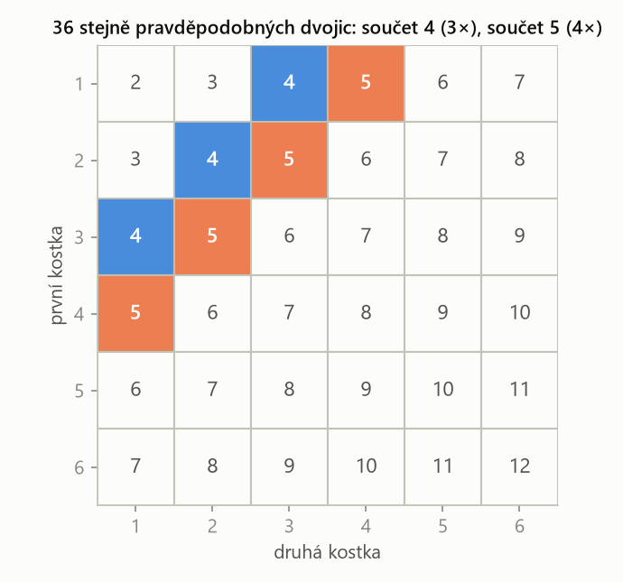
Součty nejsou stejně pravděpodobné (součet 2 má jedno políčko, součet 7 šest). Stejně pravděpodobné jsou až dvojice – proto počítáme políčka, ne součty.
Házíme dvěma stejnými kostkami. Jaká je pravděpodobnost, že součet bude 4 nebo 5?
Řešení krok po kroku
I „stejné“ kostky jsou dvě různé fyzické kostky, takže elementární jev je uspořádaná dvojice: \(n = 6 \cdot 6 = 36\).
- součet 4: (1,3), (2,2), (3,1) → 3 dvojice,
- součet 5: (1,4), (2,3), (3,2), (4,1) → 4 dvojice.
Součty 4 a 5 se vylučují, takže se sčítají:
\[ p(A) = \frac{3 + 4}{36} = \frac{7}{36} \approx 0{,}194 \]Kdybychom brali výsledky jako neuspořádané {1, 3}, {2, 2}, …, máme jen 21 možností, ale nejsou stejně pravděpodobné ({2, 2} má šanci 1/36, {1, 3} má 2/36). Klasická definice by pak dala špatný výsledek. Vždy počítej, jako by kostky měly různé barvy.
Kombinatorika: jak počítat možnosti
Když možnosti nejdou vypsat, spočítáme je vzorcem. Rozhodují dvě otázky: záleží na pořadí? a vracíme (může se prvek opakovat)?
Kombinace \(k\)-té třídy z \(n\) prvků je neuspořádaný výběr \(k\) různých prvků z \(n\). Jejich počet je kombinační číslo
\[ \binom{n}{k} = \frac{n!}{k!\,(n-k)!}. \]kolika způsoby lze vytáhnout „hrst“ \(k\) věcí najednou, když nezáleží na pořadí (karty v ruce, vybrané výrobky).
Variace \(k\)-té třídy z \(n\) prvků je uspořádaná \(k\)-tice různých prvků z \(n\). Jejich počet je
\[ \begin{aligned} V(n,k) &= \frac{n!}{(n-k)!} \\ &= n(n-1)\cdots(n-k+1) \end{aligned} \]postupné tahání bez vracení, kdy záleží na tom, co bylo první, co druhé… Pro \(k = n\) jde o permutace, jejich počet je \(n!\).
| bez opakování (without replacement) | s opakováním (with replacement) | |
|---|---|---|
| záleží na pořadí | variace \(n!/(n-k)!\) | \(n^k\) (např. hody kostkou) |
| nezáleží na pořadí | kombinace \(\binom{n}{k}\) | \(\binom{n+k-1}{k}\) (vzácné) |
Z balíčku 32 karet (4 krále) táhneme postupně 2 karty. Jaká je pravděpodobnost, že to budou dva králové?
Řešení krok po kroku
Způsob 1 – kombinace (na pořadí nezáleží): všech dvojic karet je \(\binom{32}{2}\), dvojic králů \(\binom{4}{2}\).
\[ p(A) = \frac{\binom{4}{2}}{\binom{32}{2}} = \frac{6}{496} = \frac{3}{248} \]Způsob 2 – postupně (násobíme pravděpodobnosti jednotlivých tahů):
\[ p(A) = \frac{4}{32} \cdot \frac{3}{31} = \frac{12}{992} = \frac{3}{248} \approx 0{,}0121 \]Ve druhém tahu je už jen 31 karet a 3 králové – to je podmíněná pravděpodobnost (kapitola 2). Oba způsoby musí dát totéž.
Elementárních jevů (uspořádaných trojic) je \(6^3 = 216\). Rozložíme součet na trojice hodnot a u každé spočítáme, kolika pořadími jde zapsat:
- tři různé hodnoty → \(3! = 6\) pořadí, dvě stejné → 3 pořadí, tři stejné → 1.
- Součet 7: (1,1,5) 3 + (1,2,4) 6 + (1,3,3) 3 + (2,2,3) 3 = 15.
- Součet 8: (1,1,6) 3 + (1,2,5) 6 + (1,3,4) 6 + (2,2,4) 3 + (2,3,3) 3 = 21.
Pravděpodobnější je 8. Pozor: kdo počítá jen rozklady (4 pro součet 7, 5 pro součet 8), dostane správnou odpověď náhodou – u některých dvojic součtů mají oba stejný počet rozkladů, a přesto se pravděpodobnosti liší. Rozhoduje počet pořadí.
Klasická pravděpodobnost = příznivé / všechny, ale jen pro stejně možné výsledky; počty dodá kombinatorika podle otázek „záleží na pořadí?“ a „vracím?“.
Geometrická pravděpodobnost
Je-li výsledkem pokusu bod zvolený náhodně (rovnoměrně) v oblasti \(\Omega\) s konečnou mírou (délkou, plochou, objemem) a jev \(A\) odpovídá podoblasti \(A \subset \Omega\), pak
\[ p(A) = \frac{\operatorname{míra}(A)}{\operatorname{míra}(\Omega)}. \]klasická pravděpodobnost pro nekonečně mnoho bodů: místo „počtu“ výsledků porovnáváme jejich „velikost“. Šance trefit kus terče = jeho plocha ku ploše celého terče.
Poznáš to: náhodný bod v útvaru, náhodně zvolená čísla z intervalu (randomly choose from the interval), náhodné koeficienty v mezích, „rovnoměrně“ (equally likely, uniformly).
- Prostor Ω: co je náhodné? Jedno číslo → úsečka, dvě čísla → čtverec / obdélník v rovině (každé číslo je jedna osa), bod v útvaru → útvar sám.
- Podmínku přepiš na nerovnici (\(x + y < 1\), \(xy < 0{,}09\), \(p^2 - 4q \ge 0\), vzdálenost od středu < r…).
- Nakresli hranici (rovnici místo nerovnice) a vyšrafuj, která strana splňuje podmínku.
- Spočítej plochy – geometricky (trojúhelník, kruh) nebo integrálem plochy mezi křivkami.
- \(p = \) plocha A / plocha Ω.
Náhodně zvolíme dvě čísla z intervalu \(\langle 0, 1 \rangle\). Jaká je pravděpodobnost, že jejich součet je menší než 1 a současně součin menší než 0,09?
Řešení krok po kroku
1. Prostor: jednotkový čtverec, plocha 1. Podmínky jsou \(y < 1 - x\) (pod přímkou) a \(y < 0{,}09/x\) (pod hyperbolou).
2. Průsečíky přímky a hyperboly:
\[ \begin{aligned} x(1 - x) &= 0{,}09 \\ x^2 - x + 0{,}09 &= 0 \\ x_1 = 0{,}1,\quad x_2 &= 0{,}9 \end{aligned} \]3. Pod přímkou je trojúhelník s plochou 1/2. Z něj odečteme kus, který je pod přímkou, ale nad hyperbolou (mezi \(x = 0{,}1\) a \(0{,}9\)):
\[ \begin{aligned} &\int_{0{,}1}^{0{,}9} \left(1 - x - \frac{0{,}09}{x}\right) dx \\ &\quad = \left[x - \frac{x^2}{2} - 0{,}09 \ln x\right]_{0{,}1}^{0{,}9} \end{aligned} \]4. Dosadíme meze:
\[ = 0{,}8 - 0{,}4 - 0{,}09 \ln 9 \approx 0{,}2022 \]5. Výsledek:
\[ p(A) = 0{,}5 - 0{,}2022 \approx 0{,}298 \]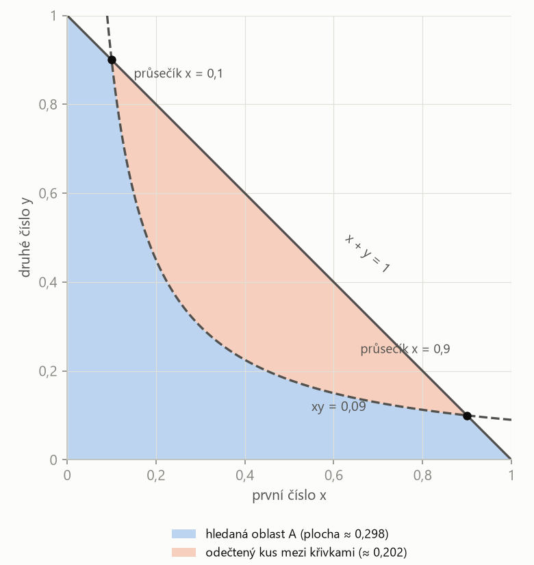
„A současně“ = průnik oblastí, tedy body pod oběma křivkami. Plochu skoro vždy dostaneš jako „jednoduchý útvar minus/plus kus mezi křivkami“ – a kus mezi křivkami je integrál z (horní − dolní) mezi průsečíky.
Na kruhový terč o průměru \(d\) dopadne náhodně bod. Jaká je pravděpodobnost, že je dál než \(d/3\) od středu?
Poloměr terče je \(d/2\). Body blíž než \(d/3\) tvoří menší kruh o poloměru \(d/3\). Poměr ploch kruhů je poměr druhých mocnin poloměrů:
\[ p(\text{blíž}) = \frac{\pi (d/3)^2}{\pi (d/2)^2} = \left(\frac{2}{3}\right)^2 = \frac{4}{9} \] \[ p(\text{dál}) = 1 - \frac{4}{9} = \frac{5}{9} \approx 0{,}556 \]Past: zaměnit průměr a poloměr – zadání dává průměr, plocha kruhu potřebuje poloměr.
Do kruhu o poloměru \(r\) je vepsaný čtverec. Náhodně zvolíme bod v kruhu. Jaká je pravděpodobnost, že neleží ve čtverci?
Úhlopříčka čtverce je průměr \(2r\), strana je proto \(a = 2r/\sqrt{2} = \sqrt{2}\,r\) a plocha čtverce \(2r^2\).
\[ p(\text{ve čtverci}) = \frac{2r^2}{\pi r^2} = \frac{2}{\pi} \] \[ p(\text{mimo}) = 1 - \frac{2}{\pi} \approx 0{,}363 \]Výsledek nezávisí na \(r\) – geometrická pravděpodobnost závisí jen na poměru ploch.
Koeficienty rovnice \(x^2 + 2px + q = 0\) volíme náhodně a rovnoměrně z \(|p| \le 1\), \(|q| \le 1\). Jaká je pravděpodobnost, že kořeny jsou reálné?
1. Prostor: čtverec \(\langle -1, 1\rangle^2\) v rovině (p, q), plocha 4.
2. Podmínka: diskriminant nezáporný.
\[ D = (2p)^2 - 4q \ge 0 \;\Leftrightarrow\; q \le p^2 \]3. Plocha pod parabolou uvnitř čtverce (q jde od −1 do \(p^2\)):
\[ \int_{-1}^{1} \left(p^2 + 1\right) dp = \frac{2}{3} + 2 = \frac{8}{3} \]4. Výsledek:
\[ p(A) = \frac{8/3}{4} = \frac{2}{3} \]V HW1/4 má rovnice tvar \(x^2 + px + q = 0\) – diskriminant je jiný, a tedy i hranice oblasti. Postup je ale stejný.
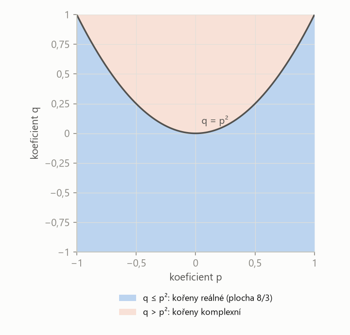
Podmínka na koeficienty (diskriminant ≥ 0) je v rovině koeficientů oblast pod křivkou. Pravděpodobnost je pak jen podíl ploch – zbytek je integrál.
Po nakreslení hranice dosaď jeden testovací bod (např. (0, 0)) do nerovnice. Když ji splňuje, je jeho strana ta správná. Tím se vyhneš odečítání špatného kusu.
„Klasická pravděpodobnost předpokládá konečně mnoho stejně možných výsledků a počítá podíl příznivých ku všem. Geometrická je její obdoba pro spojitý případ: bod je volen rovnoměrně v oblasti a pravděpodobnost je podíl míry příznivé části ku míře celé oblasti – délky, plochy nebo objemu.“
Geometrická pravděpodobnost = převeď náhodu na bod v útvaru, podmínku na oblast a pravděpodobnost na poměr ploch.
| česky | anglicky |
|---|---|
| náhodný pokus | random experiment |
| jev, elementární jev | event, elementary event (outcome) |
| prostor elementárních jevů | sample space |
| opačný jev | complementary event |
| neslučitelné jevy | mutually exclusive events |
| sjednocení / průnik | union / intersection |
| kombinace / variace / permutace | combination / variation / permutation |
| kombinační číslo | binomial coefficient („n choose k“) |
| s vracením / bez vracení | with / without replacement |
| kostka, hrací kostky | die, dice |
| balíček karet, král | deck of cards, king |
| kulička, krabice | ball (marble), box |
| součet / součin | sum / product |
| průměr / poloměr | diameter / radius |
| vepsaný kruh | inscribed circle |
Fráze ze zadání: at random = náhodně; either … or = buď, nebo; at least = aspoň; at most = nejvýše; exactly = právě; less than d away from the center = blíž než d od středu.
Shrnutí
Jevy jsou podmnožiny prostoru elementárních jevů a počítá se s nimi jako s množinami: sjednocení („nebo“), průnik („a“), opačný jev („ne“). Pravděpodobnost je nezáporná, celek má 1 a neslučitelné jevy se sčítají; z toho plyne \(p(\overline{A}) = 1 - p(A)\) a vzorec pro sjednocení. Když je výsledků konečně mnoho a jsou stejně možné, počítáme klasicky: příznivé ku všem, s pomocí kombinatoriky. Když je výsledkem bod v oblasti (nebo náhodná čísla z intervalu), počítáme geometricky: podmínku přepíšeme na oblast a pravděpodobnost je poměr ploch.
Take-home messages
- Klasická definice platí jen pro stejně možné výsledky – u kostek počítej uspořádané dvojice či trojice.
- „Aspoň jeden“ se nejsnáz počítá přes opačný jev: \(1 - p(\text{ani jeden})\).
- Kombinatoriku vyber podle dvou otázek: záleží na pořadí? vracím?
- Geometrická pravděpodobnost: dvě náhodná čísla = bod ve čtverci; podmínka = oblast; výsledek = poměr ploch.
- Vždy si nakresli obrázek a otestuj, kterou stranu křivky bereš.
Otázky ke zkoušce
Jaký je rozdíl mezi jevem a elementárním jevem?
Elementární jev je jeden nejjemnější výsledek pokusu (padla trojka); elementární jevy se vylučují a jeden vždy nastane. Jev je libovolná skupina elementárních jevů, tedy podmnožina prostoru Ω (padlo liché číslo).
Kdy smíme pravděpodobnosti dvou jevů prostě sečíst?
Jen když jsou neslučitelné (nemohou nastat současně). Obecně platí \(p(A \cup B) = p(A) + p(B) - p(A \cap B)\); průnik odečítáme, protože by byl započítán dvakrát.
Jaký předpoklad má klasická definice pravděpodobnosti a co se stane, když neplatí?
Konečně mnoho stejně možných elementárních jevů. Když výsledky stejně možné nejsou (např. součty dvou kostek), dá podíl „příznivé ku všem“ špatné číslo – musíme jev rozepsat na stejně možné výsledky (uspořádané dvojice).
Jak poznáš, zda použít kombinace, nebo variace?
Podle toho, zda záleží na pořadí. Výběr „hrsti“ najednou (karty v ruce, výrobky do kontroly) je kombinace \(\binom{n}{k}\); postupné tahání, kdy rozlišuji první a druhý tah, je variace \(n!/(n-k)!\). Pro pravděpodobnost dávají obě cesty stejný výsledek, pokud stejně počítáme čitatel i jmenovatel.
Co je geometrická pravděpodobnost a jak se počítá?
Pravděpodobnost pro bod zvolený rovnoměrně v oblasti: podíl míry (délky, plochy, objemu) příznivé části ku míře celé oblasti. Postup: náhodu převedu na bod (dvě čísla = bod ve čtverci), podmínku na nerovnici, nakreslím oblast a spočítám plochy, případně integrálem.
Proč je při volbě dvou čísel z ⟨0, 1⟩ prostorem jednotkový čtverec?
Každé číslo je jedna souřadnice: první na ose x, druhé na ose y. Dvojice čísel je tedy bod (x, y) a všechny možné dvojice vyplní čtverec \(\langle 0,1\rangle^2\) o ploše 1. Rovnoměrná volba obou čísel znamená, že každá stejně velká část čtverce má stejnou šanci.
Kapitola 2
Podmíněná pravděpodobnost a Bayes
Jak se změní pravděpodobnost, když už něco víme? Na tom stojí tři nástroje, které pokrývají většinu „slovních“ úloh: podmíněná pravděpodobnost, věta o úplné pravděpodobnosti (výsledek vzniká několika cestami) a Bayesova věta (výsledek známe a ptáme se, kterou cestou vznikl). Kdo je pozná v zadání, vyřeší úlohy 4–8 a 10 ze sady 1 i HW2.
Podmíněná pravděpodobnost
Podmíněná pravděpodobnost jevu \(A\) za podmínky \(B\), kde \(p(B) > 0\), je
\[ p(A \mid B) = \frac{p(A \cap B)}{p(B)}. \]víme, že nastalo \(B\), takže svět se „zmenší“ jen na \(B\). Ptáme se, jakou část z \(B\) zabírá i \(A\).
Ze 100 studentů je 40 žen a 10 z nich nosí brýle. Vybereme náhodně ženu – jaká je šance, že nosí brýle? Už neuvažujeme všech 100 lidí, jen 40 žen: \(10/40 = 0{,}25\). Přesně to dělá vzorec: \(p(\text{brýle} \cap \text{žena}) / p(\text{žena}) = 0{,}1/0{,}4\).
| \(p(A \cap B)\) | pravděpodobnost, že nastanou oba jevy |
| \(p(A \mid B)\) | pravděpodobnost A, když už víme, že nastalo B |
Takhle se počítá postupné tahání: \(p(\text{1. král} \cap \text{2. král}) = \tfrac{4}{32} \cdot \tfrac{3}{31}\) (úloha S1/3).
Nezávislé jevy
Jevy \(A\), \(B\) jsou nezávislé, jestliže
\[ p(A \cap B) = p(A)\, p(B). \]informace, že nastal jeden jev, nemění pravděpodobnost druhého: \(p(A \mid B) = p(A)\). Typicky opakované hody kostkou nebo pokusy „se stejnou pravděpodobností každý den“.
Neslučitelné jevy (nemohou nastat současně) jsou naopak silně závislé: když nastal jeden, víme jistě, že druhý nenastal. U neslučitelných se pravděpodobnosti sčítají (\(p(A \cup B)\)), u nezávislých se násobí (\(p(A \cap B)\)).
Věta o úplné pravděpodobnosti
Jevy \(H_1, \dots, H_n\) tvoří úplný systém jevů, jestliže jsou navzájem neslučitelné a jejich sjednocení je jistý jev: vždy nastane právě jeden z nich. Říkáme jim hypotézy.
rozdělení všech možností na „cesty“ nebo „skupiny“, které se nepřekrývají a nic nevynechávají: skupina studentů, krabice, ze které tahám, typ rodičů.
| \(H_i\) | hypotézy (cesty), úplný systém jevů |
| \(p(H_i)\) | pravděpodobnost, že jdeme cestou \(i\) (součet přes všechna \(i\) musí být 1) |
| \(p(A \mid H_i)\) | pravděpodobnost výsledku A na cestě \(i\) |
| \(p(A)\) | celková pravděpodobnost A = vážený průměr podmíněných pravděpodobností |
Bayesova věta
Tvoří-li \(H_1, \dots, H_n\) úplný systém jevů a \(p(A) > 0\), pak pro každé \(k\)
\[ p(H_k \mid A) = \frac{p(H_k)\, p(A \mid H_k)}{\sum_{i=1}^{n} p(H_i)\, p(A \mid H_i)}. \]výsledek A už známe a ptáme se „pozpátku“: kterou cestou nejspíš vznikl? Je to podíl jedné větve stromu na celkové pravděpodobnosti A.
Apriorní pravděpodobnost \(p(H_k)\) je pravděpodobnost hypotézy před provedením pokusu; aposteriorní pravděpodobnost \(p(H_k \mid A)\) je pravděpodobnost téže hypotézy poté, co víme, že nastal jev \(A\).
„co jsem si myslel předtím“ a „co si myslím teď, když vím výsledek“. Bayesova věta je recept, jak názor aktualizovat.
Poznáš to: výsledek může vzniknout několika cestami s různou úspěšností (skupiny studentů, krabice, typy rodičů, stroje). Ptá-li se „jaká je pravděpodobnost výsledku“ → úplná pravděpodobnost. Ptá-li se „víme, že výsledek nastal (if a child is allergic, given that, we find that it is white), jaká je pravděpodobnost, že to byla cesta k“ → Bayes.
- Hypotézy: pojmenuj cesty \(H_1, \dots, H_n\) a jejich pravděpodobnosti \(p(H_i)\); zkontroluj, že dávají součet 1.
- Podmíněné pravděpodobnosti \(p(A \mid H_i)\) – „úspěšnost“ každé cesty.
- Nakresli strom: větve \(p(H_i)\), za nimi \(p(A \mid H_i)\); na konci každé větve součin.
- Úplná pravděpodobnost: \(p(A)\) = součet koncových součinů.
- Bayes: \(p(H_k \mid A)\) = součin větve \(k\) / \(p(A)\).
Obrázek: strom k úloze S1/6. Každá cesta zleva doprava je jedna hypotéza; součin pravděpodobností na cestě je \(p(H_i \cap A)\).
Dítě je alergické s pravděpodobností 0,7, jsou-li alergičtí oba rodiče; 0,3, je-li alergický jeden; 0,1, není-li alergický žádný. Mezi rodiči je 75 % párů bez alergie, 20 % s jedním alergikem a 5 % s oběma. (a) Jaká je pravděpodobnost, že náhodně vybrané dítě je alergické? (b) Je-li dítě alergické, jaká je pravděpodobnost, že žádný z rodičů alergický není?
Řešení krok po kroku
1. Hypotézy: \(H_1\) = žádný rodič alergik, \(H_2\) = jeden, \(H_3\) = oba.
\[ \begin{aligned} p(H_1) &= 0{,}75 \\ p(H_2) &= 0{,}20 \\ p(H_3) &= 0{,}05 \end{aligned} \]2. Podmíněné pravděpodobnosti alergie A:
\[ \begin{aligned} p(A \mid H_1) &= 0{,}1 \\ p(A \mid H_2) &= 0{,}3 \\ p(A \mid H_3) &= 0{,}7 \end{aligned} \]3. (a) Úplná pravděpodobnost:
\[ \begin{aligned} p(A) &= 0{,}75 \cdot 0{,}1 + 0{,}2 \cdot 0{,}3 + 0{,}05 \cdot 0{,}7 \\ &= 0{,}075 + 0{,}06 + 0{,}035 = 0{,}17 \end{aligned} \]4. (b) Bayes – podíl první větve:
\[ p(H_1 \mid A) = \frac{0{,}075}{0{,}17} \approx 0{,}441 \]Zajímavost: přestože u párů bez alergie je riziko jen 10 %, tvoří skoro polovinu alergických dětí – protože takových párů je naprostá většina.
Studenti jsou rozděleni do tří stejně početných skupin. Testu se zúčastnilo 40 % studentů 1. skupiny, 30 % 2. skupiny a 30 % 3. skupiny. Úspěšnost skupin bývá 60 %, 35 % a 70 %. Učitel náhodně vezme jeden test. (a) Jaká je pravděpodobnost, že je úspěšný? (b) Je úspěšný – jaká je pravděpodobnost, že ho psal student 1. skupiny?
Řešení krok po kroku
1. Hypotézy = z které skupiny je vybraný test. Má-li každá skupina N studentů, je testů \(0{,}4N + 0{,}3N + 0{,}3N = N\), takže:
\[ \begin{aligned} p(H_1) &= 0{,}4 \\ p(H_2) &= 0{,}3 \\ p(H_3) &= 0{,}3 \end{aligned} \]2. (a) Úplná pravděpodobnost úspěšného testu U:
\[ \begin{aligned} p(U) &= 0{,}4 \cdot 0{,}6 + 0{,}3 \cdot 0{,}35 + 0{,}3 \cdot 0{,}7 \\ &= 0{,}24 + 0{,}105 + 0{,}21 = 0{,}555 \end{aligned} \]3. (b) Bayes:
\[ p(H_1 \mid U) = \frac{0{,}24}{0{,}555} \approx 0{,}432 \]Stejné jako S1/7, jen se testu zúčastnilo 60 % studentů 1. skupiny, 50 % 2. skupiny a 70 % 3. skupiny (úspěšnosti 60 %, 35 %, 70 %).
Řešení krok po kroku
1. Počet testů ze skupin: \(0{,}6N\), \(0{,}5N\), \(0{,}7N\), celkem \(1{,}8N\). Pravděpodobnost, že vybraný test je ze skupiny \(i\), je podíl jejích testů:
\[ \begin{aligned} p(H_1) &= \frac{0{,}6}{1{,}8} = \frac{1}{3} \\ p(H_2) &= \frac{0{,}5}{1{,}8} \approx 0{,}278 \\ p(H_3) &= \frac{0{,}7}{1{,}8} \approx 0{,}389 \end{aligned} \]2. (a) Úplná pravděpodobnost:
\[ \begin{aligned} p(U) &= \frac{0{,}6 \cdot 0{,}6 + 0{,}5 \cdot 0{,}35 + 0{,}7 \cdot 0{,}7}{1{,}8} \\ &= \frac{1{,}025}{1{,}8} \approx 0{,}569 \end{aligned} \]3. (b) Bayes (jmenovatel 1,8 se zkrátí):
\[ p(H_1 \mid U) = \frac{0{,}36}{1{,}025} \approx 0{,}351 \]Pravděpodobnosti hypotéz musí dát součet 1. Když zadání dává „podíly v rámci skupin“ (účast 60 %, 50 %, 70 %), je třeba je převést na podíl v celku – vydělit součtem. Kontrola \(\sum p(H_i) = 1\) odhalí chybu hned na začátku.
Za jedněmi ze tří dveří je auto, za ostatními koza. Soutěžící zvolí dveře 1. Moderátor, který ví, kde je auto, otevře dveře 2 s kozou. Soutěžící může zůstat u dveří 1, nebo přejít na dveře 3. (a) Jaká je pravděpodobnost výhry, když zůstane? (b) Když změní volbu?
Řešení krok po kroku
1. Hypotézy \(H_i\) = auto je za dveřmi \(i\), apriorně \(p(H_i) = 1/3\). Jev \(O_2\) = moderátor otevřel dveře 2.
2. Jak se moderátor chová (nesmí otevřít dveře soutěžícího ani dveře s autem):
- auto za 1: může otevřít 2 nebo 3, \(p(O_2 \mid H_1) = 1/2\);
- auto za 2: dveře 2 neotevře, \(p(O_2 \mid H_2) = 0\);
- auto za 3: musí otevřít 2, \(p(O_2 \mid H_3) = 1\).
3. Úplná pravděpodobnost:
\[ p(O_2) = \frac{1}{3}\left(\frac{1}{2} + 0 + 1\right) = \frac{1}{2} \]4. Bayes:
\[ p(H_1 \mid O_2) = \frac{\frac{1}{3} \cdot \frac{1}{2}}{\frac{1}{2}} = \frac{1}{3} \] \[ p(H_3 \mid O_2) = \frac{\frac{1}{3} \cdot 1}{\frac{1}{2}} = \frac{2}{3} \]Změna se vyplatí. Intuice: původní volba trefí auto s pravděpodobností 1/3 a otevření dveří na tom nic nezmění (moderátor otevře kozu vždy). Zbylé 2/3 „se přelijí“ na jediné zbývající dveře.
Opakování „dokud nenastane“ a hra na střídačku
Některé úlohy se ptají, co nastane dřív, nebo kdo vyhraje hru, kde se hází, dokud někdo neuspěje. Pokusy jsou nezávislé, takže pravděpodobnosti po sobě jdoucích kol se násobí a sčítají se přes všechna kola. Výsledkem je geometrická řada.
| \(q\) | pravděpodobnost, že jedno kolo „nic nerozhodne“ a hra pokračuje |
Opakovaně házíme dvěma kostkami. Jaká je pravděpodobnost, že součet 5 padne dřív než součet 7?
Řešení krok po kroku
1. V jednom hodu (obr. 1.1): \(p_5 = 4/36\), \(p_7 = 6/36\); nic se nerozhodne s pravděpodobností \(q = 1 - 10/36 = 26/36\).
2. Pětka padne poprvé v \((k+1)\)-ním hodu, když předchozích \(k\) hodů nic nerozhodlo:
\[ p(A) = \sum_{k=0}^{\infty} q^k\, p_5 = \frac{p_5}{1 - q} \]3. Dosadíme:
\[ p(A) = \frac{4/36}{10/36} = \frac{4}{10} = \frac{2}{5} \]Rychlá úvaha: rozhoduje jen ten hod, kdy padne 5 nebo 7. Za této podmínky je šance na pětku \(p_5 / (p_5 + p_7)\) – podmíněná pravděpodobnost.
Hráči A a B střídavě hází kostkou, začíná A. A vyhraje, když hodí 5 nebo 6; B vyhraje, když hodí 1. S jakou pravděpodobností vyhraje každý z nich?
1. Pravděpodobnosti v jednom hodu: A uspěje s \(a = 2/6 = 1/3\), B s \(b = 1/6\).
2. Jedno celé kolo (A hází, pak B) nic nerozhodne s pravděpodobností
\[ q = (1 - a)(1 - b) = \frac{2}{3} \cdot \frac{5}{6} = \frac{5}{9} \]3. A vyhraje v prvním kole, nebo v druhém, … – vždy na začátku kola:
\[ p(A) = \sum_{k=0}^{\infty} q^k\, a = \frac{a}{1 - q} = \frac{1/3}{4/9} = \frac{3}{4} \]4. B vyhraje, když A v kole neuspěje a B ano:
\[ p(B) = \frac{(1 - a)\, b}{1 - q} = \frac{1/9}{4/9} = \frac{1}{4} \]Kontrola: \(p(A) + p(B) = 1\) – hra skončí s pravděpodobností 1.
V krabici je 15 tenisových míčků: 9 nových, 6 starých. Náhodně vybereme 3, zahrajeme si (tím zestárnou) a vrátíme je. Pak znovu vybereme 3. Jaká je pravděpodobnost, že ve druhé hře máme \(k = 0, 1, 2, 3\) nových míčků?
Řešení krok po kroku
1. Hypotézy \(H_j\): v první hře bylo \(j\) nových míčků (\(j = 0, 1, 2, 3\)). Výběr 3 z 15 bez vracení (hypergeometrické rozdělení, kapitola 4):
\[ p(H_j) = \frac{\binom{9}{j}\binom{6}{3-j}}{\binom{15}{3}} \]Číselně (\(\binom{15}{3} = 455\)): \(p(H_0) = 20/455\), \(p(H_1) = 135/455\), \(p(H_2) = 216/455\), \(p(H_3) = 84/455\).
2. Po první hře je nových \(9 - j\) a starých \(6 + j\). Za podmínky \(H_j\):
\[ p(N_2 = k \mid H_j) = \frac{\binom{9-j}{k}\binom{6+j}{3-k}}{\binom{15}{3}} \]3. Úplná pravděpodobnost:
\[ p(N_2 = k) = \sum_{j=0}^{3} p(H_j)\, p(N_2 = k \mid H_j) \]4. Například pro \(k = 3\) (čitatelé \(\binom{9-j}{3}\) = 84, 56, 35, 20):
Čitatel: \(20 \cdot 84 + 135 \cdot 56 + 216 \cdot 35 + 84 \cdot 20 = 18\,480\), jmenovatel \(455^2\):
\[ p(N_2 = 3) = \frac{18\,480}{207\,025} \approx 0{,}089 \]5. Stejně pro ostatní \(k\):
\[ \begin{aligned} p(N_2 = 0) &\approx 0{,}117 \\ p(N_2 = 1) &\approx 0{,}415 \\ p(N_2 = 2) &\approx 0{,}379 \end{aligned} \]Kontrola: součet všech čtyř je 1.
Máme 5 krabic po 5 kuličkách; v \(i\)-té krabici je \(i\) červených a \(5 - i\) bílých. Náhodně vybereme krabici a z ní kuličku. Jaká je pravděpodobnost, že je červená?
Hypotézy \(H_i\) = vybrali jsme krabici \(i\): \(p(H_i) = 1/5\), \(p(C \mid H_i) = i/5\).
\[ \begin{aligned} p(C) &= \sum_{i=1}^{5} \frac{1}{5} \cdot \frac{i}{5} \\ &= \frac{1 + 2 + 3 + 4 + 5}{25} = \frac{15}{25} = 0{,}6 \end{aligned} \]Součet \(1 + 2 + \dots + n = n(n+1)/2\) se v těchto úlohách hodí.
V krabici je \(N\) černých a jedna bílá kulička. O počtu černých víme \(p(N = k) = (1/2)^{k+1}\), \(k = 0, 1, 2, \dots\) Vytáhneme kuličku a je bílá (jev B). Jaké je rozdělení \(N\) za této informace?
1. Je-li černých \(k\), je kuliček \(k + 1\) a bílá je jedna:
\[ p(B \mid N = k) = \frac{1}{k + 1} \]2. Úplná pravděpodobnost (substituce \(j = k + 1\)):
\[ p(B) = \sum_{k=0}^{\infty} \frac{(1/2)^{k+1}}{k + 1} = \sum_{j=1}^{\infty} \frac{(1/2)^{j}}{j} = \ln 2 \]Použili jsme řadu \(\sum_{j \ge 1} x^j / j = -\ln(1 - x)\) pro \(x = 1/2\). (V HW2/2 se místo ní hodí řada pro \(e^x\), jak radí zadání.)
3. Bayes:
\[ p(N = k \mid B) = \frac{(1/2)^{k+1}}{(k+1)\ln 2} \]pro \(k = 0, 1, 2, \dots\)
Kontrola: \(p(N = 0 \mid B) \approx 0{,}721\), původně jen 0,5. Bílá kulička je „důkaz“, že černých je spíš málo – Bayes posunul pravděpodobnost k malým \(k\).
„Podmíněná pravděpodobnost \(p(A \mid B)\) je pravděpodobnost A v situaci, kdy víme, že nastalo B – počítá se jako \(p(A \cap B)/p(B)\). Když výsledek vzniká několika neslučitelnými cestami, spočítám ho větou o úplné pravděpodobnosti jako vážený součet úspěšností cest. Bayesova věta řeší obrácenou otázku: výsledek znám a ptám se, s jakou pravděpodobností vznikl danou cestou; je to podíl jedné větve na celkové pravděpodobnosti.“
Strom s hypotézami: součet konců = úplná pravděpodobnost, jeden konec / součet = Bayes.
| česky | anglicky |
|---|---|
| podmíněná pravděpodobnost | conditional probability |
| nezávislé jevy | independent events |
| věta o úplné pravděpodobnosti | law of total probability („complete probability“) |
| úplný systém jevů, hypotézy | complete system of events, partition, hypotheses |
| Bayesova věta | Bayes' theorem |
| apriorní / aposteriorní | prior / posterior |
| pravděpodobnostní strom | probability tree |
| úspěšnost | success rate |
| geometrická řada | geometric series |
| střídavě (hrát na střídačku) | take turns |
| rodiče, dítě, alergie | parents, child, allergy (allergic) |
Fráze ze zadání: given that / if … , what is the probability that = za podmínky (→ Bayes); randomly selected = náhodně vybraný; before = dřív než; keep the choice / change the choice = zůstat / změnit volbu; we return them = vrátíme je.
Shrnutí
Podmíněná pravděpodobnost zmenší svět na jev, o kterém víme, že nastal: \(p(A \mid B) = p(A \cap B)/p(B)\). Z ní plyne věta o násobení a definice nezávislosti (\(p(A \cap B) = p(A)p(B)\)). Když se výsledek dá rozdělit na cesty (hypotézy), které se nepřekrývají a pokrývají všechno, je jeho pravděpodobnost váženým součtem úspěšností cest – věta o úplné pravděpodobnosti. Bayesova věta obrací směr: ze známého výsledku vrací pravděpodobnost cesty. Opakování „dokud něco nenastane“ vede na geometrickou řadu.
Take-home messages
- „Víme, že nastalo …“ v zadání = podmíněná pravděpodobnost; hledá-li se příčina, je to Bayes.
- Hypotézy musí být neslučitelné a dát součet 1 – vždy zkontroluj.
- Nakresli strom: součin na větvi, součet konců = \(p(A)\), větev / součet = Bayes.
- Nezávislé jevy se násobí, neslučitelné sčítají – a neslučitelné nejsou nezávislé.
- Opakované kolo, které nic nerozhodne, dá geometrickou řadu \(1/(1-q)\).
Otázky ke zkoušce
Definujte podmíněnou pravděpodobnost a vysvětlete její význam.
Pro \(p(B) > 0\) je \(p(A \mid B) = p(A \cap B)/p(B)\). Je to pravděpodobnost A v situaci, kdy už víme, že nastalo B: jako nový celek bereme jen B a ptáme se, jakou jeho část tvoří A.
Kdy jsou dva jevy nezávislé? Jsou neslučitelné jevy nezávislé?
Když \(p(A \cap B) = p(A)\,p(B)\), ekvivalentně \(p(A \mid B) = p(A)\). Neslučitelné jevy s nenulovou pravděpodobností nezávislé nejsou: \(p(A \cap B) = 0\), ale \(p(A)p(B) > 0\); když nastane jeden, víme, že druhý nenastal.
Vyslovte větu o úplné pravděpodobnosti. Co musí splňovat hypotézy?
Tvoří-li \(H_1, \dots, H_n\) úplný systém jevů, platí \(p(A) = \sum p(H_i)\,p(A \mid H_i)\). Hypotézy musí být navzájem neslučitelné a jejich sjednocení musí být jistý jev, tj. \(\sum p(H_i) = 1\).
Vyslovte Bayesovu větu. Kdy ji použijete?
\[ p(H_k \mid A) = \frac{p(H_k)\,p(A \mid H_k)}{\sum_i p(H_i)\,p(A \mid H_i)} \]
Použiji ji, když znám výsledek pokusu (A nastalo) a ptám se na pravděpodobnost příčiny – hypotézy. Ve jmenovateli je úplná pravděpodobnost A.
Co je apriorní a aposteriorní pravděpodobnost?
Apriorní \(p(H_k)\) je pravděpodobnost hypotézy předtím, než známe výsledek pokusu; aposteriorní \(p(H_k \mid A)\) je pravděpodobnost téže hypotézy po zjištění, že nastalo A. Bayesova věta převádí apriorní na aposteriorní.
Proč se v Monty Hallově úloze vyplatí změnit volbu?
Původní volba trefí auto s pravděpodobností 1/3 a moderátor, který vždy otevře dveře s kozou, na tom nic nezmění. Bayes:
- \(p(O_2 \mid H_1) = 1/2\), \(p(O_2 \mid H_3) = 1\), takže \(p(O_2) = 1/2\);
- \(p(H_1 \mid O_2) = 1/3\), \(p(H_3 \mid O_2) = 2/3\).
Jak spočítat pravděpodobnost, že jev A nastane dřív než jev B při opakovaných nezávislých pokusech?
Kolo, ve kterém nenastane ani A, ani B, nic nerozhodne (pravděpodobnost \(q = 1 - p_A - p_B\)). Sečteme přes všechna kola geometrickou řadu: \(\sum q^k p_A = p_A/(1-q) = p_A/(p_A + p_B)\).
Kapitola 3
Diskrétní náhodná veličina
Místo jevů začneme počítat s čísly: počet tahů, počet opravených písemek, počet dní přípravy. Náhodná veličina přiřadí každému výsledku číslo a její „rozdělení“ říká, s jakou pravděpodobností nabude které hodnoty. Z rozdělení pak spočítáme střední hodnotu (kolik průměrně) a rozptyl (jak moc to kolísá). To je obsah sady 2.
Náhodná veličina a její rozdělení
Náhodná veličina \(X\) je funkce, která každému elementárnímu jevu přiřadí reálné číslo tak, že pro každé \(x\) má jev \(\{X < x\}\) definovanou pravděpodobnost.
„číslo, které je výsledkem pokusu“. Místo „padla dvě orla a panna“ říkáme „X = 2 orli“. S čísly umíme počítat průměry a rozptyly.
Náhodná veličina je diskrétní, jestliže nabývá jen konečně nebo spočetně mnoha hodnot \(x_1, x_2, \dots\) (její distribuční funkce je schodovitá).
hodnoty se dají očíslovat a vypsat: 0, 1, 2, … Typicky počty (kolik, kolikrát, na kolikátý pokus). Opakem je spojitá veličina (kapitola 5) – délka, čas, napětí.
Pravděpodobnostní funkce diskrétní veličiny \(X\) je \(p(x_i) = p(X = x_i)\) pro všechny hodnoty \(x_i\), kterých \(X\) nabývá. Platí \(p(x_i) \ge 0\) a \(\sum_i p(x_i) = 1\).
tabulka „hodnota → pravděpodobnost“. V anglických skriptech předmětu se jí říká frequency function \(f(x_i)\), jinde probability mass function. „Urči rozdělení“ (determine its distribution) znamená právě tuto tabulku nebo vzorec.
Distribuční funkce náhodné veličiny \(X\) je funkce
\[ F(x) = p(X < x), \qquad x \in \mathbb{R}. \]„pravděpodobnost, že X vyjde menší než x“ – nasčítané pravděpodobnosti všech hodnot vlevo od x. U diskrétní veličiny je to schodovitá funkce, která v každé hodnotě \(x_i\) vyskočí o \(p(x_i)\).
Skripta předmětu (a výsledky sad) používají ostrou nerovnost. Distribuční funkce je proto spojitá zleva a hodnota v bodě skoku je ta „dolní“: intervaly se píšou jako \((x_i, x_{i+1}\rangle\). Anglické učebnice často používají \(F(x) = P(X \le x)\) se skoky „nahoru“ už v bodě – pro spojité veličiny je to jedno, pro diskrétní ne.
- \(0 \le F(x) \le 1\), \(F\) je neklesající, \(F(-\infty) = 0\), \(F(\infty) = 1\).
- Pravděpodobnost intervalu:
- Velikost skoku v bodě je pravděpodobnost té hodnoty:
- Opačné nerovnosti přes doplněk: \(p(X \ge a) = 1 - F(a)\).
| \(F(x_i^{+})\) | hodnota těsně vpravo od bodu \(x_i\) (po skoku) |
| \(F(x_i)\) | hodnota v bodě = před skokem (protože \(X < x_i\) hodnotu \(x_i\) nezahrnuje) |
Poznáš to: determine its distribution, probability function, distribution function; X je „počet něčeho“.
- Vypiš všechny hodnoty, kterých může X nabýt (nejmenší až největší).
- Pro každou hodnotu spočítej \(p(X = x_i)\) – většinou násobením pravděpodobností po sobě jdoucích kroků (věta o násobení).
- Kontrola: součet = 1.
- Distribuční funkce: postupně sčítej. Na \((-\infty, x_1\rangle\) je 0, na \((x_1, x_2\rangle\) je \(p(x_1)\), na \((x_2, x_3\rangle\) je \(p(x_1) + p(x_2)\), …, za poslední hodnotou 1.
V sáčku jsou 3 bílé a 2 červené kuličky. Taháme bez vracení, dokud nevytáhneme červenou. X = počet tahů. Urči rozdělení a distribuční funkci X.
Řešení krok po kroku
1. Hodnoty: nejdřív v 1. tahu, nejpozději ve 4. (tři bílé mohou přijít před červenou): \(X \in \{1, 2, 3, 4\}\).
2. Pravděpodobnosti (bílé, …, bílé, pak červená; v každém tahu ubude jedna kulička):
\[ \begin{aligned} p(1) &= \tfrac{2}{5} = 0{,}4 \\ p(2) &= \tfrac{3}{5} \cdot \tfrac{2}{4} = 0{,}3 \\ p(3) &= \tfrac{3}{5} \cdot \tfrac{2}{4} \cdot \tfrac{2}{3} = 0{,}2 \\ p(4) &= \tfrac{3}{5} \cdot \tfrac{2}{4} \cdot \tfrac{1}{3} \cdot \tfrac{2}{2} = 0{,}1 \end{aligned} \]3. Kontrola: \(0{,}4 + 0{,}3 + 0{,}2 + 0{,}1 = 1\).
4. Distribuční funkce \(F(x) = p(X < x)\):
\[ F(x) = \begin{cases} 0, & x \in (-\infty, 1\rangle \\ 0{,}4, & x \in (1, 2\rangle \\ 0{,}7, & x \in (2, 3\rangle \\ 0{,}9, & x \in (3, 4\rangle \\ 1, & x \in (4, \infty) \end{cases} \]
Výška každého schodu = výška sloupce vlevo. V samotném bodě skoku je F ještě na nižší úrovni (plné kolečko dole), protože \(X < x\) danou hodnotu nezahrnuje.
X = počet opravených písemek za hodinu. Distribuční funkce je 0 na \((-\infty, 8\rangle\), 0,1 na \((8, 9\rangle\), 0,3 na \((9, 10\rangle\), 0,6 na \((10, 11\rangle\), 0,9 na \((11, 12\rangle\) a 1 na \((12, \infty)\). Urči pravděpodobnost, že za hodinu bude opraveno (a) právě 10, (b) méně než 10, (c) aspoň 10 písemek.
Řešení krok po kroku
1. Z distribuční funkce zpět na pravděpodobnostní: skok v bodě = pravděpodobnost hodnoty.
\[ \begin{aligned} p(8) &= 0{,}1 - 0 = 0{,}1 \\ p(9) &= 0{,}3 - 0{,}1 = 0{,}2 \\ p(10) &= 0{,}6 - 0{,}3 = 0{,}3 \\ p(11) &= 0{,}9 - 0{,}6 = 0{,}3 \\ p(12) &= 1 - 0{,}9 = 0{,}1 \end{aligned} \]2. (a) Právě 10: \(p(X = 10) = 0{,}3\).
3. (b) Méně než 10 – to je přímo definice F:
\[ p(X < 10) = F(10) = 0{,}3 \]4. (c) Aspoň 10 – doplněk k (b):
\[ p(X \ge 10) = 1 - F(10) = 0{,}7 \]Střední hodnota a rozptyl
Střední hodnota diskrétní náhodné veličiny je
\[ EX = \sum_i x_i\, p(x_i), \]pokud řada absolutně konverguje.
vážený průměr hodnot, kde vahami jsou pravděpodobnosti. Kdybychom pokus opakovali mnohokrát, průměr výsledků by se blížil EX. Je to „těžiště“ sloupců grafu.
Rozptyl je střední hodnota čtverce odchylky od střední hodnoty, \(DX = E(X - EX)^2\); směrodatná odchylka je \(\sigma = \sqrt{DX}\).
jak daleko od průměru hodnoty typicky padají. Rozptyl je v „jednotkách na druhou“, proto se pro představu bere jeho odmocnina σ ve stejných jednotkách jako X. Skripta značí rozptyl \(DX\) nebo \(D(X)\), anglicky též \(\operatorname{Var} X\).
| \(EX^2\) | střední hodnota druhé mocniny – stejný součet jako EX, jen s \(x_i^2\) |
| \((EX)^2\) | druhá mocnina střední hodnoty |
Vlastnosti: \(E(aX + b) = a\,EX + b\), \(D(aX + b) = a^2\,DX\) (posunutí rozptyl nemění, natažení ho násobí čtvercem).
Poznáš to: expected (mean) value, expected number of, variance, average.
- Do tabulky přidej řádky \(x_i\,p_i\) a \(x_i^2\,p_i\).
- \(EX\) = součet řádku \(x_i\,p_i\); \(EX^2\) = součet řádku \(x_i^2\,p_i\).
- \(DX = EX^2 - (EX)^2\); kontrola: rozptyl nesmí vyjít záporný.
X = počet dní, které student věnuje přípravě na zkoušku:
| \(x_i\) | 0 | 1 | 2 | 3 | 4 | 5 | 6 |
|---|---|---|---|---|---|---|---|
| \(p(x_i)\) | 0,4 | 0,35 | 0,15 | 0,05 | 0,03 | 0,01 | 0,01 |
(a) Urči střední počet dní přípravy. (b) Urči rozptyl.
Řešení krok po kroku
1. Střední hodnota:
Součiny \(x_i\,p_i\) jsou 0; 0,35; 0,3; 0,15; 0,12; 0,05; 0,06. Sečteme je:
\[ \begin{aligned} EX &= 0{,}35 + 0{,}3 + 0{,}15 \\ &\quad + 0{,}12 + 0{,}05 + 0{,}06 \\ &= 1{,}03 \end{aligned} \]2. Střední hodnota čtverců:
Součiny \(x_i^2\,p_i\) jsou 0; 0,35; 0,6; 0,45; 0,48; 0,25; 0,36:
\[ \begin{aligned} EX^2 &= 0{,}35 + 0{,}6 + 0{,}45 \\ &\quad + 0{,}48 + 0{,}25 + 0{,}36 \\ &= 2{,}49 \end{aligned} \]3. Rozptyl:
\[ DX = 2{,}49 - 1{,}03^2 = 2{,}49 - 1{,}0609 = 1{,}4291 \]Směrodatná odchylka \(\sigma = \sqrt{1{,}4291} \approx 1{,}20\) dne.

EX nemusí být hodnota, které X skutečně nabývá (1,03 dne) – je to těžiště. Nejpravděpodobnější hodnota (0) je jiná věc. Dlouhý „ocas“ doprava táhne těžiště od nuly.
X = počet dní bezporuchového chodu přístroje. Ze zadané tabulky neznáme \(p(0)\) a \(p(3)\):
| \(x_i\) | 0 | 1 | 2 | 3 | 4 | 5 | 6 |
|---|---|---|---|---|---|---|---|
| \(p(x_i)\) | ? | 0,35 | 0,15 | ? | 0,03 | 0,01 | 0,01 |
Urči je, víš-li, že střední počet dní bez poruchy je 1,5.
Řešení krok po kroku
1. Normování (součet je 1); známé hodnoty dávají 0,55:
\[ p(0) + p(3) = 1 - 0{,}55 = 0{,}45 \]2. Střední hodnota (člen s \(x = 0\) je nulový):
\[ 0{,}35 + 0{,}3 + 3\,p(3) + 0{,}12 + 0{,}05 + 0{,}06 = 1{,}5 \] \[ 0{,}88 + 3\,p(3) = 1{,}5 \;\Rightarrow\; p(3) = \frac{0{,}62}{3} \approx 0{,}2067 \]3. Dopočet z normování:
\[ p(0) = 0{,}45 - 0{,}2067 \approx 0{,}2433 \]\(EX^2\) znamená \(E(X^2)\) – nejdřív umocnit hodnoty, pak průměrovat. \((EX)^2\) je umocněný průměr. Jejich rozdíl je právě rozptyl, a ten je vždy \(\ge 0\). Vyjde-li záporný, je chyba v jednom z nich.
„Diskrétní náhodná veličina nabývá konečně nebo spočetně mnoha hodnot; popisuje ji pravděpodobnostní funkce \(p(x_i) = p(X = x_i)\), jejíž hodnoty dávají součet 1. Distribuční funkce \(F(x) = p(X < x)\) je u ní schodovitá, neklesající, zleva spojitá a skáče v každé hodnotě o její pravděpodobnost. Střední hodnota je vážený průměr \(\sum x_i p_i\), rozptyl je střední kvadratická odchylka od ní, prakticky \(EX^2 - (EX)^2\).“
Tabulka hodnot a pravděpodobností (součet 1) → nasčítáním distribuční funkce, váženým průměrem EX, průměrem čtverců mínus čtverec průměru DX.
| česky | anglicky |
|---|---|
| náhodná veličina | random variable |
| diskrétní / spojitá | discrete / continuous |
| rozdělení (pravděpodobnosti) | (probability) distribution |
| pravděpodobnostní funkce | probability function, frequency function, pmf |
| distribuční funkce | distribution function, cumulative distribution function (CDF) |
| střední hodnota | expected value, mean (value), expectation |
| rozptyl | variance (dispersion) |
| směrodatná odchylka | standard deviation |
| schodovitá funkce | step function |
| spojitá zleva | left-continuous |
| bezporuchový chod | trouble-free operation, uptime |
Fráze ze zadání: determine its distribution = urči rozdělení (tabulku / vzorec \(p(x_i)\)); just 10 = právě 10; less than / at least / at most / more than = méně než / aspoň / nejvýše / více než.
Shrnutí
Náhodná veličina převádí výsledek pokusu na číslo. Diskrétní veličinu popisuje pravděpodobnostní funkce (tabulka hodnot a jejich pravděpodobností se součtem 1) nebo ekvivalentně distribuční funkce \(F(x) = p(X < x)\), která je schodovitá a v každé hodnotě skočí o její pravděpodobnost. Z distribuční funkce se pravděpodobnost hodnoty čte jako výška skoku a pravděpodobnost „menší než a“ přímo jako \(F(a)\). Střední hodnota je vážený průměr hodnot, rozptyl je průměr čtverců odchylek, počítaný jako \(EX^2 - (EX)^2\).
Take-home messages
- „Urči rozdělení“ = vypiš všechny hodnoty a jejich pravděpodobnosti; zkontroluj součet 1.
- V tomto předmětu \(F(x) = p(X < x)\): intervaly \((x_i, x_{i+1}\rangle\), \(p(X < a) = F(a)\), \(p(X \ge a) = 1 - F(a)\).
- Skok distribuční funkce = pravděpodobnost hodnoty.
- Střední hodnota \(EX = \sum x_i p_i\), směrodatná odchylka \(\sigma = \sqrt{DX}\).
- Rozptyl \(DX = \sum x_i^2 p_i - (EX)^2\).
- Neznámé pravděpodobnosti dopočti ze dvou rovnic: součet = 1 a zadané EX.
Otázky ke zkoušce
Co je náhodná veličina a kdy je diskrétní?
Funkce, která každému výsledku pokusu přiřadí reálné číslo. Diskrétní je, když nabývá jen konečně nebo spočetně mnoha hodnot – typicky počty. Její distribuční funkce je schodovitá.
Definujte distribuční funkci a vyjmenujte její vlastnosti.
\(F(x) = p(X < x)\). Je neklesající, má hodnoty v \(\langle 0, 1\rangle\), \(F(-\infty) = 0\), \(F(\infty) = 1\), je spojitá zleva a platí \(p(a \le X < b) = F(b) - F(a)\). U diskrétní veličiny skáče v každé hodnotě o její pravděpodobnost.
Jak z distribuční funkce zjistíte pravděpodobnost konkrétní hodnoty?
Jako výšku skoku v tom bodě: hodnota těsně vpravo minus hodnota v bodě, \(p(X = x_i) = F(x_i^+) - F(x_i)\). Např. když F skočí z 0,3 na 0,6 v bodě 10, je \(p(X = 10) = 0{,}3\).
Co vyjadřuje střední hodnota a jak se počítá?
Průměrnou hodnotu, ke které by se blížil průměr výsledků při mnoha opakováních – těžiště rozdělení. \(EX = \sum x_i\,p(x_i)\).
Co vyjadřuje rozptyl a proč se počítá i směrodatná odchylka?
Rozptyl \(DX = E(X - EX)^2\) měří, jak moc hodnoty kolísají kolem střední hodnoty. Je ale v jednotkách na druhou, proto se pro interpretaci používá \(\sigma = \sqrt{DX}\) ve stejných jednotkách jako X. Počítá se \(DX = EX^2 - (EX)^2\).
Jak se změní EX a DX, když veličinu vynásobíme konstantou a přičteme konstantu?
\(E(aX + b) = a\,EX + b\) a \(D(aX + b) = a^2\,DX\). Posunutí o b posune průměr, ale rozptyl nezmění; vynásobení a násobí průměr a rozptyl čtvercem \(a^2\).
Kapitola 4
Diskrétní rozdělení
Většina úloh se sadami 2–4 nepotřebuje rozdělení vymýšlet: stačí poznat, který známý typ popisuje situaci, a dosadit do vzorce. Rozhodují tři otázky: počítám úspěchy v pevném počtu pokusů, nebo čekám na první úspěch? Táhnu s vracením, nebo bez? A jde o počet událostí za čas? Tato kapitola dává ke každému typu definici, vzorce a rozpoznávací znaky.
Které rozdělení použít
| situace v zadání | rozdělení | \(p(X = k)\) | EX, DX |
|---|---|---|---|
| jeden pokus, úspěch ano/ne | alternativní A(p) | \(p\) pro 1, \(1-p\) pro 0 | \(p\); \(p(1-p)\) |
| \(n\) nezávislých pokusů, stejné \(p\), kolik úspěchů | binomické Bi(n, p) | \(\binom{n}{k} p^k (1-p)^{n-k}\) | \(np\); \(np(1-p)\) |
| opakuji, dokud nenastane úspěch; X = počet neúspěchů před ním | geometrické Ge(p) | \(p(1-p)^k\), \(k = 0, 1, \dots\) | \(\frac{1-p}{p}\); \(\frac{1-p}{p^2}\) |
| výběr \(n\) kusů bez vracení z \(N\), v nichž je \(M\) „označených“ | hypergeometrické H(N, M, n) | \(\binom{M}{k}\binom{N-M}{n-k} / \binom{N}{n}\) | \(n\frac{M}{N}\); viz níže |
| počet událostí za čas (průměrně λ), vzácné jevy | Poissonovo Po(λ) | \(\frac{\lambda^k}{k!} e^{-\lambda}\) | \(\lambda\); \(\lambda\) |
Binomické rozdělení
Bernoulliho posloupnost je řada \(n\) navzájem nezávislých pokusů, z nichž každý má jen dva výsledky (úspěch / neúspěch) a úspěch má v každém pokusu stejnou pravděpodobnost \(p\).
„opakuji totéž pořád dokola a pokusy se navzájem neovlivňují“: hody kostkou, kontrola výrobků z velké série, testy se stejnou šancí na úspěch.
Veličina X má binomické rozdělení Bi(n, p), jestliže udává počet úspěchů v Bernoulliho posloupnosti \(n\) pokusů s pravděpodobností úspěchu \(p\):
\[ p(X = k) = \binom{n}{k} p^k (1 - p)^{n-k} \]pro \(k = 0, 1, \dots, n\).
\(p^k (1-p)^{n-k}\) je pravděpodobnost jednoho konkrétního pořadí (k úspěchů, n − k neúspěchů); \(\binom{n}{k}\) je počet pořadí, ve kterých to může nastat.
| \(n\) | počet pokusů (pevně daný předem) |
| \(p\) | pravděpodobnost úspěchu v jednom pokusu („úspěch“ = to, co počítáme, i kdyby to byl zmetek) |
| \(k\) | počet úspěchů, 0 až \(n\) |
Poznáš to: pevný počet n independent repetitions / n products / n tests, stejná pravděpodobnost the same every time, otázka exactly k, at least, at most, number of ….
- Urči \(n\) a \(p\) – co je „úspěch“ (to, co X počítá).
- „Právě k“ → jeden člen vzorce.
- „Aspoň k“ / „nejvýše k“ → součet členů; je-li jich hodně, vezmi doplněk (\(p(X \ge 2) = 1 - p(0) - p(1)\)).
- Konkrétní pořadí („úspěch právě v 1. a 3. pokusu“) → bez kombinačního čísla, jen součin.
Pět nezávislých hodů kostkou. Jaká je pravděpodobnost, že šestka padne ve 2. a 4. hodu, ale ne v 1., 3. a 5.?
Řešení krok po kroku
Hody jsou nezávislé, takže násobíme: dvakrát šestka (\(1/6\)), třikrát ne-šestka (\(5/6\)).
\[ p(A) = \left(\frac{5}{6}\right)^3 \left(\frac{1}{6}\right)^2 = \frac{125}{7776} \approx 0{,}0161 \]Pět nezávislých hodů kostkou. Jaká je pravděpodobnost, že šestka padne právě dvakrát?
Řešení krok po kroku
Je to S2/7 vynásobená počtem pořadí, ve kterých mohou být dvě šestky mezi pěti hody: \(\binom{5}{2} = 10\).
\[ \begin{aligned} p(X = 2) &= \binom{5}{2} \left(\frac{1}{6}\right)^2 \left(\frac{5}{6}\right)^3 \\ &= 10 \cdot \frac{125}{7776} \approx 0{,}161 \end{aligned} \]Výrobek splní normu s pravděpodobností 0,8. Popiš rozdělení počtu nevyhovujících mezi 3 výrobky.
Řešení krok po kroku
X ~ Bi(3; 0,2), \(X \in \{0, 1, 2, 3\}\):
\[ \begin{aligned} p(0) &= 0{,}8^3 = 0{,}512 \\ p(1) &= 3 \cdot 0{,}2 \cdot 0{,}8^2 = 0{,}384 \\ p(2) &= 3 \cdot 0{,}2^2 \cdot 0{,}8 = 0{,}096 \\ p(3) &= 0{,}2^3 = 0{,}008 \end{aligned} \]Výrobek je kvalitní s pravděpodobností 0,75. Vybereme 5 výrobků; X = počet kvalitních. Urči rozdělení X.
Řešení krok po kroku
X ~ Bi(5; 0,75). Číselně:
| k | 0 | 1 | 2 | 3 | 4 | 5 |
|---|---|---|---|---|---|---|
| p(k) | 0,0010 | 0,0146 | 0,0879 | 0,2637 | 0,3955 | 0,2373 |
\(EX = 5 \cdot 0{,}75 = 3{,}75\), nejpravděpodobnější hodnota je 4.
Student Adam píše 6 testů, každý zvládne s pravděpodobností 0,85. X = počet úspěšných testů. Urči rozdělení X a pravděpodobnost, že (a) uspěje právě třikrát, (b) aspoň dvakrát, (c) nejvýše dvakrát, (d) uspěje jen v prvním testu, (e) uspěje v prvním testu.
Řešení krok po kroku
X ~ Bi(6; 0,85), \(p(k) = \binom{6}{k} 0{,}85^k\, 0{,}15^{6-k}\).
(a) Právě tři:
\[ p(3) = 20 \cdot 0{,}85^3 \cdot 0{,}15^3 \approx 0{,}0415 \](b) Aspoň dva – přes doplněk (stačí dva členy):
\[ \begin{aligned} p(X \ge 2) &= 1 - p(0) - p(1) \\ &= 1 - 0{,}15^6 - 6 \cdot 0{,}85 \cdot 0{,}15^5 \\ &\approx 0{,}9996 \end{aligned} \](c) Nejvýše dva:
\[ p(X \le 2) = p(0) + p(1) + p(2) \] \[ \begin{aligned} p(X \le 2) &\approx 0{,}0000114 + 0{,}000387 \\ &\quad + 0{,}005486 \\ &\approx 0{,}00589 \end{aligned} \](d) Jen v prvním: přesně předepsané pořadí (úspěch, pak 5 neúspěchů), kombinační číslo se nepíše:
\[ p = 0{,}85 \cdot 0{,}15^5 \approx 0{,}0000645 \](e) Uspěje v prvním (ostatní libovolně): \(p = 0{,}85\).
Spočítej střední hodnotu a rozptyl počtu úspěšných testů z S3/1.
Řešení krok po kroku
Pro binomické rozdělení není třeba sčítat tabulku – stačí vzorce:
\[ EX = np = 6 \cdot 0{,}85 = 5{,}1 \] \[ DX = np(1 - p) = 6 \cdot 0{,}85 \cdot 0{,}15 = 0{,}765 \]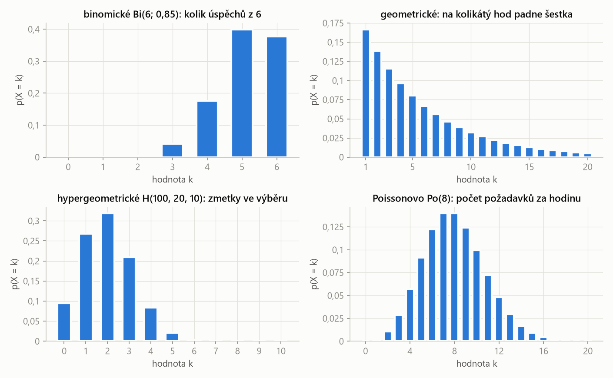
Binomické a hypergeometrické mají konečně hodnot (0 až n), geometrické a Poissonovo nekonečně (0, 1, 2, …). Geometrické vždy klesá – nejpravděpodobnější je úspěch hned napoprvé; Poissonovo má vrchol kolem λ.
Geometrické rozdělení: čekání na první úspěch
Veličina X má geometrické rozdělení Ge(p), jestliže udává počet neúspěchů před prvním úspěchem v Bernoulliho posloupnosti s pravděpodobností úspěchu \(p\):
\[ p(X = k) = p\,(1 - p)^k, \qquad k = 0, 1, 2, \dots \]„k-krát se nepovede, pak se to povede“. Pokusů není pevný počet – opakujeme, dokud se nepovede. Počítá-li X místo neúspěchů číslo pokusu, ve kterém přišel úspěch, je \(p(X = k) = (1-p)^{k-1} p\) pro \(k = 1, 2, \dots\)
- X = počet neúspěchů před úspěchem (\(k \ge 0\)): \[ EX = \frac{1-p}{p} \]
- X = pořadí úspěšného pokusu (\(k \ge 1\)): \[ EX = \frac{1}{p} \]
| \(p\) | pravděpodobnost „ukončující“ události (to, na co čekáme) |
| rozptyl | v obou variantách \(DX = (1-p)/p^2\) (posunutí o 1 rozptyl nemění) |
Přečti, co přesně X počítá. „Počet dní, než poprvé přijde pozdě“ nebo „počet správných odpovědí před chybou“ začíná od 0. „Na kolikátý hod padne šestka“ začíná od 1. A pozor, co je „úspěch“: je to ta událost, která pokus ukončí (pozdní příchod, špatná odpověď), i když je pro studenta nepříjemná.
Adam přijde včas s pravděpodobností 1/4, každý den stejně. X = počet dní, než poprvé přijde pozdě. Urči rozdělení X.
Řešení krok po kroku
„Úspěch“ (událost, která čekání ukončí) je pozdní příchod: \(p = 1 - 1/4 = 3/4\). X = počet dní včas před ním, takže X ~ Ge(3/4) od nuly:
\[ p(X = n) = \left(\frac{1}{4}\right)^n \cdot \frac{3}{4}, \qquad n = 0, 1, 2, \dots \]Kontrola součtu geometrickou řadou: \(\tfrac{3}{4} \cdot \tfrac{1}{1 - 1/4} = 1\).
Učitel se ptá studenta tak dlouho, dokud neodpoví špatně. Správná odpověď má pravděpodobnost 0,1. X = počet správných odpovědí. Urči rozdělení X.
Řešení krok po kroku
Ukončující událost je špatná odpověď, \(p = 0{,}9\). X = počet správných před ní:
\[ p(X = k) = 0{,}1^k \cdot 0{,}9, \qquad k = 0, 1, 2, \dots \]Střední hodnota (varianta od nuly):
\[ EX = \frac{1 - p}{p} = \frac{0{,}1}{0{,}9} \approx 0{,}11 \]Házíme kostkou, dokud nepadne šestka. X = počet hodů. Urči pravděpodobnostní funkci a střední hodnotu X.
Řešení krok po kroku
1. Šestka padne v \(k\)-tém hodu, když předchozích \(k - 1\) hodů nebyla:
\[ p(X = k) = \left(\frac{5}{6}\right)^{k-1} \cdot \frac{1}{6}, \qquad k = 1, 2, \dots \]2. Střední hodnota z definice; použijeme derivovanou geometrickou řadu \(\sum_{k \ge 1} k q^{k-1} = 1/(1-q)^2\):
\[ EX = \sum_{k=1}^{\infty} k \left(\frac{5}{6}\right)^{k-1} \frac{1}{6} = \frac{1}{6} \cdot \frac{1}{(1 - 5/6)^2} = 6 \]Intuice: šestka padá v průměru jednou za 6 hodů, takže na ni čekáme průměrně 6 hodů (\(EX = 1/p\)).
Studenti píšou 6 testů. Kdo některý test nezvládne, další už psát nesmí. Úspěch má vždy pravděpodobnost 0,85. X = počet napsaných testů. Urči rozdělení X.
Řešení krok po kroku
1. Napíše právě \(k < 6\) testů, když prvních \(k - 1\) zvládne a \(k\)-tý ne:
\[ p(X = k) = 0{,}85^{k-1} \cdot 0{,}15, \qquad k = 1, \dots, 5 \]2. Šestý test napíše, když zvládne prvních pět – výsledek šestého už na počtu nic nemění:
\[ \begin{aligned} p(X = 6) &= 0{,}85^5 \cdot 0{,}15 + 0{,}85^6 \\ &= 0{,}85^5 \approx 0{,}444 \end{aligned} \]3. Číselně: 0,15; 0,1275; 0,1084; 0,0921; 0,0783; 0,4437 (součet 1).
Hypergeometrické rozdělení: výběr bez vracení
Veličina X má hypergeometrické rozdělení H(N, M, n), jestliže udává počet prvků se sledovanou vlastností ve výběru \(n\) prvků bez vracení ze souboru \(N\) prvků, z nichž \(M\) vlastnost má:
\[ p(X = k) = \frac{\binom{M}{k}\binom{N - M}{n - k}}{\binom{N}{n}}. \]klasická pravděpodobnost: ve jmenovateli všechny možné výběry, v čitateli „k z označených a zbytek z neoznačených“. Na rozdíl od binomického se po každém tahu mění složení.
| \(N\) | velikost celého souboru |
| \(M\) | počet prvků se sledovanou vlastností (zmetky, červivá jablka) |
| \(n\) | velikost výběru |
| \(\frac{N-n}{N-1}\) | korekce na konečný soubor; bez ní by šlo o rozptyl binomického rozdělení s \(p = M/N\) |
Mezi 100 výrobky je 20 zmetků. Náhodně vybereme 10. X = počet zmetků mezi vybranými. Urči rozdělení X.
Řešení krok po kroku
\(N = 100\), \(M = 20\), \(n = 10\):
\[ p(X = k) = \frac{\binom{20}{k}\binom{80}{10 - k}}{\binom{100}{10}}, \qquad k = 0, 1, \dots, 10 \]Číselně (zbylé hodnoty jsou malé):
| k | 0 | 1 | 2 | 3 | 4 | 5 | 6 |
|---|---|---|---|---|---|---|---|
| p(k) | 0,0951 | 0,2679 | 0,3182 | 0,2092 | 0,0841 | 0,0215 | 0,0035 |
Střední hodnota \(EX = n M/N = 10 \cdot 0{,}2 = 2\).
V košíku je 10 jablek, 30 % z nich je červivých. Náhodně vybereme 4. X = počet červivých. Urči pravděpodobnostní funkci, EX a DX.
Řešení krok po kroku
1. \(\binom{10}{4} = 210\), \(X \in \{0, 1, 2, 3\}\):
\[ \begin{aligned} p(0) &= \tfrac{1 \cdot 35}{210} = \tfrac{1}{6} \\ p(1) &= \tfrac{3 \cdot 35}{210} = \tfrac{1}{2} \\ p(2) &= \tfrac{3 \cdot 21}{210} = \tfrac{3}{10} \\ p(3) &= \tfrac{1 \cdot 7}{210} = \tfrac{1}{30} \end{aligned} \]2. Střední hodnota:
\[ EX = n\frac{M}{N} = 4 \cdot 0{,}3 = 1{,}2 \]3. Rozptyl:
\[ DX = 4 \cdot 0{,}3 \cdot 0{,}7 \cdot \frac{10 - 4}{10 - 1} = 0{,}84 \cdot \frac{6}{9} = 0{,}56 \]„Pravděpodobnost, že výrobek je kvalitní, je 0,75“ (S2/9) → každý kus nezávisle → binomické. „Mezi 100 výrobky je 20 zmetků, vybereme 10“ (S3/6) → konečný soubor se známým složením, bez vracení → hypergeometrické. Když je soubor velký proti výběru, dávají obě skoro stejná čísla.
Poissonovo rozdělení: počet událostí za čas
Veličina X má Poissonovo rozdělení Po(λ) s parametrem \(\lambda > 0\), jestliže
\[ p(X = k) = \frac{\lambda^k}{k!}\, e^{-\lambda}, \qquad k = 0, 1, 2, \dots \]Platí \(EX = DX = \lambda\).
počet náhodných, navzájem nezávislých událostí v daném čase (nebo prostoru), když známe jen jejich průměrný počet λ: zákazníci za hodinu, požadavky na server, rozpady atomů. λ je střední počet za ten interval, na který se ptáme.
Poznáš to: an average of 20 people per hour, requests come to the server, „počet za časový úsek“; žádný horní limit počtu.
- Přepočítej λ na interval ze zadání: 20 za hodinu → za 5 minut \(\lambda = 20 \cdot 5/60 = 5/3\).
- „Nikdo“ → \(p(0) = e^{-\lambda}\).
- „Aspoň 2“ → \(1 - p(0) - p(1) = 1 - e^{-\lambda}(1 + \lambda)\).
- „Právě k“ → vzorec přímo.
Do restaurace přijde průměrně 20 lidí za hodinu. Urči pravděpodobnost, že (a) za 5 minut přijdou aspoň 2, (b) za 15 minut nepřijde nikdo, (c) za 5 minut nepřijde nikdo, (d) za hodinu přijde právě 20, (e) za hodinu přijde právě 15 lidí.
Řešení krok po kroku
1. Parametry: za 5 min \(\lambda_1 = 5/3\), za 15 min \(\lambda_2 = 5\), za hodinu \(\lambda = 20\).
2. (a) Aspoň 2 za 5 minut, přes doplněk:
\[ p(X_1 \ge 2) = 1 - e^{-5/3}\left(1 + \frac{5}{3}\right) \approx 0{,}496 \]3. (b) Nikdo za 15 minut:
\[ p(X_2 = 0) = e^{-5} \approx 0{,}0067 \]4. (c) Nikdo za 5 minut:
\[ p(X_1 = 0) = e^{-5/3} \approx 0{,}189 \]5. (d), (e) Za hodinu:
\[ p(X = 20) = \frac{20^{20}}{20!} e^{-20} \approx 0{,}0888 \] \[ p(X = 15) = \frac{20^{15}}{15!} e^{-20} \approx 0{,}0516 \]Všimni si, že i „přesně průměr“ (20) má pravděpodobnost jen asi 9 %.
Na server přijde průměrně 60 požadavků za hodinu. Jaká je pravděpodobnost, že během restartu (2 minuty) nepřijde žádný?
Řešení krok po kroku
60 za hodinu = 1 za minutu, za 2 minuty \(\lambda = 2\):
\[ p(X = 0) = e^{-2} \approx 0{,}135 \]Poisson jako aproximace binomického
Pro velké \(n\) a malé \(p\) (zhruba \(n \ge 30\), \(p \le 0{,}1\)) platí
\[ \binom{n}{k} p^k (1-p)^{n-k} \approx \frac{(np)^k}{k!}\, e^{-np} \]| \(\lambda = np\) | střední počet úspěchů – parametr aproximujícího Poissonova rozdělení |
Proč: velký počet nezávislých „příležitostí“, z nichž každá vyjde jen vzácně – přesně situace, kterou Poissonovo rozdělení popisuje.
V síti je 800 počítačů, každý během hodiny pošle požadavek na server s pravděpodobností 0,01. X = počet počítačů, které požadavek poslaly. Urči \(p(X = 6)\) a \(p(X \le 6)\).
Řešení krok po kroku
1. Přesně binomicky:
\[ p(X = 6) = \binom{800}{6}\, 0{,}01^6\, 0{,}99^{794} \approx 0{,}1223 \]2. Poissonovou aproximací s \(\lambda = np = 8\):
\[ p(X = 6) \approx \frac{8^6}{6!}\, e^{-8} \approx 0{,}1221 \]3. Nejvýše 6 = součet \(k = 0\) až 6:
\[ p(X \le 6) \approx \sum_{k=0}^{6} \frac{8^k}{k!}\, e^{-8} \approx 0{,}3134 \]Binomicky vyjde 0,3121 – aproximace se liší až ve třetím desetinném místě.
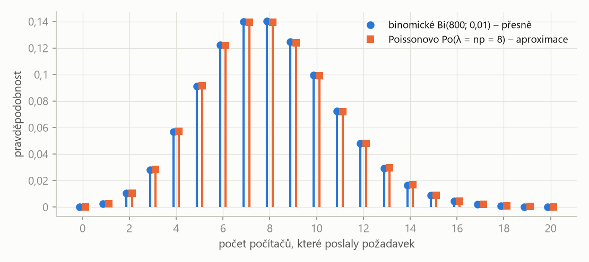
Při \(n = 800\) a \(p = 0{,}01\) jsou obě rozdělení prakticky stejná. Poisson je výpočetně jednodušší (žádné \(\binom{800}{k}\)) a potřebuje jen součin \(np\).
„Binomické rozdělení Bi(n, p) popisuje počet úspěchů v n nezávislých pokusech se stejnou pravděpodobností úspěchu; \(EX = np\), \(DX = np(1-p)\). Geometrické popisuje čekání na první úspěch. Hypergeometrické je počet označených prvků ve výběru bez vracení z konečného souboru. Poissonovo Po(λ) je počet nezávislých událostí za časový interval s průměrem λ, má \(EX = DX = \lambda\) a aproximuje binomické pro velké n a malé p s \(\lambda = np\).“
Pevný počet pokusů → binomické; čekám na první úspěch → geometrické; bez vracení z konečného souboru → hypergeometrické; počet za čas → Poissonovo.
| česky | anglicky |
|---|---|
| alternativní rozdělení | alternative (Bernoulli) distribution |
| binomické rozdělení | binomial distribution |
| geometrické rozdělení | geometric distribution |
| hypergeometrické rozdělení | hypergeometric distribution |
| Poissonovo rozdělení | Poisson distribution |
| nezávislé opakování pokusu | independent repetition (trial) |
| úspěch / neúspěch | success / failure |
| zmetek, vadný výrobek | reject, defective (nonconforming) product |
| vyhovuje normě | meets the requirements of the standard |
| červivé jablko | wormy apple |
| požadavek na server | request to the server |
| aproximace | approximation |
Fráze ze zadání: an average of … per hour = průměrně … za hodinu (→ Poisson); until = dokud (→ geometrické); among 100 products there are 20 rejects = mezi 100 výrobky je 20 zmetků (→ hypergeometrické); will not succeed more than twice = nejvýše dvakrát; only on the first test = jen v prvním testu.
Shrnutí
Čtyři diskrétní rozdělení pokryjí skoro všechny počítací úlohy. Binomické počítá úspěchy v pevném počtu nezávislých pokusů se stejnou pravděpodobností. Geometrické popisuje čekání na první úspěch (pozor, zda X začíná od 0, nebo od 1). Hypergeometrické je výběr bez vracení z konečného souboru se známým složením. Poissonovo je počet událostí za čas s průměrem λ, přičemž λ se musí přepočítat na interval ze zadání; zároveň aproximuje binomické rozdělení pro velké n a malé p.
Take-home messages
- Nejdřív urči, co X počítá a co je „úspěch“ – pak rozdělení a jeho parametry.
- Binomické: \(\binom{n}{k} p^k (1-p)^{n-k}\); konkrétní pořadí bez kombinačního čísla.
- „Aspoň“ / „nejvýše“ s mnoha členy → doplněk do jedné.
- Poisson: λ přepočti na interval ze zadání; „nikdo“ = \(e^{-\lambda}\).
- Bez vracení z konečného souboru = hypergeometrické; nezávislé kusy se stejným p = binomické.
Otázky ke zkoušce
Kdy má veličina binomické rozdělení? Odvoďte vzorec pro p(X = k).
Když počítá úspěchy v n nezávislých pokusech se stejnou pravděpodobností úspěchu p. Jedno konkrétní pořadí s k úspěchy má pravděpodobnost \(p^k(1-p)^{n-k}\) (nezávislost → násobení) a takových pořadí je \(\binom{n}{k}\), proto \(p(X = k) = \binom{n}{k}p^k(1-p)^{n-k}\).
Jaký je rozdíl mezi binomickým a hypergeometrickým rozdělením?
Binomické předpokládá nezávislé pokusy se stále stejnou pravděpodobností (výběr s vracením nebo z nekonečného souboru). Hypergeometrické popisuje výběr bez vracení z konečného souboru, kde se složení po každém tahu mění. Pro velký soubor a malý výběr se blíží binomickému s \(p = M/N\).
Co popisuje geometrické rozdělení a jaká je jeho střední hodnota?
Čekání na první úspěch v Bernoulliho posloupnosti. Počítá-li X neúspěchy před úspěchem, je \(p(X = k) = p(1-p)^k\) a \(EX = (1-p)/p\); počítá-li pořadí úspěšného pokusu, je \(EX = 1/p\) (na šestku čekáme průměrně 6 hodů).
Kdy použijete Poissonovo rozdělení a jak určíte parametr λ?
Pro počet nezávislých událostí za časový interval (nebo v prostoru), když znám jejich průměrný počet. λ je střední počet událostí v intervalu, na který se ptám – průměr za hodinu se přepočítá úměrně délce intervalu. Platí \(EX = DX = \lambda\).
Kdy a proč lze binomické rozdělení nahradit Poissonovým?
Při velkém počtu pokusů n a malé pravděpodobnosti p, s \(\lambda = np\). Jde o mnoho nezávislých příležitostí, z nichž každá vyjde jen vzácně – právě pro takové situace Poissonovo rozdělení vzniká jako limita binomického. Výpočet je jednodušší (bez velkých kombinačních čísel).
Jak spočítáte pravděpodobnost „aspoň jednoho“ úspěchu?
Přes doplněk: \(p(X \ge 1) = 1 - p(X = 0)\). U binomického je to \(1 - (1-p)^n\), u Poissonova \(1 - e^{-\lambda}\).
Kapitola 5
Spojitá náhodná veličina
Délka, čas, napětí, chyba měření – veličiny, které mohou vyjít jakékoli číslo z intervalu. Jednotlivá hodnota má u nich pravděpodobnost nula, proto místo tabulky pravděpodobností máme hustotu a pravděpodobnost je plocha pod ní. Všechno z kapitoly 3 platí dál, jen se součty mění na integrály. Tak se řeší úlohy S4/4, S4/5, S5/1 i HW2/3.
Hustota a distribuční funkce
Náhodná veličina \(X\) je spojitá, jestliže existuje nezáporná funkce \(f(x)\) – hustota pravděpodobnosti – taková, že pro distribuční funkci platí
\[ F(x) = \int_{-\infty}^{x} f(t)\, dt \quad \text{pro každé } x. \]hustota říká, „kde je pravděpodobnost nahuštěná“. Sama není pravděpodobnost (může být i větší než 1), pravděpodobností je teprve plocha pod ní.
| \(f(x)\) | hustota – výška křivky; plocha pod celou křivkou je 1 |
| \(F(x)\) | distribuční funkce – plocha pod hustotou vlevo od x; spojitá, neklesající, od 0 do 1 |
| \(p(X = a) = 0\) | úsečka má nulovou plochu, proto u spojité veličiny nezáleží na tom, zda píšu < nebo ≤ |
Poznáš to: density function f(x), předpis po částech, neznámý parameter a, prove that f can be a density.
- Parametr a / „je to hustota?“: ověř \(f \ge 0\) a vyřeš \(\int f = 1\).
- Pravděpodobnost intervalu: integrál hustoty přes interval (jen tam, kde je f nenulová).
- Distribuční funkce po částech: pro x vlevo od nosiče 0; uvnitř \(\int_{\text{začátek}}^{x} f(t)\,dt\) (u více částí přičti plochu předchozích částí); vpravo 1.
- Kontrola F: spojitá (navazuje na hranicích), začíná 0, končí 1.
- EX, DX: vzorce níže; u symetrické hustoty je EX střed symetrie.
Střední hodnota, rozptyl, kvantily
| \(x\,f(x)\) | hodnota váhovaná hustotou – obdoba \(x_i\,p_i\) ze součtu |
| meze | prakticky jen přes nosič (kde \(f \ne 0\)); u hustoty po částech se integrál rozdělí |
p-kvantil \(x_p\) spojité veličiny (\(0 < p < 1\)) je číslo, pro které \(F(x_p) = p\). Medián je 0,5-kvantil.
bod, vlevo od kterého leží podíl p pravděpodobnosti. Medián dělí plochu pod hustotou na dvě poloviny. Kvantily normálního rozdělení budeme hledat v kapitole 6.
Modus spojité veličiny je bod, ve kterém má hustota maximum.
nejpravděpodobnější „místo“. U symetrické hustoty s jedním vrcholem splývá modus, medián i střední hodnota.
Hustota je \(f(x) = a(3x - x^2)\) pro \(0 \le x \le 3\), jinde 0. Spočítej (a) parametr a, (b) pravděpodobnost, že X leží v \((1, 2)\), (c) střední hodnotu, (d) distribuční funkci.
Řešení krok po kroku
1. (a) Normování:
\[ \begin{aligned} \int_0^3 a(3x - x^2)\, dx &= a\left[\frac{3x^2}{2} - \frac{x^3}{3}\right]_0^3 \\ &= a\left(\frac{27}{2} - 9\right) = \frac{9a}{2} = 1 \end{aligned} \] \[ a = \frac{2}{9} \]Pro \(0 \le x \le 3\) je \(3x - x^2 = x(3 - x) \ge 0\), takže f je opravdu nezáporná.
2. (b) Plocha mezi 1 a 2:
\[ \begin{aligned} p(1 < X < 2) &= \frac{2}{9}\left[\frac{3x^2}{2} - \frac{x^3}{3}\right]_1^2 \\ &= \frac{2}{9}\left(\frac{10}{3} - \frac{7}{6}\right) = \frac{13}{27} \approx 0{,}481 \end{aligned} \]3. (c) Hustota je parabola symetrická kolem \(x = 1{,}5\), proto \(EX = 3/2\). Výpočtem:
\[ \begin{aligned} EX &= \frac{2}{9}\int_0^3 (3x^2 - x^3)\, dx \\ &= \frac{2}{9}\left(27 - \frac{81}{4}\right) = \frac{3}{2} \end{aligned} \]4. (d) Distribuční funkce; pro \(0 \le x \le 3\):
\[ F(x) = \int_0^x \frac{2}{9}(3t - t^2)\, dt = \frac{x^2}{3} - \frac{2x^3}{27} \] \[ F(x) = \begin{cases} 0, & x < 0 \\ \dfrac{x^2}{3} - \dfrac{2x^3}{27}, & 0 \le x \le 3 \\ 1, & x > 3 \end{cases} \]Kontrola: \(F(3) = 3 - 2 = 1\) a \(F(2) - F(1) = 20/27 - 7/27 = 13/27\) jako v (b).
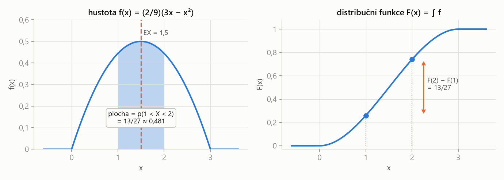
Stejné číslo 13/27 lze vidět dvakrát: jako plochu pod hustotou mezi 1 a 2, nebo jako rozdíl výšek distribuční funkce \(F(2) - F(1)\). Kde je hustota nejvyšší, tam F nejstrměji roste.
Funkce je \(f(x) = \tfrac{1}{2}\sin x\) pro \(0 \le x \le \pi\), jinde 0. Dokaž, že může být hustotou nějaké veličiny X, a urči její střední hodnotu a rozptyl.
Řešení krok po kroku
1. Nezápornost: na \(\langle 0, \pi\rangle\) je \(\sin x \ge 0\).
2. Normování:
\[ \int_0^{\pi} \frac{1}{2}\sin x\, dx = \frac{1}{2}\left[-\cos x\right]_0^{\pi} = \frac{1}{2}(1 + 1) = 1 \]3. Střední hodnota: hustota je symetrická kolem \(\pi/2\), proto \(EX = \pi/2\).
4. Druhý moment (dvakrát per partes, \(\int x^2 \sin x\,dx = -x^2\cos x + 2x\sin x + 2\cos x\)):
\[ EX^2 = \frac{1}{2}\int_0^{\pi} x^2 \sin x\, dx = \frac{1}{2}\left(\pi^2 - 4\right) \]5. Rozptyl:
\[ DX = \frac{\pi^2 - 4}{2} - \frac{\pi^2}{4} = \frac{\pi^2}{4} - 2 \approx 0{,}467 \]Hustota je \(f(x) = x/3\) pro \(0 \le x \le 2\), \(f(x) = \tfrac{2}{3}(3 - x)\) pro \(2 < x \le 3\), jinde 0. Urči F(x), EX, DX, \(p(X < EX)\), \(p(X > EX + 1)\) a \(p(X > 2EX)\).
Řešení krok po kroku
1. Kontrola: plochy obou částí jsou \(\int_0^2 x/3\,dx = 2/3\) a \(\int_2^3 \tfrac{2}{3}(3-x)\,dx = 1/3\), dohromady 1.
2. Distribuční funkce po částech. Na první části:
\[ F(x) = \int_0^x \frac{t}{3}\, dt = \frac{x^2}{6}, \qquad 0 \le x \le 2 \]Na druhé části přičteme plochu první části \(F(2) = 2/3\):
\[ \begin{aligned} F(x) &= \frac{2}{3} + \int_2^x \frac{2}{3}(3 - t)\, dt \\ &= 2x - \frac{x^2}{3} - 2, \qquad 2 < x \le 3 \end{aligned} \] \[ F(x) = \begin{cases} 0, & x < 0 \\ x^2/6, & 0 \le x \le 2 \\ 2x - x^2/3 - 2, & 2 < x \le 3 \\ 1, & x > 3 \end{cases} \]Kontrola: \(F(2) = 2/3\) z obou předpisů (navazuje) a \(F(3) = 1\).
3. Střední hodnota (integrál se rozdělí na dvě části):
\[ \begin{aligned} EX &= \int_0^2 \frac{x^2}{3}\, dx + \int_2^3 \frac{2}{3}x(3 - x)\, dx \\ &= \frac{8}{9} + \frac{7}{9} = \frac{5}{3} \end{aligned} \]4. Rozptyl:
\[ \begin{aligned} EX^2 &= \int_0^2 \frac{x^3}{3}\, dx + \int_2^3 \frac{2}{3}x^2(3 - x)\, dx \\ &= \frac{4}{3} + \frac{11}{6} = \frac{19}{6} \end{aligned} \] \[ DX = \frac{19}{6} - \frac{25}{9} = \frac{7}{18} \approx 0{,}389 \]5. Pravděpodobnosti – vždy nejdřív zjisti, do které části bod padne (\(5/3 < 2\), \(8/3 > 2\)):
\[ p(X < EX) = F\!\left(\tfrac{5}{3}\right) = \frac{25/9}{6} = \frac{25}{54} \approx 0{,}463 \] \[ \begin{aligned} p(X > EX + 1) &= 1 - F\!\left(\tfrac{8}{3}\right) \\ &= 1 - \frac{26}{27} = \frac{1}{27} \approx 0{,}037 \end{aligned} \]6. \(2EX = 10/3 > 3\) leží za koncem nosiče, takže \(p(X > 2EX) = 0\).
Na druhé části se nezačíná od nuly: \(F(x) = F(\text{konec 1. části}) + \int_{\text{začátek 2. části}}^{x} f\). A nezapomeň na hodnoty 0 vlevo a 1 vpravo od nosiče – zadání na ně výslovně upozorňuje.
Důležitá spojitá rozdělení
Veličina má rovnoměrné rozdělení na \(\langle a, b\rangle\), je-li její hustota \(f(x) = 1/(b - a)\) na \(\langle a, b\rangle\) a 0 jinde. Pak \(EX = (a+b)/2\) a \(DX = (b-a)^2/12\).
„každé místo intervalu je stejně možné“ – to je přesně předpoklad geometrické pravděpodobnosti z kapitoly 1.
Veličina má exponenciální rozdělení s parametrem \(\lambda > 0\), je-li její hustota \(f(x) = \lambda e^{-\lambda x}\) pro \(x \ge 0\) a 0 jinde. Pak \(F(x) = 1 - e^{-\lambda x}\), \(EX = 1/\lambda\), \(DX = 1/\lambda^2\).
doba čekání na první událost Poissonova procesu (λ událostí za jednotku času): doba do příchodu dalšího zákazníka, doba života součástky bez stárnutí. Je spojitou obdobou geometrického rozdělení.
Veličina má Laplaceovo rozdělení s parametrem \(\lambda > 0\), je-li její hustota
\[ f(x) = \frac{\lambda}{2}\, e^{-\lambda |x|}, \qquad x \in \mathbb{R}. \]„dvě exponenciály zrcadlově slepené v nule“. Symetrické kolem nuly s ostrým vrcholem; používá se pro chyby, které jsou většinou malé, ale občas velké.
X má Laplaceovo rozdělení s hustotou \(f(x) = a e^{-\lambda |x|}\), \(\lambda > 0\). Spočítej (a) parametr a, (b) distribuční funkci, (c) EX, (d) DX.
Řešení krok po kroku
1. (a) Hustota je sudá, stačí dvojnásobek pravé poloviny:
\[ \int_{-\infty}^{\infty} a e^{-\lambda|x|}\, dx = 2a\int_0^{\infty} e^{-\lambda x}\, dx = \frac{2a}{\lambda} \] \[ \frac{2a}{\lambda} = 1 \;\Rightarrow\; a = \frac{\lambda}{2} \]2. (b) Distribuční funkce. Pro \(x \le 0\) je \(|t| = -t\):
\[ F(x) = \int_{-\infty}^{x} \frac{\lambda}{2} e^{\lambda t}\, dt = \frac{1}{2} e^{\lambda x}, \qquad x \le 0 \]Pro \(x > 0\) přičteme levou polovinu (plocha 1/2):
\[ \begin{aligned} F(x) &= \frac{1}{2} + \int_0^x \frac{\lambda}{2} e^{-\lambda t}\, dt \\ &= 1 - \frac{1}{2} e^{-\lambda x}, \qquad x > 0 \end{aligned} \]3. (c) Funkce \(x f(x)\) je lichá, integrál přes celou osu je 0: \(EX = 0\).
4. (d) Protože \(EX = 0\), je \(DX = EX^2\). Použijeme \(\int_0^\infty x^2 e^{-\lambda x}\,dx = 2/\lambda^3\):
\[ DX = 2 \cdot \frac{\lambda}{2}\int_0^{\infty} x^2 e^{-\lambda x}\, dx = \lambda \cdot \frac{2}{\lambda^3} = \frac{2}{\lambda^2} \]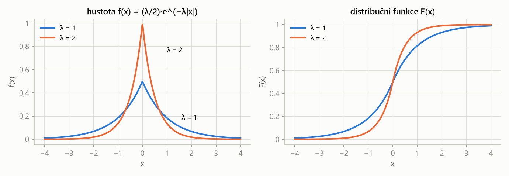
Větší λ = užší a vyšší špička, tedy menší rozptyl \(2/\lambda^2\). Distribuční funkce prochází bodem (0; 0,5) – nula je medián i střední hodnota.
- Symetrie: je-li hustota symetrická kolem c, je \(EX = c\) bez počítání.
- Lichá funkce přes symetrický interval dá integrál 0.
- \(\int_0^\infty x^n e^{-\lambda x}\, dx = n!/\lambda^{n+1}\) (pro n = 1, 2 si to zapamatuj: \(1/\lambda^2\), \(2/\lambda^3\)).
- Per partes pro \(x\sin x\), \(x^2 \sin x\), \(x e^{x}\): derivuj polynom, integruj zbytek.
„Spojitá náhodná veličina má hustotu f – nezápornou funkci s plochou 1 – a její distribuční funkce je integrál hustoty od minus nekonečna do x. Pravděpodobnost intervalu je plocha pod hustotou, pravděpodobnost jednoho bodu je nulová. Střední hodnota je \(\int x f(x)\,dx\), rozptyl \(\int x^2 f(x)\,dx - (EX)^2\). Kvantil \(x_p\) je bod, kde \(F(x_p) = p\).“
Spojitá veličina: hustota místo tabulky, integrál místo součtu, plocha = pravděpodobnost.
| česky | anglicky |
|---|---|
| hustota (pravděpodobnosti) | (probability) density function |
| spojitá náhodná veličina | continuous random variable |
| nosič (kde f ≠ 0) | support |
| po částech | piecewise |
| kvantil, medián, modus | quantile, median, mode |
| rovnoměrné rozdělení | uniform distribution |
| exponenciální rozdělení | exponential distribution |
| Laplaceovo rozdělení | Laplace distribution |
| integrace per partes | integration by parts |
| sudá / lichá funkce | even / odd function |
Fráze ze zadání: compute parameter a = urči konstantu z normování; prove that f(x) can be a density function = ověř nezápornost a plochu 1; the probability that the random variable lies in (1, 2) = \(p(1 < X < 2)\); otherwise = jinde.
Shrnutí
Spojitou veličinu popisuje hustota f: je nezáporná a plocha pod ní je 1. Distribuční funkce je integrál hustoty, je spojitá a pravděpodobnost intervalu je \(F(b) - F(a)\), tedy plocha pod hustotou. Neznámou konstantu v hustotě určíme z podmínky, že plocha je 1. Střední hodnota a rozptyl se počítají jako u diskrétní veličiny, jen místo součtů integrujeme; symetrie často ušetří výpočet. U hustoty po částech se integrál i distribuční funkce dělí na části a na každé další části se přičítá plocha předchozích.
Take-home messages
- Hustota není pravděpodobnost; pravděpodobnost je plocha pod hustotou.
- Neznámá konstanta: \(\int f = 1\). „Je to hustota?“: \(f \ge 0\) a \(\int f = 1\).
- \(F(x) = \int_{-\infty}^x f\); po částech přičítej plochu předchozích částí; vlevo 0, vpravo 1.
- \(EX = \int x f\), \(DX = \int x^2 f - (EX)^2\); symetrická hustota → EX je střed.
- U spojité veličiny \(p(X = a) = 0\), takže < a ≤ dávají totéž.
Otázky ke zkoušce
Co je hustota pravděpodobnosti a jaké vlastnosti musí mít?
Nezáporná funkce f, jejíž integrál od minus nekonečna do x je distribuční funkce. Musí platit \(f \ge 0\) a \(\int_{-\infty}^{\infty} f = 1\). Pravděpodobnost intervalu je plocha pod f nad tímto intervalem.
Proč má u spojité veličiny každá jednotlivá hodnota pravděpodobnost nula?
Pravděpodobnost je plocha pod hustotou a nad jedním bodem je plocha „úsečky“ nulová: \(\int_a^a f = 0\). Proto u spojitých veličin nezáleží na tom, zda je nerovnost ostrá, nebo neostrá.
Jaký je vztah mezi hustotou a distribuční funkcí?
\(F(x) = \int_{-\infty}^x f(t)\,dt\) a naopak \(f(x) = F'(x)\) tam, kde derivace existuje. Kde je hustota vysoká, distribuční funkce rychle roste.
Jak určíte neznámý parametr v předpisu hustoty?
Z normovací podmínky: celá plocha pod hustotou musí být 1. Spočítám \(\int f\) s parametrem, položím rovno 1 a vyřeším. Ověřím také, že s tímto parametrem je \(f \ge 0\).
Jak se počítá střední hodnota a rozptyl spojité veličiny?
\(EX = \int x f(x)\,dx\), \(EX^2 = \int x^2 f(x)\,dx\) a \(DX = EX^2 - (EX)^2\). Integruje se přes nosič; je-li hustota symetrická kolem c, je \(EX = c\).
Co je kvantil a medián?
p-kvantil je bod \(x_p\), pro který \(F(x_p) = p\) – vlevo od něj leží podíl p pravděpodobnosti. Medián je 0,5-kvantil, dělí plochu pod hustotou na dvě stejné poloviny.
Kapitola 6
Normální rozdělení
Nejdůležitější rozdělení celé statistiky: popisuje chyby měření, výšky lidí, součty mnoha drobných vlivů. Integrál jeho hustoty nejde spočítat ručně, a proto se všechno převádí na jedno normované rozdělení a čte z tabulky Laplaceovy funkce Φ. Celá dovednost sady 5 jsou tedy dva směry: z hodnoty na pravděpodobnost (Φ) a z pravděpodobnosti na hodnotu (kvantil).
Normální a normované normální rozdělení
Veličina \(X\) má normální rozdělení No(μ, σ) s parametry \(\mu \in \mathbb{R}\), \(\sigma > 0\), je-li její hustota
\[ f(x) = \frac{1}{\sigma\sqrt{2\pi}}\, e^{-\frac{(x - \mu)^2}{2\sigma^2}}, \qquad x \in \mathbb{R}. \]Platí \(EX = \mu\) a \(DX = \sigma^2\).
zvonovitá křivka symetrická kolem μ; σ určuje šířku zvonu. Vzniká všude, kde výsledek je součtem mnoha malých nezávislých vlivů.
Skripta předmětu píšou No(μ, σ) – druhý parametr je směrodatná odchylka. V mnoha anglických textech se píše N(μ, σ²) s rozptylem. Čti zadání: „variance σ² = 4“ znamená σ = 2, a do standardizace dosazuješ vždy σ, ne σ².
Normovaná (standardizovaná) veličina k veličině X je
\[ U = \frac{X - EX}{\sqrt{DX}}. \]Má-li X rozdělení No(μ, σ), má \(U = (X - \mu)/\sigma\) normované normální rozdělení No(0, 1).
přepočet na „kolik směrodatných odchylek je hodnota od průměru“. Díky tomu stačí jediná tabulka pro všechna normální rozdělení.
Laplaceova funkce je distribuční funkce normovaného normálního rozdělení:
\[ \Phi(u) = \frac{1}{\sqrt{2\pi}}\int_{-\infty}^{u} e^{-t^2/2}\, dt = p(U < u). \]plocha pod zvonovou křivkou vlevo od u. Hodnoty se čtou z tabulky; tabulka obvykle obsahuje jen \(u \ge 0\), záporné se dopočítají ze symetrie.
| \(\mu\) | střední hodnota (střed zvonu) |
| \(\sigma\) | směrodatná odchylka (odmocnina z rozptylu) |
| \((x - \mu)/\sigma\) | normovaná hodnota u – o kolik σ je x od μ |
| \(\Phi(0) = 0{,}5\) | polovina plochy je vlevo od středu |
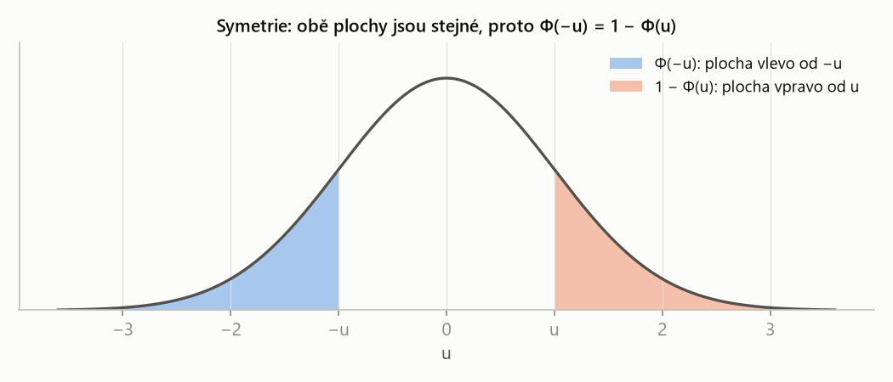
Pravá plocha je \(1 - \Phi(u)\), levá je \(\Phi(-u)\); protože jsou stejné, platí \(\Phi(-u) = 1 - \Phi(u)\). Tak se z tabulky pro kladná u dostanou i záporná.
Z hodnoty na pravděpodobnost
Poznáš to: normal distribution with mean value μ and variance σ², No(0, 1), „vypočti pravděpodobnost, že bude naměřeno méně / více / mezi“.
- Zjisti μ a σ (z rozptylu odmocni).
- Hranice převeď na \(u = (x - \mu)/\sigma\).
- Převeď na tvar s Φ: „méně než“ → \(\Phi(u)\); „více než“ → \(1 - \Phi(u)\); „mezi“ → \(\Phi(u_2) - \Phi(u_1)\).
- Záporné u: \(\Phi(-u) = 1 - \Phi(u)\). Hodnoty z tabulky.
- Kontrola obrázkem: je výsledek větší, nebo menší než 0,5? Sedí to s tím, kde leží plocha?
U ~ No(0, 1). Spočítej (a) \(p(U < 1{,}67)\), (b) \(p(U > 0{,}35)\), (c) \(p(0{,}35 < U < 1{,}67)\), (d) \(p(U < -0{,}35)\), (e) \(p(U > -1{,}67)\), (f) \(p(-1{,}5 < U < 0{,}5)\).
Řešení krok po kroku
Hodnoty z tabulky:
\[ \begin{aligned} \Phi(1{,}67) &= 0{,}9525 & \Phi(0{,}35) &= 0{,}6368 \\ \Phi(0{,}5) &= 0{,}6915 & \Phi(1{,}5) &= 0{,}9332 \end{aligned} \](a) Méně než:
\[ p(U < 1{,}67) = \Phi(1{,}67) \approx 0{,}953 \](b) Více než:
\[ \begin{aligned} p(U > 0{,}35) &= 1 - \Phi(0{,}35) \\ &= 1 - 0{,}6368 \approx 0{,}363 \end{aligned} \](c) Mezi:
\[ \begin{aligned} p(0{,}35 < U < 1{,}67) &= 0{,}9525 - 0{,}6368 \\ &\approx 0{,}316 \end{aligned} \](d) Záporná hranice – symetrie:
\[ \begin{aligned} p(U < -0{,}35) &= \Phi(-0{,}35) \\ &= 1 - \Phi(0{,}35) \approx 0{,}363 \end{aligned} \](e) Více než záporné číslo – opět symetrie:
\[ \begin{aligned} p(U > -1{,}67) &= 1 - \Phi(-1{,}67) \\ &= \Phi(1{,}67) \approx 0{,}953 \end{aligned} \](f) Interval přes nulu:
\[ \begin{aligned} &p(-1{,}5 < U < 0{,}5) \\ &\quad = \Phi(0{,}5) - \Phi(-1{,}5) \\ &\quad = \Phi(0{,}5) - \big(1 - \Phi(1{,}5)\big) \\ &\quad = 0{,}6915 - 0{,}0668 \approx 0{,}624 \end{aligned} \]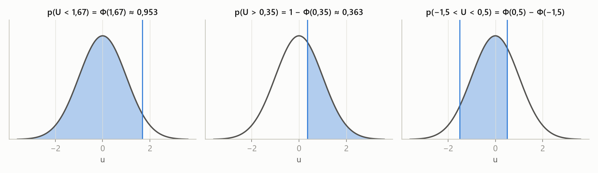
Než sáhneš do tabulky, načrtni si zvon a vybarvi plochu. Hned vidíš, zda výsledek má být nad, nebo pod 0,5, a nespleteš si \(\Phi(u)\) s \(1 - \Phi(u)\).
Výsledek měření proudu X má normální rozdělení se střední hodnotou μ = 10 mA a rozptylem σ² = 4 mA². Spočítej pravděpodobnost, že naměříme (a) méně než 13 mA, (b) více než 9 mA, (c) méně než 12 mA, ale více než 5 mA.
Řešení krok po kroku
1. X ~ No(10, 2). Standardizace \(u = (x - 10)/2\).
2. (a) Méně než 13 mA:
\[ p(X < 13) = \Phi\!\left(\frac{13 - 10}{2}\right) = \Phi(1{,}5) \approx 0{,}933 \]3. (b) Více než 9 mA:
\[ p(X > 9) = 1 - \Phi(-0{,}5) = \Phi(0{,}5) \approx 0{,}691 \]4. (c) Mezi 5 a 12 mA:
\[ \begin{aligned} p(5 < X < 12) &= \Phi(1) - \Phi(-2{,}5) \\ &= 0{,}8413 - 0{,}0062 \approx 0{,}835 \end{aligned} \]Z pravděpodobnosti na hodnotu: kvantily
p-kvantil \(u_p\) normovaného normálního rozdělení je číslo, pro které \(\Phi(u_p) = p\). Ze symetrie plyne \(u_{1-p} = -u_p\).
„Φ pozpátku“: v tabulce hledám uvnitř hodnotu p a čtu, k jakému u patří. Nejčastější kvantily jsou 1,645 (pro 0,95), 1,96 (pro 0,975) a 2,326 (pro 0,99).
Poznáš to: známá pravděpodobnost, neznámá hodnota: find the value u for which, above what value … with probability, in what limits.
- Převeď podmínku na tvar „Φ(u) = číslo“: \[ \begin{aligned} p(U > u) = \alpha \;&\Rightarrow\; \Phi(u) = 1 - \alpha \\ p(-u < U < u) = \gamma \;&\Rightarrow\; \Phi(u) = \tfrac{1 + \gamma}{2} \end{aligned} \]
- Najdi \(u\) v tabulce kvantilů (je-li číslo menší než 0,5, je u záporné: \(u_p = -u_{1-p}\)).
- Pro X ~ No(μ, σ) převeď zpět: \(x = \mu + \sigma u\).
U ~ No(0, 1). Najdi u, pro které (a) \(p(U < u) = 0{,}9\), (b) \(p(U > u) = 0{,}05\), (c) \(p(U > u) = 0{,}8\), (d) \(p(-u < U < u) = 0{,}9\).
Řešení krok po kroku
(a) Přímo kvantil:
\[ \Phi(u) = 0{,}9 \;\Rightarrow\; u = u_{0{,}9} \approx 1{,}28 \](b) Plocha vpravo 0,05 → vlevo 0,95:
\[ \Phi(u) = 0{,}95 \;\Rightarrow\; u \approx 1{,}645 \](c) Plocha vpravo 0,8 → vlevo jen 0,2, tedy u je záporné:
\[ \Phi(u) = 0{,}2 \;\Rightarrow\; u = -u_{0{,}8} \approx -0{,}84 \](d) Symetrický interval s 0,9 uprostřed → na každé straně 0,05:
\[ \begin{aligned} 2\Phi(u) - 1 &= 0{,}9 \\ \Phi(u) &= 0{,}95 \\ u &\approx 1{,}645 \end{aligned} \]Přesné hodnoty: \(u_{0{,}9} = 1{,}2816\), \(u_{0{,}8} = 0{,}8416\); podle toho, jak hrubou tabulku použiješ, se může lišit poslední číslice.
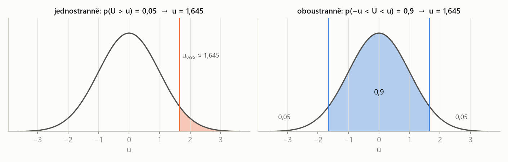
Oboustranná podmínka s 0,9 uprostřed nechá 0,05 na každém konci, proto hledám \(u_{0{,}95}\), ne \(u_{0{,}9}\). Totéž se objeví u intervalů spolehlivosti a testů (\(1 - \alpha/2\)).
Měřicí přístroj má systematickou chybu 1 a k ní náhodnou chybu s normálním rozdělením se směrodatnou odchylkou σ = 0,3. (a) Nad jakou hodnotu se chyba dostane s pravděpodobností 0,01? (b) Pod jakou hodnotou bude chyba s pravděpodobností 0,02? (c) V jakých mezích (symetricky kolem 1) lze čekat chybu u 75 % měření?
Řešení krok po kroku
1. Celková chyba \(X = 1 + \varepsilon\), kde \(\varepsilon\) ~ No(0; 0,3), takže X ~ No(1; 0,3).
2. (a) \(p(X > x) = 0{,}01\) → \(\Phi(u) = 0{,}99\) → \(u \approx 2{,}326\):
\[ x = 1 + 0{,}3 \cdot 2{,}326 \approx 1{,}698 \]3. (b) \(p(X < x) = 0{,}02\) → \(u = -u_{0{,}98} \approx -2{,}054\):
\[ x = 1 - 0{,}3 \cdot 2{,}054 \approx 0{,}384 \]4. (c) Uprostřed 0,75 → na každé straně 0,125 → \(\Phi(u) = 0{,}875\), \(u \approx 1{,}15\):
\[ \begin{aligned} x_1 &= 1 - 0{,}3 \cdot 1{,}15 \approx 0{,}655 \\ x_2 &= 1 + 0{,}3 \cdot 1{,}15 \approx 1{,}345 \end{aligned} \]Při kvantilech zaokrouhlených z hrubší tabulky vyjdou čísla v řádu tisícin jinak (např. 1,694 nebo 0,652) – postup je stejný.
Pravidlo tří sigma
Pro X ~ No(μ, σ) platí
\[ \begin{aligned} p(\mu - 3\sigma < X < \mu + 3\sigma) &= 2\Phi(3) - 1 \\ &\approx 0{,}997 \end{aligned} \]prakticky všechny hodnoty normální veličiny leží do tří směrodatných odchylek od průměru. Hodnota dál než 3σ je podezřele vzácná (odlehlá hodnota, chyba).
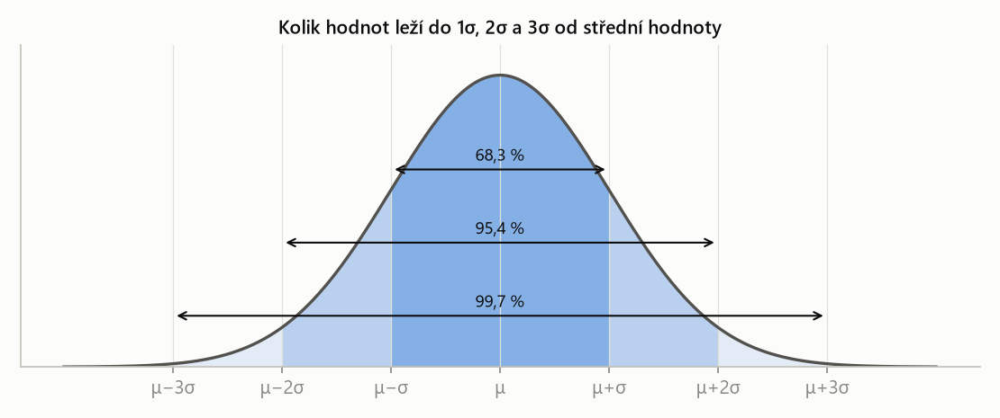
Tři čísla na odhad bez tabulky: zhruba 68 % hodnot je do 1σ, 95 % do 2σ a 99,7 % do 3σ. Hodí se na kontrolu, zda výsledek dává smysl.
„Normální rozdělení No(μ, σ) má zvonovitou hustotu symetrickou kolem μ, střední hodnota je μ a rozptyl σ². Standardizací – odečtu μ a vydělím σ – ho převedu na normované No(0, 1), jehož distribuční funkcí je Laplaceova funkce Φ. Pravděpodobnost, že X je menší než x, je pak Φ ze standardizované hodnoty a pro záporné argumenty využiji symetrii \(\Phi(-u) = 1 - \Phi(u)\). Obráceně, hodnotu ke známé pravděpodobnosti najdu přes kvantil: \(x = \mu + \sigma u_p\).“
Každé normální rozdělení převedu standardizací na No(0, 1): pravděpodobnost = Φ(u), hranice = μ + σ·kvantil.
| česky | anglicky |
|---|---|
| normální (Gaussovo) rozdělení | normal (Gaussian) distribution |
| normované normální rozdělení | standard normal distribution |
| normovaná veličina, standardizace | standardized variable, standardization (z-score) |
| Laplaceova funkce | Laplace function (standard normal CDF) |
| kvantil | quantile (critical value) |
| pravidlo tří sigma | three-sigma rule |
| systematická / náhodná chyba | systematic / random error |
| měřicí přístroj | measuring device |
| symetrický kolem | symmetrical around |
Fráze ze zadání: find the value u for which it holds = najdi u, pro které platí (→ kvantil); above what value does the error go with probability 0.01 = nad jakou hodnotu se chyba dostane s pravděpodobností 0,01; in what limits can the error be expected for 75 % of measurements = v jakých mezích je chyba u 75 % měření.
Shrnutí
Normální rozdělení No(μ, σ) je symetrický zvon se středem μ a šířkou σ. Protože jeho distribuční funkci nelze vyjádřit elementárně, převádí se každá úloha standardizací \(u = (x - \mu)/\sigma\) na normované rozdělení No(0, 1) a čte se z tabulky Laplaceovy funkce Φ. „Méně než“ je Φ(u), „více než“ 1 − Φ(u), „mezi“ rozdíl dvou Φ a záporné argumenty se řeší symetrií. Obrácená úloha – hledání hranice ke známé pravděpodobnosti – vede na kvantil \(u_p\) a zpětný převod \(x = \mu + \sigma u_p\); u symetrických mezí je na každém konci polovina zbytku.
Take-home messages
- Standardizuj: \(u = (x - \mu)/\sigma\) – vždy se směrodatnou odchylkou, ne rozptylem.
- „Méně než“ = \(\Phi(u)\), „více než“ = \(1 - \Phi(u)\); záporné u přes \(\Phi(-u) = 1 - \Phi(u)\).
- Hledám hranici → kvantil: \(x = \mu + \sigma u_p\).
- Symetrické meze s pravděpodobností γ → \(\Phi(u) = (1 + \gamma)/2\).
- Kreslit zvon a plochu: chrání před záměnou Φ(u) a 1 − Φ(u).
Otázky ke zkoušce
Popište normální rozdělení a význam jeho parametrů.
Spojité rozdělení se zvonovitou hustotou symetrickou kolem μ. μ je střední hodnota (poloha středu, zároveň medián a modus), σ směrodatná odchylka (šířka zvonu, inflexní body jsou v μ ± σ). \(DX = \sigma^2\).
Co je standardizace a proč ji děláme?
Převod \(U = (X - \mu)/\sigma\), který z libovolné normální veličiny udělá normovanou No(0, 1). Hodnota u říká, o kolik směrodatných odchylek je x od průměru. Díky tomu stačí jedna tabulka – Laplaceova funkce Φ.
Co je Laplaceova funkce a jaké má vlastnosti?
Distribuční funkce normovaného normálního rozdělení, \(\Phi(u) = p(U < u)\). Vlastnosti:
- je rostoucí a \(\Phi(0) = 0{,}5\);
- symetrie \(\Phi(-u) = 1 - \Phi(u)\);
- pravděpodobnost intervalu je rozdíl \(\Phi(u_2) - \Phi(u_1)\) standardizovaných mezí.
Jak najdete hodnotu, kterou normální veličina překročí jen s pravděpodobností α?
Podmínka „vpravo zbývá α“ znamená, že vlevo je \(1 - \alpha\): hledám kvantil \(u_{1-\alpha}\) z tabulky (pro α = 0,05 je to 1,645). Zpět do jednotek X převedu:
\[ x = \mu + \sigma\, u_{1-\alpha} \]Co říká pravidlo tří sigma?
Pro normální rozdělení leží v intervalu \((\mu - 3\sigma, \mu + 3\sigma)\) asi 99,7 % hodnot (\(2\Phi(3) - 1\)). Hodnoty dál jsou velmi vzácné. Podobně asi 68 % hodnot leží do 1σ a 95 % do 2σ.
Proč u symetrického intervalu s pravděpodobností 0,9 hledáte kvantil 0,95?
Zbylá pravděpodobnost 0,1 se rozdělí rovnoměrně na oba konce, 0,05 vlevo a 0,05 vpravo. Horní hranice má tedy vlevo od sebe 0,9 + 0,05 = 0,95, proto \(u = u_{0{,}95} \approx 1{,}645\). Obecně \(\Phi(u) = (1 + \gamma)/2\).
Kapitola 7
Limitní věty
Proč je normální rozdělení všude? Protože součet mnoha nezávislých veličin má přibližně normální rozdělení, ať už jednotlivé sčítance vypadají jakkoli. To je centrální limitní věta. Díky ní lze počítat s binomickým rozdělením pro tisíce pokusů (Moivreova–Laplaceova věta) nebo s celkovou hmotností desítek lidí – úlohy sady 6.
Čebyševova nerovnost a zákon velkých čísel
Pro každou náhodnou veličinu X s konečným rozptylem a pro každé \(\varepsilon > 0\) platí
\[ p\big(|X - EX| \ge \varepsilon\big) \le \frac{DX}{\varepsilon^2}. \]velká odchylka od průměru je vzácná, a to pro jakékoli rozdělení. Odhad je hrubý (u normálního rozdělení vychází skutečnost mnohem lépe), ale nepotřebuje znát tvar rozdělení.
Je-li \(X\) počet výskytů jevu s pravděpodobností \(p\) v \(n\) nezávislých pokusech, pak pro každé \(\varepsilon > 0\)
\[ \lim_{n \to \infty} p\!\left(\left|\frac{X}{n} - p\right| < \varepsilon\right) = 1. \]relativní četnost se s rostoucím počtem pokusů ustálí na pravděpodobnosti. Proto má smysl pravděpodobnost odhadovat z dat – a proto se průměr měření blíží skutečné hodnotě.
Centrální limitní věta
Jsou-li \(X_1, \dots, X_n\) nezávislé veličiny se stejnou střední hodnotou μ a stejným rozptylem σ², pak pro dostatečně velké \(n\) má součet \(Y = X_1 + \dots + X_n\) přibližně normální rozdělení:
\[ Y \approx \text{No}\big(n\mu,\; \sigma\sqrt{n}\big), \qquad \frac{Y - n\mu}{\sigma\sqrt{n}} \approx \text{No}(0, 1). \]sečti hodně nezávislých náhodných vlivů a výsledek bude zvon. Střední hodnoty se sčítají (\(n\mu\)), rozptyly také (\(n\sigma^2\)), takže směrodatná odchylka roste jen jako \(\sqrt{n}\).

Tvar jednotlivých sčítanců nehraje roli – i z „ploché“ kostky vznikne sčítáním zvon. Proto smíme na součty (a průměry) použít normální rozdělení a tabulku Φ.
| \(n\) | počet sčítanců (lidí, měření, výrobků) |
| \(\mu\), \(\sigma\) | střední hodnota a směrodatná odchylka jednoho sčítance |
| \(n\mu\), \(\sigma\sqrt{n}\) | střední hodnota a směrodatná odchylka součtu |
Sčítají se rozptyly, ne směrodatné odchylky: \(D(Y) = n\sigma^2\), proto \(\sigma_Y = \sigma\sqrt{n}\). Odchylky jednotlivých lidí se zčásti vyruší (jeden je těžší, druhý lehčí), takže součet kolísá relativně méně.
Provozujeme vyhlídkovou loď. Kolik nejvýše lidí smíme vzít na palubu, má-li být celková hmotnost menší než 4500 kg s pravděpodobností aspoň 0,99? Hmotnost člověka má střední hodnotu 75 kg a směrodatnou odchylku 15 kg.
Řešení krok po kroku
1. Celková hmotnost \(Y\) ~ No\((75n,\ 15\sqrt{n})\) přibližně. Podmínka:
\[ p(Y < 4500) = \Phi\!\left(\frac{4500 - 75n}{15\sqrt{n}}\right) \ge 0{,}99 \]2. Φ je rostoucí, takže argument musí být aspoň \(u_{0{,}99} \approx 2{,}326\):
\[ \frac{4500 - 75n}{15\sqrt{n}} \ge 2{,}326 \]Po vynásobení \(15\sqrt{n}\) a převedení na jednu stranu:
\[ 75n + 34{,}9\sqrt{n} - 4500 \le 0 \]3. Kvadratická rovnice pro \(s = \sqrt{n}\):
\[ s = \frac{-34{,}9 + \sqrt{34{,}9^2 + 4 \cdot 75 \cdot 4500}}{2 \cdot 75} \approx 7{,}517 \]Tedy \(n = s^2 \le 56{,}5\).
4. n musí být celé a nejvýše 56,5, tedy 56. Kontrola: pro \(n = 56\) je argument 2,67 (pravděpodobnost 0,996), pro \(n = 57\) jen 1,99 (0,977 < 0,99).
Moivreova–Laplaceova věta: binomické → normální
Má-li X binomické rozdělení Bi(n, p) a je-li n velké a p ne blízko 0 ani 1, lze X aproximovat normálním rozdělením
\[ X \approx \text{No}\big(np,\; \sqrt{np(1-p)}\big). \]Aproximace je vhodná přibližně pro \(np(1-p) > 9\).
binomická veličina je součet n nezávislých nul a jedniček (alternativních veličin), takže na ni platí CLV. Místo sčítání tisíců binomických členů stačí jedna hodnota Φ.
Poznáš to: binomická situace s velkým n (stovky, tisíce: among 10 000 newborns, a sequence of 10 000 digits), otázka na interval počtu nebo relativní četnosti; nebo „kolik pokusů je potřeba“.
- Urči \(\mu = np\) a \(\sigma = \sqrt{np(1-p)}\); ověř \(np(1-p) > 9\).
- Relativní četnost převeď na počet: \(a < X/n < b\) ⇔ \(na < X < nb\).
- Pravděpodobnost: \(\Phi((x_2 - \mu)/\sigma) - \Phi((x_1 - \mu)/\sigma)\).
- Hledá-li se n: podmínku přepiš přes kvantil a vyřeš kvadratickou rovnici pro \(\sqrt{n}\); výsledek zaokrouhli tak, aby podmínka platila.
Pravděpodobnost narození chlapce je 0,515. Jaká je pravděpodobnost, že (a) mezi 10 novorozenci bude víc dívek než chlapců, (b) mezi 10 000 novorozenci bude víc dívek než chlapců, (c) mezi 100 000 novorozenci bude relativní četnost chlapců mezi 0,513 a 0,515?
Řešení krok po kroku
X = počet chlapců ~ Bi(n; 0,515). „Víc dívek než chlapců“ = chlapců méně než polovina.
(a) n = 10: víc dívek ⇔ \(X \le 4\). Přesně:
\[ \begin{aligned} p(X \le 4) &= \sum_{k=0}^{4} \binom{10}{k} 0{,}515^k\, 0{,}485^{10-k} \\ &\approx 0{,}341 \end{aligned} \]Aproximace: \(\mu = 5{,}15\), \(\sigma = \sqrt{10 \cdot 0{,}515 \cdot 0{,}485} \approx 1{,}58\):
\[ \begin{aligned} p(X \le 4) &\approx \Phi\!\left(\frac{4 - 5{,}15}{1{,}58}\right) \\ &= \Phi(-0{,}73) \approx 0{,}23 \end{aligned} \]Výsledky se hodně liší: \(np(1-p) = 2{,}5 < 9\), pro n = 10 aproximace nefunguje.
(b) n = 10 000: \(\mu = 5150\), \(\sigma \approx 49{,}98\); víc dívek ⇔ \(X < 5000\):
\[ \begin{aligned} p(X < 5000) &\approx \Phi\!\left(\frac{5000 - 5150}{49{,}98}\right) \\ &= \Phi(-3{,}00) \approx 0{,}00135 \end{aligned} \]Binomicky přesně 0,00130 – teď už aproximace sedí.
(c) n = 100 000: \(0{,}513 < X/n < 0{,}515\) ⇔ \(51\,300 < X < 51\,500\); \(\mu = 51\,500\), \(\sigma \approx 158{,}0\):
\[ \begin{aligned} p &\approx \Phi(0) - \Phi\!\left(\frac{51\,300 - 51\,500}{158{,}0}\right) \\ &= 0{,}5 - \Phi(-1{,}27) \approx 0{,}397 \end{aligned} \]Binomicky 0,398.

Při malém n je binomické rozdělení „kostrbaté“ a hladká křivka ho popisuje jen hrubě. S rostoucím n (podmínka \(np(1-p) > 9\)) sloupce s křivkou splynou.
Binomická veličina má jen celé hodnoty; sloupec pro hodnotu 4 zabírá na ose úsek od 3,5 do 4,5. Normální křivka „do 4“ tedy useká polovinu posledního sloupce. Kdo dosadí 4,5 místo 4 (oprava na spojitost), dostane \(\Phi(-0{,}41) \approx 0{,}340\) – skoro přesně 0,341. Ve skriptech předmětu se oprava nepoužívá; pro velká n je stejně zanedbatelná.
Generátor vytváří nezávisle číslice 0 a 1, každou s pravděpodobností 0,5. Vytvoříme posloupnost 10 000 číslic. Jaká je pravděpodobnost, že počet jedniček bude mezi 4900 a 5100?
Řešení krok po kroku
1. X ~ Bi(10 000; 0,5): \(\mu = 5000\), \(\sigma = \sqrt{10\,000 \cdot 0{,}25} = 50\).
2. Hranice jsou přesně ±2σ od průměru:
\[ \begin{aligned} p(4900 \le X \le 5100) &\approx \Phi(2) - \Phi(-2) \\ &= 2\Phi(2) - 1 \approx 0{,}9545 \end{aligned} \]To je pravidlo „95 % do dvou sigma“ z kapitoly 6.
Jev A má pravděpodobnost 0,8. Kolik pokusů musíme provést, aby jev s pravděpodobností 0,9 nastal aspoň 90krát?
Řešení krok po kroku
1. X ~ Bi(n; 0,8) ≈ No\((0{,}8n,\ 0{,}4\sqrt{n})\) (\(\sqrt{0{,}8 \cdot 0{,}2} = 0{,}4\)). Podmínka:
\[ p(X \ge 90) = 1 - \Phi\!\left(\frac{90 - 0{,}8n}{0{,}4\sqrt{n}}\right) \ge 0{,}9 \]2. Tedy \(\Phi(\cdot) \le 0{,}1\), argument musí být nejvýše \(u_{0{,}1} = -1{,}2816\):
\[ \frac{90 - 0{,}8n}{0{,}4\sqrt{n}} \le -1{,}2816 \]Po vynásobení \(0{,}4\sqrt{n}\) a převedení na jednu stranu:
\[ 0{,}8n - 0{,}5126\sqrt{n} - 90 \ge 0 \]3. Kvadratická rovnice pro \(s = \sqrt{n}\) (bereme kladný kořen):
\[ \begin{aligned} s &= \frac{0{,}5126 + \sqrt{0{,}5126^2 + 4 \cdot 0{,}8 \cdot 90}}{2 \cdot 0{,}8} \\ &\approx 10{,}932 \end{aligned} \]Tedy \(n = s^2 \ge 119{,}5\).
4. Nejmenší celé n je 120. Kontrola: pro n = 120 je \(p(X \ge 90) \approx 0{,}915\), pro n = 119 jen 0,883.
„Centrální limitní věta říká, že součet n nezávislých stejně rozdělených veličin se střední hodnotou μ a rozptylem σ² má pro velké n přibližně normální rozdělení No(nμ, σ√n), bez ohledu na rozdělení jednotlivých sčítanců. Jejím speciálním případem je Moivreova–Laplaceova věta: binomické rozdělení Bi(n, p) lze pro velké n aproximovat normálním No(np, √(np(1−p))), prakticky pro np(1−p) > 9.“
Součet mnoha nezávislých veličin ≈ normální se střední hodnotou nμ a směrodatnou odchylkou σ√n; binomické je takový součet.
| česky | anglicky |
|---|---|
| limitní věty | limit theorems |
| centrální limitní věta | central limit theorem (CLT) |
| zákon velkých čísel | law of large numbers |
| Čebyševova nerovnost | Chebyshev's inequality |
| relativní četnost | relative frequency |
| aproximace normálním rozdělením | normal approximation |
| oprava na spojitost | continuity correction |
| novorozenec, chlapec, dívka | newborn, boy, girl |
| celková hmotnost | total mass (weight) |
| pokus | trial |
Fráze ze zadání: more girls than boys = víc dívek než chlapců; the relative frequency of boys will be between = relativní četnost chlapců bude mezi; how many people can we take on board at most = kolik nejvýše lidí vzít na palubu; greater than or equal to 0.99 = aspoň 0,99.
Shrnutí
Zákon velkých čísel zaručuje, že se relativní četnost ustálí na pravděpodobnosti, a Čebyševova nerovnost dává hrubou horní mez pro velké odchylky u libovolného rozdělení. Centrální limitní věta jde dál: součet n nezávislých stejně rozdělených veličin má přibližně normální rozdělení se střední hodnotou nμ a směrodatnou odchylkou σ√n. Moivreova–Laplaceova věta je její použití na binomické rozdělení: Bi(n, p) ≈ No(np, √(np(1−p))) pro np(1−p) > 9. Úlohy pak vedou buď na hodnotu Φ, nebo – když se hledá počet n – na kvantil a kvadratickou rovnici pro √n.
Take-home messages
- Součet n nezávislých veličin: střední hodnota nμ, směrodatná odchylka σ√n, rozdělení přibližně normální.
- Binomické pro velké n: μ = np, σ = √(np(1−p)); aproximace jen pro np(1−p) > 9.
- Relativní četnost převeď na počet vynásobením n.
- Hledá-li se n: kvantil → nerovnice → kvadratická rovnice pro √n → zaokrouhli správným směrem a ověř.
- Pro malé n dává aproximace špatná čísla – raději počítej binomicky.
Otázky ke zkoušce
Vyslovte centrální limitní větu a vysvětlete, proč je tak důležitá.
Jsou-li \(X_1, \dots, X_n\) nezávislé se stejnou střední hodnotou μ a rozptylem σ², má pro velké n součet přibližně rozdělení No(nμ, σ√n), tj. \((Y - n\mu)/(\sigma\sqrt{n})\) ≈ No(0, 1). Je důležitá, protože platí bez ohledu na rozdělení sčítanců – vysvětluje, proč je normální rozdělení v přírodě i měření tak časté, a umožňuje počítat se součty a průměry.
Co říká Moivreova–Laplaceova věta a kdy ji lze použít?
Binomické rozdělení Bi(n, p) lze pro velké n aproximovat normálním se stejnou střední hodnotou np a rozptylem np(1−p). Používá se, když n je velké a p není blízko 0 ani 1, prakticky np(1−p) > 9. Je to CLV pro součet n alternativních veličin.
Jak roste směrodatná odchylka součtu n nezávislých veličin a proč?
Jako σ√n. Sčítají se rozptyly (pro nezávislé veličiny \(D(\sum X_i) = \sum DX_i = n\sigma^2\)), takže směrodatná odchylka je odmocnina z nσ². Odchylky jednotlivých sčítanců se zčásti vyruší.
Co říká zákon velkých čísel?
Relativní četnost jevu v n nezávislých pokusech konverguje (v pravděpodobnosti) k jeho pravděpodobnosti p: pro každé ε > 0 jde \(p(|X/n - p| < \varepsilon)\) k 1. Ospravedlňuje odhad pravděpodobnosti z četností.
Co říká Čebyševova nerovnost a k čemu je?
\(p(|X - EX| \ge \varepsilon) \le DX/\varepsilon^2\) pro libovolnou veličinu s konečným rozptylem. Odhadne shora pravděpodobnost velké odchylky, aniž bychom znali rozdělení. Je obecná, ale hrubá; je z ní odvozen zákon velkých čísel.
Jak postupujete, když se ptají, kolik pokusů je potřeba, aby něco platilo s danou pravděpodobností?
Počet úspěchů aproximuji No(np, √(np(1−p))) s neznámým n, podmínku přepíšu přes Φ a kvantil na nerovnici v n, ta vede na kvadratickou rovnici v √n. Výsledek zaokrouhlím na celé číslo tak, aby podmínka platila, a dosazením ověřím.
Kapitola 8
Náhodný vektor
Často měříme dvě veličiny najednou – výšku a hmotnost, napětí a proud. Náhodný vektor (X, Y) popisuje jejich společné chování. Pravděpodobnost se teď počítá jako objem pod sdruženou hustotou nad oblastí v rovině, tedy dvojným integrálem. Klíčová dovednost je správně nastavit meze. To je úloha S6/5.
Sdružené rozdělení
Náhodný vektor (X, Y) je dvojice náhodných veličin definovaných na stejném pokusu. Jeho sdružená distribuční funkce je
\[ F(x, y) = p(X < x,\; Y < y). \]jeden pokus, dvě čísla. Čárka v \(p(X < x, Y < y)\) znamená „a současně“ (průnik jevů).
Spojitý náhodný vektor má sdruženou hustotu \(f(x, y) \ge 0\), jestliže pro každou oblast \(G\) v rovině
\[ \begin{aligned} p\big((X, Y) \in G\big) &= \iint_G f(x, y)\, dx\, dy \\ \iint_{\mathbb{R}^2} f(x, y)\, dx\, dy &= 1 \end{aligned} \]„krajina“ nad rovinou xy, jejíž celkový objem je 1. Pravděpodobnost, že bod (X, Y) padne do oblasti G, je objem krajiny nad G.
U diskrétního vektoru je místo hustoty tabulka sdružené pravděpodobnostní funkce \(p(x_i, y_j) = p(X = x_i, Y = y_j)\), jejíž hodnoty dávají součet 1.
Marginální rozdělení a nezávislost
Marginální hustoty spojitého vektoru (X, Y) se sdruženou hustotou f jsou
\[ \begin{aligned} f_X(x) &= \int_{-\infty}^{\infty} f(x, y)\, dy \\ f_Y(y) &= \int_{-\infty}^{\infty} f(x, y)\, dx \end{aligned} \]rozdělení jedné veličiny, když o druhé nic nevíme: druhou proměnnou „vyintegrujeme“ (u tabulky sečteme řádek či sloupec – součty se píšou na okraj, latinsky margo).
Veličiny X, Y jsou nezávislé, jestliže \(F(x, y) = F_X(x)\,F_Y(y)\) pro všechna x, y; u spojitého vektoru ekvivalentně
\[ f(x, y) = f_X(x)\, f_Y(y). \]sdružená hustota se „rozpadne“ na součin funkce jen x a funkce jen y (a oblast je obdélník). Pak hodnota jedné veličiny nic neříká o druhé.
| Y = 0 | Y = 1 | \(p_X\) | |
|---|---|---|---|
| X = 0 | 0,1 | 0,3 | 0,4 |
| X = 1 | 0,2 | 0,4 | 0,6 |
| \(p_Y\) | 0,3 | 0,7 | 1 |
Marginální rozdělení jsou součty řádků a sloupců. Nezávislost by vyžadovala \(p(0, 0) = p_X(0)\,p_Y(0)\), ale \(0{,}4 \cdot 0{,}3 = 0{,}12 \ne 0{,}1\) – veličiny jsou závislé.
Pravděpodobnost oblasti: dvojný integrál
Poznáš to: random vector (X, Y), simultaneous density function f(x, y), otázka na \(p(\ldots X \ldots, \ldots Y \ldots)\) nebo \(p(Y \le X)\).
- Nakresli oblast, kde je \(f \ne 0\), a oblast z otázky; integruje se přes jejich průnik.
- Obdélník (podmínky zvlášť na X a zvlášť na Y): meze jsou čísla; vnitřní a vnější integrál jdou v libovolném pořadí.
- Oblast s podmínkou mezi X a Y (např. \(Y \le X\)): vnější proměnná má číselné meze, vnitřní mez je funkce vnější („pro dané x jde y od 0 do x“).
- Spočítej vnitřní integrál (druhá proměnná je konstanta), pak vnější.
- Kontrola: výsledek mezi 0 a 1; případně spočítej v opačném pořadí integrace.
Náhodný vektor (X, Y) má sdruženou hustotu \(f(x, y) = 4x(1 - y)\) na jednotkovém čtverci \(\langle 0, 1\rangle^2\), jinde 0. Urči:
- marginální hustoty,
- \(p(\tfrac12 < X < \tfrac34,\ Y > \tfrac12)\),
- \(p(X \le \tfrac12,\ Y > \tfrac12)\),
- \(p(Y \le X)\).
Řešení krok po kroku
(a) Marginální hustoty pro \(x, y \in \langle 0, 1\rangle\) (jinde 0):
\[ \begin{aligned} f_X(x) &= \int_0^1 4x(1 - y)\, dy \\ &= 4x\left[y - \frac{y^2}{2}\right]_0^1 = 2x \end{aligned} \] \[ \begin{aligned} f_Y(y) &= \int_0^1 4x(1 - y)\, dx \\ &= (1 - y)\left[2x^2\right]_0^1 = 2 - 2y \end{aligned} \]Všimni si: \(f_X(x)\,f_Y(y) = 2x \cdot 2(1-y) = f(x, y)\), takže X a Y jsou nezávislé.
(b) Obdélník \(\tfrac12 < x < \tfrac34\), \(\tfrac12 < y < 1\):
\[ \begin{aligned} p &= \int_{1/2}^{3/4}\int_{1/2}^{1} 4x(1 - y)\, dy\, dx \\ &= \int_{1/2}^{3/4} 4x \cdot \frac{1}{8}\, dx \\ &= \left[\frac{x^2}{4}\right]_{1/2}^{3/4} = \frac{5}{64} \end{aligned} \]Díky nezávislosti jde i rychleji jako součin:
\[ \begin{aligned} p &= \int_{1/2}^{3/4} 2x\, dx \cdot \int_{1/2}^{1} (2 - 2y)\, dy \\ &= \frac{5}{16} \cdot \frac{1}{4} = \frac{5}{64} \end{aligned} \](c) Obdélník \(0 \le x \le \tfrac12\), \(\tfrac12 < y < 1\):
\[ \begin{aligned} p &= \int_{1/2}^{1}(1 - y)\left[2x^2\right]_0^{1/2} dy \\ &= \frac{1}{2}\int_{1/2}^{1}(1 - y)\, dy = \frac{1}{2} \cdot \frac{1}{8} = \frac{1}{16} \end{aligned} \](d) Oblast \(y \le x\) je trojúhelník pod úhlopříčkou. Pro dané x jde y od 0 do x:
\[ \begin{aligned} p(Y \le X) &= \int_0^1\int_0^x 4x(1 - y)\, dy\, dx \\ &= \int_0^1 4x\left(x - \frac{x^2}{2}\right) dx \\ &= \int_0^1 \left(4x^2 - 2x^3\right) dx \\ &= \frac{4}{3} - \frac{1}{2} = \frac{5}{6} \end{aligned} \]Kontrola opačným pořadím (pro dané y jde x od y do 1):
\[ \begin{aligned} &\int_0^1\int_y^1 4x(1 - y)\, dx\, dy \\ &\quad = \int_0^1 2(1 - y)(1 - y^2)\, dy = \frac{5}{6} \end{aligned} \]
U obdélníku jsou meze obou integrálů čísla. U trojúhelníku \(y \le x\) se pohybuje svislá šipka: pro každé x jde y jen od 0 do úhlopříčky, proto je vnitřní horní mez x. Hustota je největší vpravo dole, kde leží i většina trojúhelníku – proto vyšlo 5/6 > 1/2.
Vnější integrál musí mít čísla, vnitřní smí mít funkci vnější proměnné – nikdy naopak. Kdo napíše \(\int_0^x \int_0^1 \ldots\), dostane výsledek, ve kterém zbude x, a to u pravděpodobnosti nemůže být.
Kovariance a korelace
Kovariance veličin X, Y je
\[ \begin{aligned} \operatorname{cov}(X, Y) &= E\big[(X - EX)(Y - EY)\big] \\ &= E(XY) - EX \cdot EY \end{aligned} \]zda veličiny rostou spolu (kladná), proti sobě (záporná), nebo spolu lineárně nesouvisí (nulová). Pro nezávislé veličiny je nulová.
Korelační koeficient je
\[ \rho(X, Y) = \frac{\operatorname{cov}(X, Y)}{\sqrt{DX}\,\sqrt{DY}}, \qquad -1 \le \rho \le 1. \]kovariance zbavená jednotek. \(\rho = \pm 1\): body leží přesně na přímce; \(\rho = 0\): žádná lineární závislost (nějaká jiná být může).
| \(\operatorname{cov}(X, Y)\) | pro nezávislé veličiny 0, pak se rozptyly prostě sčítají – to využívá centrální limitní věta |
Nezávislé veličiny mají vždy kovarianci 0. Obráceně to neplatí: je-li X symetrické kolem 0 a \(Y = X^2\), je \(\operatorname{cov}(X, Y) = 0\), a přitom Y je X úplně určené.
„Náhodný vektor (X, Y) je dvojice veličin z jednoho pokusu. Spojitý vektor má sdruženou hustotu f(x, y) s celkovým objemem 1 a pravděpodobnost oblasti je dvojný integrál hustoty přes tuto oblast. Marginální hustotu jedné veličiny dostanu vyintegrováním druhé proměnné. Veličiny jsou nezávislé, právě když se sdružená hustota rovná součinu marginálních. Lineární vztah měří kovariance a korelační koeficient.“
Dvě veličiny: pravděpodobnost = objem pod sdruženou hustotou; marginální = vyintegruj druhou proměnnou; nezávislé = hustota je součin marginálních.
| česky | anglicky |
|---|---|
| náhodný vektor | random vector, two-dimensional random variable |
| sdružená hustota | joint (simultaneous) density function |
| sdružená distribuční funkce | joint distribution function |
| marginální hustota / rozdělení | marginal density / distribution |
| nezávislé veličiny | independent random variables |
| dvojný integrál | double integral |
| kovariance | covariance |
| korelační koeficient | correlation coefficient |
| jinde (mimo oblast) | otherwise |
Fráze ze zadání: has a continuous distribution determined by simultaneous density function = má spojité rozdělení se sdruženou hustotou; on ⟨0, 1⟩ × ⟨0, 1⟩ = na jednotkovém čtverci; p(Y ≤ X) = pravděpodobnost, že Y nepřevýší X.
Shrnutí
Náhodný vektor popisuje dvě veličiny měřené současně. Spojitý vektor má sdruženou hustotu – nezápornou funkci dvou proměnných s celkovým objemem 1 – a pravděpodobnost, že bod padne do oblasti, je dvojný integrál hustoty přes ni. Při výpočtu se oblast nakreslí: u obdélníku jsou meze čísla, u oblasti s podmínkou mezi x a y závisí vnitřní mez na vnější proměnné. Marginální hustota vznikne vyintegrováním druhé proměnné; když je sdružená hustota součinem marginálních, jsou veličiny nezávislé. Lineární souvislost měří kovariance a korelační koeficient.
Take-home messages
- Pravděpodobnost oblasti = dvojný integrál sdružené hustoty přes průnik oblasti a nosiče.
- Vždy nakresli oblast; vnější meze čísla, vnitřní smí záviset na vnější proměnné.
- Marginální hustota: integrál přes druhou proměnnou (u tabulky součet řádku/sloupce).
- Nezávislost: \(f(x, y) = f_X(x) f_Y(y)\); pak se pravděpodobnost obdélníku rozpadne na součin.
- Nezávislé ⇒ cov = 0, ale cov = 0 nezávislost nezaručuje.
Otázky ke zkoušce
Co je sdružená hustota a jak z ní spočítáte pravděpodobnost?
Nezáporná funkce f(x, y) s celkovým integrálem 1, která popisuje rozdělení spojitého vektoru (X, Y). Pravděpodobnost, že (X, Y) padne do oblasti G, je \(\iint_G f(x, y)\,dx\,dy\) – objem pod hustotou nad G.
Jak získáte marginální hustotu z hustoty sdružené?
Integrací přes druhou proměnnou: \(f_X(x) = \int f(x, y)\,dy\), \(f_Y(y) = \int f(x, y)\,dx\). U diskrétního vektoru sečtu řádek, resp. sloupec tabulky.
Kdy jsou dvě náhodné veličiny nezávislé?
Když se sdružené rozdělení rozpadne na součin marginálních:
- obecně \(F(x, y) = F_X(x)\,F_Y(y)\) pro všechna x, y;
- u spojitého vektoru \(f(x, y) = f_X(x)\,f_Y(y)\);
- u diskrétního \(p(x_i, y_j) = p_X(x_i)\,p_Y(y_j)\) pro všechny dvojice.
Jak nastavíte meze dvojného integrálu pro p(Y ≤ X) na jednotkovém čtverci?
Oblast je trojúhelník pod úhlopříčkou. Vnější proměnná x jde od 0 do 1, pro dané x jde y od 0 do x: \(\int_0^1 \int_0^x f\,dy\,dx\). Ekvivalentně y od 0 do 1 a x od y do 1.
Co je kovariance a korelační koeficient?
\(\operatorname{cov}(X, Y) = E(XY) - EX\,EY\) měří, zda veličiny kolísají spolu, nebo proti sobě. Korelační koeficient \(\rho = \operatorname{cov}/(\sigma_X \sigma_Y)\) je bezrozměrný, leží v ⟨−1, 1⟩ a měří sílu lineárního vztahu.
Plyne z nulové kovariance nezávislost?
Ne. Nezávislost dává nulovou kovarianci, ale nulová kovariance znamená jen, že chybí lineární vztah. Příklad: X symetrické kolem 0, \(Y = X^2\) – kovariance je 0, ale Y je plně určeno X.
Kapitola 9
Odhady a intervaly spolehlivosti
Teď se směr obrací: rozdělení neznáme a máme jen naměřená data. Ze vzorku odhadneme neznámé parametry (střední hodnotu μ, rozptyl σ²) a k odhadu přidáme interval spolehlivosti – rozmezí, ve kterém parametr leží s předem zvolenou spolehlivostí. Tak se řeší úlohy S7/1 a S7/2; stejné nástroje použijeme v kapitole 10 pro testy.
Základní soubor, výběr a výběrové charakteristiky
Náhodný výběr rozsahu \(n\) z rozdělení veličiny X je n nezávislých veličin \(X_1, \dots, X_n\), z nichž každá má stejné rozdělení jako X. Jeho konkrétní hodnoty \(x_1, \dots, x_n\) jsou realizace (naměřená data).
X popisuje celý základní soubor (všechna možná měření), výběr je pár kusů, které jsme opravdu změřili. Z nich chceme usuzovat na celek.
Výběrový průměr a výběrový rozptyl jsou
\[ \bar{x} = \frac{1}{n}\sum_{i=1}^{n} x_i, \qquad s^2 = \frac{1}{n - 1}\sum_{i=1}^{n} (x_i - \bar{x})^2; \]výběrová směrodatná odchylka je \(s = \sqrt{s^2}\).
průměr dat a „průměrný čtverec odchylky od průměru“. Dělí se \(n - 1\), ne \(n\): odchylky se měří od \(\bar{x}\), které je spočítané ze stejných dat, a proto vycházejí systematicky trochu menší. Dělení \(n - 1\) to vyrovná.
Bodový odhad parametru θ je číslo spočítané z výběru, které θ nahrazuje. Odhad \(T_n\) je nestranný, je-li \(E(T_n) = \theta\), a konzistentní, jestliže s rostoucím n konverguje k θ (\(\lim p(|T_n - \theta| < \varepsilon) = 1\)).
nestranný = „v průměru se netrefuje vedle“, konzistentní = „s více daty je přesnější“. \(\bar{x}\) je nestranný a konzistentní odhad μ, \(s^2\) (s dělením n − 1) je nestranný a konzistentní odhad σ².
Počet stupňů volnosti ν odhadu je počet nezávislých údajů, ze kterých se odhad počítá; u výběrového rozptylu je \(\nu = n - 1\).
když je průměr pevný, stačí znát \(n - 1\) odchylek – poslední je dopočítaná (součet odchylek od průměru je 0). Jeden „stupeň volnosti“ jsme spotřebovali na odhad μ.
| \(\sigma/\sqrt{n}\) | směrodatná chyba průměru – průměr kolísá \(\sqrt{n}\)-krát méně než jedno měření |
| \(\chi^2(\nu)\) | rozdělení chí-kvadrát s ν stupni volnosti (pro rozptyl) |
| \(t(\nu)\) | Studentovo t-rozdělení s ν stupni volnosti (pro průměr, když σ neznáme) |
Studentovo t-rozdělení s ν stupni volnosti je rozdělení veličiny \(T = U/\sqrt{V/\nu}\), kde U ~ No(0, 1) a V ~ χ²(ν) jsou nezávislé. Je symetrické kolem 0 a pro \(\nu \to \infty\) se blíží No(0, 1).
„normované rozdělení s nejistotou navíc“: když σ neznáme a nahradíme ho odhadem s, je výsledek rozptýlenější než No(0, 1) – má těžší konce. Čím víc dat, tím lepší odhad s a tím blíž k normálnímu.

Těžší konce znamenají větší kvantily: místo 1,96 je pro 95 % a ν = 9 kvantil 2,262. Interval spolehlivosti je proto při malém vzorku širší – platíme za to, že σ neznáme.
Rozdělení χ² s ν stupni volnosti je rozdělení součtu čtverců ν nezávislých veličin s rozdělením No(0, 1): \(\chi^2 = U_1^2 + \dots + U_\nu^2\). Nabývá jen kladných hodnot, \(E\chi^2 = \nu\), a není symetrické.
rozdělení „součtu čtverců odchylek“, a proto i výběrového rozptylu. Kvůli nesymetrii má interval pro σ² dva různé kvantily.
Interval spolehlivosti
Interval spolehlivosti pro parametr θ se spolehlivostí \(1 - \alpha\) je interval \((T_1, T_2)\) s mezemi spočítanými z výběru takový, že
\[ p(T_1 < \theta < T_2) = 1 - \alpha. \]postup, který ze vzorku vyrobí interval; při mnoha opakováních pokryje skutečnou hodnotu parametru v \((1-\alpha) \cdot 100\) % případů. α (obvykle 0,05) je riziko, že interval parametr mine.

Náhodný je interval, ne μ. Každý výběr dá jiný interval; zhruba 95 % z nich μ pokryje a asi 5 % ho mine. „Spolehlivost 95 %“ je vlastnost postupu, ne jednoho konkrétního intervalu.
| \(\bar{x}\), \(s\) | výběrový průměr a výběrová směrodatná odchylka (s dělením n − 1) |
| \(t_{1-\alpha/2}(n-1)\) | kvantil t-rozdělení s \(n - 1\) stupni volnosti; pro 95 % je to \(t_{0{,}975}\) (v tabulkách skript sloupec „α = 0,05 oboustranně“) |
| \(s/\sqrt{n}\) | odhad směrodatné chyby průměru |
| \(\Delta\) | polovina šířky intervalu |
Je-li σ známé, použije se místo t kvantil normálního rozdělení: \(\bar{x} \pm u_{1-\alpha/2}\,\sigma/\sqrt{n}\).
| \((n-1)s^2\) | součet čtverců odchylek \(\sum (x_i - \bar{x})^2\) |
| \(\chi^2_{1-\alpha/2}\) | větší kvantil – patří do dolní meze (dělením větším číslem vyjde menší) |
| \(\chi^2_{\alpha/2}\) | menší kvantil – patří do horní meze |
Interval pro σ dostaneme odmocněním obou mezí.
Poznáš to: confidence interval, interval estimate, with confidence 0.95, two-sided 95 %; data a neznámé μ, σ.
- Spočítej \(n\), \(\bar{x}\), \(s^2\) (dělit \(n - 1\)!).
- Urči α (spolehlivost 0,95 → α = 0,05) a stupně volnosti \(\nu = n - 1\).
- Pro μ: kvantil \(t_{1-\alpha/2}(\nu)\), polovina šířky \(t \cdot s/\sqrt{n}\), interval \(\bar{x} \pm\) polovina.
- Pro σ²: dva kvantily \(\chi^2_{\alpha/2}(\nu)\), \(\chi^2_{1-\alpha/2}(\nu)\), dosadit do vzorce (větší kvantil dole).
- Kontrola: \(\bar{x}\) je přesně uprostřed intervalu pro μ; \(s^2\) leží uvnitř intervalu pro σ².
X ~ No(μ, σ), μ i σ neznáme. Realizace: 25, 17, −5, −4, 10, 22, 11, 2, 5, 12. Urči 95% oboustranný interval spolehlivosti pro μ.
Řešení krok po kroku
1. Průměr (n = 10, součet 95):
\[ \bar{x} = \frac{95}{10} = 9{,}5 \]2. Součet čtverců odchylek a výběrový rozptyl:
\[ \sum (x_i - \bar{x})^2 = 930{,}5 \] \[ s^2 = \frac{930{,}5}{9} \approx 103{,}39, \qquad s \approx 10{,}168 \]3. Kvantil pro ν = 9: \(t_{0{,}975}(9) = 2{,}262\). Polovina šířky:
\[ t \cdot \frac{s}{\sqrt{n}} = 2{,}262 \cdot \frac{10{,}168}{\sqrt{10}} \approx 7{,}27 \]4. Interval:
\[ \mu \in (9{,}5 - 7{,}27;\ 9{,}5 + 7{,}27) = (2{,}23;\ 16{,}77) \]Devět měření fyzikální konstanty: 1,04; 1,03; 1,06; 1,04; 1,01; 1,03; 1,03; 1,04; 1,05. Měření jsou nezávislá s rozdělením No(μ, σ), μ i σ neznámé. Sestroj 95% interval spolehlivosti pro μ a pro rozptyl σ².
Řešení krok po kroku
1. Trik pro pohodlné počítání: \(y_i = 100(x_i - 1)\) dá 4, 3, 6, 4, 1, 3, 3, 4, 5. Součet 33, součet čtverců 137:
\[ \begin{aligned} \bar{y} &= \frac{33}{9} \approx 3{,}667 \\ \sum (y_i - \bar{y})^2 &= 137 - \frac{33^2}{9} = 16 \end{aligned} \]2. Zpět k x (posun nic nemění, faktor 100 se u čtverců projeví jako \(100^2\)):
\[ \begin{aligned} \bar{x} &= 1 + \frac{3{,}667}{100} \approx 1{,}0367 \\ \sum (x_i - \bar{x})^2 &= \frac{16}{10\,000} = 0{,}0016 \end{aligned} \] \[ s^2 = \frac{0{,}0016}{8} = 0{,}0002, \qquad s \approx 0{,}01414 \]3. Interval pro μ, \(t_{0{,}975}(8) = 2{,}306\):
\[ 2{,}306 \cdot \frac{0{,}01414}{3} \approx 0{,}0109 \] \[ \begin{aligned} \mu &\in (1{,}0367 - 0{,}0109;\ 1{,}0367 + 0{,}0109) \\ &\approx (1{,}026;\ 1{,}048) \end{aligned} \]4. Interval pro σ², kvantily \(\chi^2_{0{,}975}(8) = 17{,}53\), \(\chi^2_{0{,}025}(8) = 2{,}18\):
\[ \begin{aligned} \sigma^2 &\in \left(\frac{0{,}0016}{17{,}53};\ \frac{0{,}0016}{2{,}18}\right) \\ &\approx (0{,}000091;\ 0{,}00073) \end{aligned} \]Odhad \(s^2 = 0{,}0002\) leží uvnitř, ale ne uprostřed – interval pro rozptyl je nesymetrický.

χ² není symetrické: dolní kvantil 2,18 je blízko nuly, horní 17,53 daleko. Proto se oba hledají zvlášť a interval pro σ² není „odhad ± něco“.
- Výběrový rozptyl dělit \(n - 1\), ne \(n\) (na kalkulačce \(s\), resp. \(\sigma_{n-1}\)).
- Stupně volnosti \(n - 1\), ne \(n\).
- Oboustranný 95% interval → kvantil 0,975 (na každý konec 2,5 %).
- U σ² patří větší kvantil χ² do jmenovatele dolní meze.
„Z výběru odhaduji μ výběrovým průměrem a σ² výběrovým rozptylem s dělením n − 1; oba odhady jsou nestranné a konzistentní. Interval spolehlivosti je interval spočítaný z dat, který skutečnou hodnotu parametru pokryje s pravděpodobností 1 − α. Pro μ s neznámým σ využívám, že \((\bar{X} - \mu)\sqrt{n}/s\) má t-rozdělení s n − 1 stupni volnosti, interval je \(\bar{x} \pm t_{1-\alpha/2}\, s/\sqrt{n}\). Pro σ² využívám, že \((n-1)s^2/\sigma^2\) má rozdělení χ²(n − 1).“
Interval pro μ = průměr ± t-kvantil · s/√n; interval pro σ² = součet čtverců děleno dvěma kvantily χ².
| česky | anglicky |
|---|---|
| základní soubor | population |
| náhodný výběr, rozsah výběru | random sample, sample size |
| realizace (naměřené hodnoty) | realizations, observed values |
| výběrový průměr / rozptyl | sample mean / sample variance |
| bodový odhad | point estimate |
| nestranný / konzistentní odhad | unbiased / consistent estimate |
| stupně volnosti | degrees of freedom |
| interval spolehlivosti | confidence interval, interval estimate |
| spolehlivost | confidence (level) |
| Studentovo t-rozdělení | Student t-distribution |
| rozdělení chí-kvadrát | chi-squared distribution |
| směrodatná chyba | standard error |
Fráze ze zadání: we got realizations of X = naměřili jsme hodnoty X; determine a 95 % two-sided confidence interval for the parameter μ = urči 95% oboustranný interval spolehlivosti pro μ; construct an interval estimate for the variance with confidence 0.95 = sestroj intervalový odhad rozptylu se spolehlivostí 0,95.
Shrnutí
Statistika usuzuje z výběru na základní soubor. Bodovými odhady jsou výběrový průměr (pro μ) a výběrový rozptyl s dělením n − 1 (pro σ²); oba jsou nestranné a konzistentní. Protože bodový odhad nikdy není přesný, doplňujeme ho intervalem spolehlivosti, který skutečnou hodnotu pokryje s pravděpodobností 1 − α. Pro střední hodnotu s neznámým σ se používá t-rozdělení s n − 1 stupni volnosti, které má kvůli nejistotě v odhadu s těžší konce než normální. Pro rozptyl se používá nesymetrické rozdělení χ²(n − 1) se dvěma různými kvantily.
Take-home messages
- \(\bar{x}\) odhaduje μ, \(s^2 = \sum(x_i - \bar{x})^2/(n-1)\) odhaduje σ².
- Interval pro μ (σ neznámé): \(\bar{x} \pm t_{1-\alpha/2}(n-1)\,s/\sqrt{n}\).
- Interval pro σ²: \((n-1)s^2\) děleno \(\chi^2_{1-\alpha/2}\) (dolní mez) a \(\chi^2_{\alpha/2}\) (horní mez).
- 95 % oboustranně → kvantily 0,975 a 0,025; stupně volnosti n − 1.
- Spolehlivost je vlastnost postupu: náhodný je interval, ne parametr.
Otázky ke zkoušce
Proč se ve výběrovém rozptylu dělí n − 1, a ne n?
Odchylky se měří od výběrového průměru, který je spočítaný ze stejných dat a leží „uprostřed“ nich, takže součet čtverců odchylek je systematicky menší než od skutečného μ. Dělení n − 1 to vyrovná a odhad je nestranný: \(E(s^2) = \sigma^2\). n − 1 je zároveň počet stupňů volnosti.
Co znamená, že je odhad nestranný a konzistentní?
Nestranný: jeho střední hodnota je rovna odhadovanému parametru, v průměru se netrefuje vedle. Konzistentní: s rostoucím rozsahem výběru se odhad k parametru blíží (pravděpodobnost libovolně malé odchylky jde k 1).
Co je interval spolehlivosti a jak ho interpretujete?
Interval s mezemi spočítanými z výběru, který skutečnou hodnotu parametru pokryje s pravděpodobností 1 − α. Interpretace: kdybych výběr opakoval mnohokrát, asi (1 − α)·100 % takto sestrojených intervalů by parametr obsahovalo. Náhodné jsou meze, parametr je pevný.
Proč se u intervalu pro μ s neznámým σ používá t-rozdělení?
Při známém σ má \((\bar{X} - \mu)\sqrt{n}/\sigma\) rozdělení No(0, 1). Neznámé σ nahradíme odhadem s, který sám kolísá, a veličina \((\bar{X} - \mu)\sqrt{n}/s\) má pak Studentovo t-rozdělení s n − 1 stupni volnosti. To má těžší konce, takže interval vyjde širší.
Jak se změní šířka intervalu pro μ, když zvětšíme rozsah výběru nebo spolehlivost?
Větší n interval zúží (dělí se \(\sqrt{n}\) a kvantil t klesá). Vyšší spolehlivost (např. 99 % místo 95 %) ho rozšíří, protože potřebuji větší kvantil. Přesnost a jistota jdou proti sobě; pomůže jen víc dat.
Jak sestrojíte interval spolehlivosti pro rozptyl a proč není symetrický?
Z toho, že \((n-1)s^2/\sigma^2\) má rozdělení χ²(n − 1): \(\sigma^2 \in ((n-1)s^2/\chi^2_{1-\alpha/2},\ (n-1)s^2/\chi^2_{\alpha/2})\). Rozdělení χ² je nesymetrické (jen kladné hodnoty, dlouhý pravý konec), proto jsou oba kvantily různě daleko a s² neleží uprostřed intervalu.
Kapitola 10
Testování hypotéz
Má jídelna opravdu 100 g masa v porci? Mají dva výběry stejný průměr? Statistický test rozhodne, zda data dost silně odporují nějakému tvrzení, aby ho bylo rozumné zamítnout. Všechny testy mají stejnou kostru o pěti krocích K1–K5 (jako ve skriptech předmětu); liší se jen testovým kritériem a jeho rozdělením. Úlohy S7/3–S7/5.
Logika testu
Statistická hypotéza je tvrzení o rozdělení náhodné veličiny (např. o parametru μ). Nulová hypotéza \(H_0\) je tvrzení, které testujeme – obvykle „žádný rozdíl, žádný vliv“ (\(\mu = 100\), \(\mu_1 = \mu_2\)). Alternativní hypotéza \(H_1\) je tvrzení, které přijmeme, když \(H_0\) zamítneme.
\(H_0\) je „obžalovaný je nevinný“. Test hledá důkazy proti ní. Když jich je dost, \(H_0\) zamítneme; když ne, říkáme jen „nezamítáme“ – nevinu jsme nedokázali.
Chyba 1. druhu je zamítnutí \(H_0\), která platí; chyba 2. druhu je nezamítnutí \(H_0\), která neplatí. Hladina významnosti α je předem zvolená pravděpodobnost chyby 1. druhu (obvykle 0,05). Pravděpodobnost chyby 2. druhu se značí β a \(1 - \beta\) je síla testu.
α = riziko „odsoudit nevinného“, které jsme ochotni nést. β = riziko „pustit viníka“. Obě chyby nejde snížit zároveň – pomůže jen víc dat.
Testové kritérium je veličina spočítaná z výběru, jejíž rozdělení za platnosti \(H_0\) známe. Kritický obor je množina hodnot kritéria, které za platnosti \(H_0\) nastanou jen s pravděpodobností α; padne-li do něj realizace kritéria, \(H_0\) zamítáme. Hranice kritického oboru je kritická hodnota.
kritérium měří „jak daleko jsou data od \(H_0\)“ v jednotkách, pro které máme tabulku. Kritický obor jsou „podezřele velké“ odchylky.

Posunutím kritické hodnoty doprava zmenším α, ale zvětším β – a naopak. α volíme předem, β závisí na tom, jak moc se skutečnost od \(H_0\) liší a kolik máme dat.
Test je oboustranný, je-li alternativa \(H_1: \mu \ne \mu_0\) – kritický obor je na obou koncích, každý s plochou α/2. Test je jednostranný (levostranný \(\mu < \mu_0\), pravostranný \(\mu > \mu_0\)), je-li kritický obor jen na jednom konci s plochou α.
oboustranně se ptám „liší se?“, jednostranně „je menší?“ / „je větší?“. Volba závisí na otázce v zadání, ne na datech.
- K1 – hypotézy: \(H_0\) (s rovností) a \(H_1\) (≠, < nebo > podle otázky).
- K2 – testové kritérium: co z dat počítám (průměr, rozdíl průměrů, podíl rozptylů) a jeho normovaný tvar.
- K3 – rozdělení kritéria za platnosti H0: t, F, No(0, 1)… a stupně volnosti.
- K4 – kritická hodnota z tabulky pro dané α (oboustranně \(1 - \alpha/2\), jednostranně \(1 - \alpha\)).
- K5 – rozhodnutí: spočítám realizaci kritéria; leží v kritickém oboru → \(H_0\) zamítám, jinak nezamítám. Závěr řeknu slovy zadání.
Když kritérium do kritického oboru nepadne, data jen neposkytla dost důkazů proti \(H_0\). Rozdíl může existovat, ale je malý nebo máme málo dat (malá síla testu). Proto se říká „nezamítáme“, ne „přijímáme“.
Jednovýběrový t-test
| \(\mu_0\) | hodnota z nulové hypotézy (tvrzení, které ověřujeme) |
| \(\bar{x}\), \(s\), \(n\) | výběrový průměr, výběrová směrodatná odchylka, rozsah výběru |
| \(s/\sqrt{n}\) | směrodatná chyba průměru – „měřítko“, kterým se odchylka dělí |
\(H_0\) zamítáme, když:
- oboustranně (\(H_1: \mu \ne \mu_0\)): \(|T| \ge t_{1-\alpha/2}(n-1)\);
- levostranně (\(H_1: \mu < \mu_0\)): \(T \le -t_{1-\alpha}(n-1)\);
- pravostranně (\(H_1: \mu > \mu_0\)): \(T \ge t_{1-\alpha}(n-1)\).
Inspekce vážila maso v jídelně; jídelna uvádí 100 g. Na hladině α = 0,05 otestuj hypotézu, že jídelna nešidí. Deset vzorků: 97,1; 94,8; 93,0; 96,1; 96,8; 98,5; 93,4; 91,7; 94,4; 99,5.
Řešení krok po kroku
K1: \(H_0: \mu = 100\) (nešidí), \(H_1: \mu < 100\) (šidí).
K2: kritérium je výběrový průměr, normovaně \(T = (\bar{x} - 100)\sqrt{n}/s\). Z dat:
\[ \begin{aligned} \bar{x} &= \frac{955{,}3}{10} = 95{,}53 \\ s^2 &= \frac{56{,}401}{9} \approx 6{,}267 \\ s &\approx 2{,}503 \end{aligned} \]K3: za platnosti \(H_0\) má T rozdělení t(9).
K4: levostranný test, \(t_{0{,}95}(9) = 1{,}833\); kritický obor \(T \le -1{,}833\).
K5: realizace kritéria:
\[ T = \frac{95{,}53 - 100}{2{,}503}\sqrt{10} \approx -5{,}65 \le -1{,}833 \]\(H_0\) zamítáme: na hladině 0,05 data prokazují, že porce mají méně než 100 g – jídelna šidí. Oboustranný test (\(t_{0{,}975}(9) = 2{,}262\)) dá stejný závěr, protože \(|T| = 5{,}65\) je daleko za oběma hranicemi.

Kdyby jídelna nešidila, hodnota −5,65 by byla extrémně nepravděpodobná (plocha vlevo od ní je menší než 0,001). Proto \(H_0\) zamítáme. Rozhoduje poloha naměřeného kritéria vůči kritické hodnotě.
Dvouvýběrový t-test
Společný (vážený) odhad rozptylu:
\[ s_p^2 = \frac{(n_1 - 1)\,s_1^2 + (n_2 - 1)\,s_2^2}{n_1 + n_2 - 2} \]Testové kritérium:
\[ T = \frac{\bar{x} - \bar{y}}{s_p\sqrt{\frac{1}{n_1} + \frac{1}{n_2}}} \;\sim\; t(n_1 + n_2 - 2) \]| \(s_1^2\), \(s_2^2\) | výběrové rozptyly obou výběrů |
| \(s_p^2\) | spojený odhad společného rozptylu (průměr vážený stupni volnosti) |
| \(n_1 + n_2 - 2\) | stupně volnosti: dva parametry (dva průměry) jsme odhadli |
Předpoklad: obě veličiny normální a se stejným rozptylem – ověřuje se F-testem (níže).
Dva výběry: \(\bar{x} = 62\), \(s_x^2 = 16\), \(n_x = 10\); \(\bar{y} = 60\), \(s_y^2 = 15\), \(n_y = 14\). Otestuj hypotézu, že oba výběry mají stejnou střední hodnotu (α = 0,05).
Řešení krok po kroku
K1: \(H_0: \mu_x = \mu_y\), \(H_1: \mu_x \ne \mu_y\).
K2: kritérium je rozdíl průměrů \(\bar{x} - \bar{y} = 2\). Spojený rozptyl:
\[ s_p^2 = \frac{9 \cdot 16 + 13 \cdot 15}{22} = \frac{339}{22} \approx 15{,}41 \]Směrodatná chyba rozdílu:
\[ s_p\sqrt{\frac{1}{10} + \frac{1}{14}} = \sqrt{15{,}41 \cdot 0{,}1714} \approx 1{,}625 \]K3: za \(H_0\) má T rozdělení t(22).
K4: oboustranně \(t_{0{,}975}(22) = 2{,}074\).
K5:
\[ T = \frac{2}{1{,}625} \approx 1{,}23 < 2{,}074 \]\(H_0\) nezamítáme: rozdíl průměrů 2 je vzhledem k rozptylu dat a velikosti výběrů malý, může být náhodný.
F-test shody rozptylů
F-rozdělení se stupni volnosti \((\nu_1, \nu_2)\) je rozdělení podílu \(F = (V_1/\nu_1)/(V_2/\nu_2)\) dvou nezávislých veličin \(V_1 \sim \chi^2(\nu_1)\), \(V_2 \sim \chi^2(\nu_2)\).
rozdělení podílu dvou výběrových rozptylů ze stejně rozptýlených souborů. Mají-li soubory stejný rozptyl, má být podíl blízko 1; F říká, jak daleko od 1 ještě může náhodně vyjít.
(rozdělení za platnosti \(H_0\))
| \(s_1^2\) | do čitatele dej větší výběrový rozptyl – pak F ≥ 1 a stačí horní kvantil |
| \(\nu_1 = n_1 - 1\) | stupně volnosti čitatele (výběr s větším rozptylem) |
| \(\nu_2 = n_2 - 1\) | stupně volnosti jmenovatele |
Zamítáme, je-li \(F \ge F_{1-\alpha/2}(\nu_1, \nu_2)\) (oboustranně). Pořadí stupňů volnosti je důležité: \(F(9, 13) \ne F(13, 9)\).
Proveď F-test shody rozptylů pro data z S7/3.
Řešení krok po kroku
K1: \(H_0: \sigma_x^2 = \sigma_y^2\), \(H_1: \sigma_x^2 \ne \sigma_y^2\).
K2: podíl výběrových rozptylů, větší v čitateli:
\[ F = \frac{s_x^2}{s_y^2} = \frac{16}{15} \approx 1{,}067 \]K3: za \(H_0\) má F rozdělení F(9, 13).
K4: \(F_{0{,}975}(9, 13) \approx 3{,}31\) (jednostranná tabulka pro α = 0,05 dá \(F_{0{,}95}(9, 13) \approx 2{,}71\)).
K5: \(1{,}067 < 3{,}31\) (i \(< 2{,}71\)) → \(H_0\) nezamítáme. Předpoklad shodných rozptylů pro t-test v S7/3 je tedy oprávněný.
Oboustranný test \(H_0: \mu = \mu_0\) na hladině α zamítne právě tehdy, když \(\mu_0\) neleží v \((1-\alpha)\) intervalu spolehlivosti pro μ. V S7/5: 95% interval je \(95{,}53 \pm 2{,}262 \cdot 2{,}503/\sqrt{10}\) = (93,74; 97,32) – 100 g v něm není, proto zamítáme.
„Test hypotézy postupuje v krocích: formuluji nulovou a alternativní hypotézu, zvolím testové kritérium, určím jeho rozdělení za platnosti \(H_0\), z tabulky najdu kritickou hodnotu pro hladinu významnosti α a porovnám s ní realizaci kritéria. Padne-li do kritického oboru, \(H_0\) zamítám, jinak ji nezamítám. α je pravděpodobnost chyby 1. druhu – zamítnutí platné \(H_0\). Pro střední hodnotu s neznámým rozptylem je kritérium \(T = (\bar{x} - \mu_0)\sqrt{n}/s\) s t-rozdělením o n − 1 stupních volnosti, pro shodu rozptylů podíl \(s_1^2/s_2^2\) s F-rozdělením.“
Test = K1 hypotézy, K2 kritérium, K3 jeho rozdělení za H0, K4 kritická hodnota, K5 porovnání a slovní závěr.
| česky | anglicky |
|---|---|
| testování hypotéz | hypothesis testing |
| nulová / alternativní hypotéza | null / alternative hypothesis |
| hladina významnosti | significance level |
| testové kritérium (statistika) | test criterion, test statistic |
| kritický obor / kritická hodnota | critical region / critical value |
| zamítáme / nezamítáme H0 | we reject / we do not reject H0 |
| chyba 1. / 2. druhu | type I / type II error |
| síla testu | power of the test |
| oboustranný / jednostranný test | two-sided (two-tailed) / one-sided test |
| shoda rozptylů | equality of variances |
| spojený rozptyl | pooled variance |
| šidit | cheat |
Fráze ze zadání: test the hypothesis that both samples have the same mean = otestuj shodu středních hodnot; work at the 5 % significance level = na hladině α = 0,05; perform the F test = proveď F-test; selections with characteristics = výběry s charakteristikami.
Shrnutí
Statistický test rozhoduje, zda data dost silně odporují nulové hypotéze. Volíme hladinu významnosti α – riziko zamítnutí platné hypotézy – a testové kritérium se známým rozdělením za platnosti \(H_0\). Kritický obor tvoří hodnoty, které by za \(H_0\) nastaly jen s pravděpodobností α; padne-li do něj realizace kritéria, \(H_0\) zamítáme, jinak ji nezamítáme (což neznamená, že platí). Jednovýběrový t-test porovná průměr s danou hodnotou, dvouvýběrový t-test dva průměry (se spojeným rozptylem), F-test dva rozptyly. Oboustranný test odpovídá intervalu spolehlivosti.
Take-home messages
- Kostra K1–K5 je pro všechny testy stejná; mění se jen kritérium a tabulka.
- \(H_0\) obsahuje rovnost; směr \(H_1\) (≠, <, >) určuje otázka v zadání.
- Oboustranně kvantil \(1 - \alpha/2\), jednostranně \(1 - \alpha\).
- Jednovýběrový: \(T = (\bar{x} - \mu_0)\sqrt{n}/s\), t(n − 1); dvouvýběrový: spojený rozptyl, t(n₁ + n₂ − 2); F-test: větší rozptyl nahoru, F(n₁ − 1, n₂ − 1).
- „Nezamítáme“ ≠ „platí“: jen nemáme dost důkazů.
Otázky ke zkoušce
Popište obecný postup statistického testu.
K1: formuluji \(H_0\) a \(H_1\). K2: zvolím testové kritérium. K3: určím jeho rozdělení za platnosti \(H_0\) (včetně stupňů volnosti). K4: pro hladinu α najdu kritickou hodnotu (kritický obor). K5: spočítám realizaci kritéria z dat a rozhodnu – v kritickém oboru \(H_0\) zamítám, jinak nezamítám; závěr formuluji slovy úlohy.
Co je chyba 1. a 2. druhu a hladina významnosti?
Chyba 1. druhu: zamítnu \(H_0\), která platí; její pravděpodobnost je hladina významnosti α, kterou volím předem. Chyba 2. druhu: nezamítnu \(H_0\), která neplatí; pravděpodobnost β. \(1 - \beta\) je síla testu. Zmenšení α zvětší β; obě zmenší jen větší rozsah výběru.
Proč se říká „H₀ nezamítáme“, a ne „H₀ přijímáme“?
Test hledá důkazy proti \(H_0\). Když je nenajde, může to být proto, že \(H_0\) platí, ale i proto, že rozdíl je malý nebo dat je málo (malá síla testu). Nezamítnutí tedy platnost \(H_0\) nedokazuje.
Jaký je rozdíl mezi jednostranným a oboustranným testem?
Oboustranný test (\(H_1: \mu \ne \mu_0\)) má kritický obor na obou koncích, každý s plochou α/2, a používá kvantil \(1 - \alpha/2\). Jednostranný (\(H_1: \mu < \mu_0\) nebo \(>\)) má celý kritický obor s plochou α na jedné straně a kvantil \(1 - \alpha\). Směr se volí podle otázky, ne podle dat.
Jak vypadá jednovýběrový t-test a kdy se použije?
Testuje \(H_0: \mu = \mu_0\) pro normální data s neznámým rozptylem. Kritérium \(T = (\bar{x} - \mu_0)\sqrt{n}/s\) má za \(H_0\) rozdělení t(n − 1); \(H_0\) zamítám, když |T| (resp. T se správným znaménkem) překročí kritickou hodnotu.
Jaké předpoklady má dvouvýběrový t-test a jak se ověřují?
Dva nezávislé výběry z normálních rozdělení se stejným (neznámým) rozptylem. Shodu rozptylů ověřím F-testem: \(F = s_1^2/s_2^2\) (větší nahoře) má za \(H_0\) rozdělení F(n₁ − 1, n₂ − 1). Při shodě se oba rozptyly spojí do \(s_p^2\) a kritérium má t(n₁ + n₂ − 2).
Jaký je vztah mezi testem a intervalem spolehlivosti?
Oboustranný test \(H_0: \mu = \mu_0\) na hladině α zamítne \(H_0\) právě tehdy, když \(\mu_0\) neleží v \((1 - \alpha)\) intervalu spolehlivosti pro μ. Interval navíc ukazuje, jak velký rozdíl je s daty slučitelný.
Jak poznat typ úlohy
Tahák k rozhodnutí „co s tím“. Nejdřív tři otázky, které úlohu zařadí, pak tabulka „v zadání vidím → typ → postup“, slovníček anglických frází převedených na matematiku a nakonec vzorce na jednom místě. Odkaz u každého řádku vede na vysvětlení a řešené úlohy.
Tři otázky na začátek
- Ptá se na pravděpodobnost jevu, nebo na rozdělení čísla? Jev (padne, bude červená, vyhraje) → kapitoly 1 a 2. Číslo X (počet, doba, hmotnost) → kapitoly 3–8.
- Je X počet (diskrétní), nebo měřená veličina (spojitá)? Počet → tabulka nebo známé rozdělení (3, 4). Délka, čas, chyba, hustota f(x) → integrály (5, 6).
- Známe model, nebo máme jen data? Model (pravděpodobnost p, průměr λ, μ a σ) → počítám pravděpodobnosti. Jen naměřená čísla a otázka na μ, σ² nebo „otestuj“ → statistika (9, 10).
Rozpoznávač: v zadání vidím → co použít
| v zadání vidím | typ úlohy | postup / vzorec | kde |
|---|---|---|---|
| kostky, karty, kuličky, všechny výsledky stejně možné | klasická pravděpodobnost | příznivé / všechny; kombinatorika | 1 |
| randomly choose numbers from the interval, bod v útvaru, náhodné koeficienty | geometrická pravděpodobnost | plocha oblasti / plocha celku; nakreslit | 1 |
| několik skupin / krabic / typů s různou úspěšností, „jaká je pravděpodobnost výsledku“ | úplná pravděpodobnost | \(\sum p(H_i)\,p(A \mid H_i)\), strom | 2 |
| if …, what is the probability that it was…, given that, výsledek známe | Bayesova věta | větev / součet větví | 2 |
| before, střídavé hody take turns, hra do výhry | opakování, geometrická řada | \(p_A/(1 - q)\) | 2 |
| tabulka hodnot a pravděpodobností, determine its distribution | diskrétní veličina | vypsat hodnoty, součet 1, F nasčítat | 3 |
| F(x) daná po intervalech, ptá se na p(X = k) | čtení distribuční funkce | skok = pravděpodobnost; \(p(X < a) = F(a)\) | 3 |
| expected value, variance z tabulky | EX, DX diskrétní | \(\sum x_i p_i\), \(\sum x_i^2 p_i - (EX)^2\) | 3 |
| n nezávislých pokusů, stejné p, exactly / at least k | binomické Bi(n, p) | \(\binom{n}{k} p^k (1-p)^{n-k}\) | 4 |
| until, first úspěch / chyba, in how many attempts | geometrické | \(p(1-p)^k\) (od 0) / \((1-p)^{k-1}p\) (od 1) | 4 |
| „mezi N kusy je M vadných, vybereme n“ | hypergeometrické | \(\binom{M}{k}\binom{N-M}{n-k}/\binom{N}{n}\) | 4 |
| an average of … per hour, požadavky, příchody | Poissonovo Po(λ) | λ přepočítat na interval; \(\lambda^k e^{-\lambda}/k!\) | 4 |
| velké n, malé p (800 počítačů, p = 0,01) | Poissonova aproximace | λ = np | 4 |
| density function f(x), parameter a, prove that f can be a density | spojitá veličina | \(\int f = 1\); \(F = \int f\); \(EX = \int x f\) | 5 |
| normal distribution, \(\mu\), \(\sigma^2\), „méně / více / mezi“ | normální → Φ | \(u = (x-\mu)/\sigma\), \(\Phi(u)\) | 6 |
| find the value u for which, above what value, in what limits | kvantil normálního | \(x = \mu + \sigma u_p\) | 6 |
| součet mnoha veličin (total mass), známé μ a σ jednoho | centrální limitní věta | No(nμ, σ√n) | 7 |
| binomické s n v tisících, relativní četnost, „kolik pokusů“ | Moivre–Laplace | No(np, √(np(1−p))) | 7 |
| random vector (X, Y), simultaneous density, \(p(Y \le X)\) | náhodný vektor | dvojný integrál, marginální = vyintegrovat | 8 |
| data + confidence interval pro μ, σ neznámé | interval pro μ | \(\bar{x} \pm t_{1-\alpha/2}(n-1)\, s/\sqrt{n}\) | 9 |
| data + interval estimate for the variance | interval pro σ² | \((n-1)s^2/\chi^2\) | 9 |
| data + test the hypothesis μ = hodnota | jednovýběrový t-test | \(T = (\bar{x} - \mu_0)\sqrt{n}/s\) | 10 |
| dva výběry, the same mean | dvouvýběrový t-test | spojený rozptyl, t(n₁ + n₂ − 2) | 10 |
| dva výběry, equality of variances | F-test | \(F = s_1^2/s_2^2\), větší nahoře | 10 |
Anglické fráze → matematika
| v zadání | česky | zápis |
|---|---|---|
| exactly k, just k | právě k | \(X = k\) |
| at least k, k or more | aspoň k | \(X \ge k\) → často \(1 - p(X < k)\) |
| at most k, not more than k | nejvýše k | \(X \le k\) |
| more than k, less than k | více než / méně než | \(X > k\), \(X < k\) |
| between a and b | mezi | \(a < X < b\) (u diskrétní pozor na krajní body) |
| no one, none, no request | nikdo, žádný | \(X = 0\) |
| at least one | aspoň jeden | \(1 - p(X = 0)\) |
| either A or B | buď A, nebo B | \(A \cup B\) |
| both, A and B, and at the same time | oba, současně | \(A \cap B\) |
| given that, if we know that | za podmínky | \(p(A \mid B)\) |
| with / without replacement, put back | s vracením / bez vracení | binomické / hypergeometrické |
| independently, the same every day | nezávisle, stejně | pravděpodobnosti se násobí |
| on average, mean, expected number | průměrně, střední hodnota | \(EX\), λ, μ |
| variance / standard deviation | rozptyl / směrodatná odchylka | \(DX = \sigma^2\) / \(\sigma\) |
| confidence 0.95 | spolehlivost 0,95 | α = 0,05, kvantil 0,975 |
| significance level 5 % | hladina významnosti | α = 0,05 |
| two-sided / one-sided | oboustranný / jednostranný | \(1 - \alpha/2\) / \(1 - \alpha\) |
Vzorce na jednom místě
Nezávislé jevy: \(p(A \cap B) = p(A)\,p(B)\). Úplná pravděpodobnost a Bayes:
\[ \begin{aligned} p(A) &= \sum_i p(H_i)\,p(A \mid H_i) \\ p(H_k \mid A) &= \frac{p(H_k)\,p(A \mid H_k)}{p(A)} \end{aligned} \](binomické → normální jen pro \(np(1-p) > 9\))
Nejčastější chytáky
- Součty kostek nejsou stejně pravděpodobné – počítej uspořádané dvojice.
- Pravděpodobnosti hypotéz musí dát součet 1 (účasti 60 %, 50 %, 70 % nejsou p(Hi)).
- \(F(x) = p(X < x)\) s ostrou nerovností: \(p(X < a) = F(a)\), \(p(X \ge a) = 1 - F(a)\).
- Geometrické rozdělení: počítá se od 0, nebo od 1? Co je „úspěch“ (událost, která ukončí čekání)?
- Poisson: λ přepočítat na interval ze zadání.
- Normální: do standardizace σ, ne σ²; nakreslit zvon.
- Symetrické meze s pravděpodobností γ → \(\Phi(u) = (1 + \gamma)/2\).
- Součet n veličin: směrodatná odchylka σ√n, ne nσ.
- Dvojný integrál: vnější meze čísla, vnitřní mohou záviset na vnější proměnné.
- Výběrový rozptyl dělit n − 1; stupně volnosti n − 1.
- „Nezamítáme H0“ neznamená, že H0 platí.
Přehled úloh ze cvičení
Všechny úlohy ze sad s odkazem na řešení krok po kroku. Sloupec „typ“ říká, jak úlohu poznat – zkus si ho nejdřív zakrýt a určit sám. Domácí úkoly vyřešené nejsou; odkaz vede na podobnou úlohu se stejným postupem.
Sada 1 – pravděpodobnost jevů
| úloha | o čem | typ | řešení |
|---|---|---|---|
| S1/1 | kostka: 3 nebo 6 | klasická pravděpodobnost | kap. 1 |
| S1/2 | dvě kostky: součet 4 nebo 5 | klasická, uspořádané dvojice | kap. 1 |
| S1/3 | dva králové z 32 karet | kombinace / postupné tahy | kap. 1 |
| S1/4 | součet 5 dřív než 7 | opakování, geometrická řada | kap. 2 |
| S1/5 | tenisové míčky, druhá hra | úplná pravděpodobnost + hypergeometrické | kap. 2 |
| S1/6 | alergie dětí a rodičů | úplná pravděpodobnost, Bayes | kap. 2 |
| S1/7 | skupiny studentů a úspěšnost testů | úplná pravděpodobnost, Bayes | kap. 2 |
| S1/8 | totéž s jinými účastmi | Bayes, přepočet vah | kap. 2 |
| S1/9 | dvě čísla: součet < 1, součin < 0,09 | geometrická pravděpodobnost | kap. 1 |
| S1/10 | Monty Hall | Bayes | kap. 2 |
Sada 2 – diskrétní náhodná veličina
| úloha | o čem | typ | řešení |
|---|---|---|---|
| S2/1 | tahání do první červené | rozdělení a distribuční funkce | kap. 3 |
| S2/2 | dny do prvního pozdního příchodu | geometrické (od 0) | kap. 4 |
| S2/3 | opravené písemky, F(x) zadaná | čtení distribuční funkce | kap. 3 |
| S2/4 | nevyhovující ze 3 výrobků | binomické | kap. 4 |
| S2/5 | dny přípravy: EX, DX | EX a DX z tabulky | kap. 3 |
| S2/6 | dvě chybějící pravděpodobnosti | normování + EX | kap. 3 |
| S2/7 | šestka přesně ve 2. a 4. hodu | nezávislé pokusy, konkrétní pořadí | kap. 4 |
| S2/8 | šestka právě dvakrát z pěti | binomické | kap. 4 |
| S2/9 | počet kvalitních z 5 | binomické | kap. 4 |
Sada 3 – diskrétní rozdělení
| úloha | o čem | typ | řešení |
|---|---|---|---|
| S3/1 | úspěšné testy z 6 | binomické: právě, aspoň, nejvýše | kap. 4 |
| S3/2 | EX a DX z S3/1 | vzorce binomického | kap. 4 |
| S3/3 | testy do prvního neúspěchu, max. 6 | useknuté geometrické | kap. 4 |
| S3/4 | otázky do první chyby | geometrické (od 0) | kap. 4 |
| S3/5 | hody do první šestky | geometrické (od 1), EX | kap. 4 |
| S3/6 | zmetky ve výběru 10 ze 100 | hypergeometrické | kap. 4 |
| S3/7 | červivá jablka | hypergeometrické, EX, DX | kap. 4 |
Sada 4 – Poisson a spojitá veličina
| úloha | o čem | typ | řešení |
|---|---|---|---|
| S4/1 | lidé v restauraci za čas | Poissonovo, přepočet λ | kap. 4 |
| S4/2 | 800 počítačů, p = 0,01 | binomické vs. Poissonova aproximace | kap. 4 |
| S4/3 | žádný požadavek během restartu | Poissonovo, \(e^{-\lambda}\) | kap. 4 |
| S4/4 | hustota \(a(3x - x^2)\) | parametr, pravděpodobnost, EX, F | kap. 5 |
| S4/5 | hustota \(\tfrac12 \sin x\) | ověření hustoty, EX, DX | kap. 5 |
Sada 5 – Laplaceovo a normální rozdělení
| úloha | o čem | typ | řešení |
|---|---|---|---|
| S5/1 | Laplaceovo rozdělení | normování, F po částech, EX, DX | kap. 5 |
| S5/2 | pravděpodobnosti pro No(0, 1) | Φ a symetrie | kap. 6 |
| S5/3 | hledání u | kvantily | kap. 6 |
| S5/4 | měření proudu | standardizace | kap. 6 |
| S5/5 | chyba měřicího přístroje | kvantily, zpětný převod | kap. 6 |
Sada 6 – limitní věty a náhodný vektor
| úloha | o čem | typ | řešení |
|---|---|---|---|
| S6/1 | chlapci a dívky mezi novorozenci | binomické vs. Moivre–Laplace | kap. 7 |
| S6/2 | jedničky z generátoru | Moivre–Laplace | kap. 7 |
| S6/3 | kolik pokusů pro aspoň 90 výskytů | Moivre–Laplace, hledání n | kap. 7 |
| S6/4 | lidé na vyhlídkové lodi | centrální limitní věta, hledání n | kap. 7 |
| S6/5 | sdružená hustota \(4x(1-y)\) | marginální hustoty, dvojný integrál | kap. 8 |
Sada 7 – odhady a testy
| úloha | o čem | typ | řešení |
|---|---|---|---|
| S7/1 | interval pro μ z 10 hodnot | interval spolehlivosti (t) | kap. 9 |
| S7/2 | fyzikální konstanta | interval pro μ (t) a σ² (χ²) | kap. 9 |
| S7/3 | shoda dvou průměrů | dvouvýběrový t-test | kap. 10 |
| S7/4 | shoda dvou rozptylů | F-test | kap. 10 |
| S7/5 | maso v jídelně | jednovýběrový t-test | kap. 10 |
Domácí úkoly → podobné úlohy
| úkol | typ | podobná úloha s postupem |
|---|---|---|
| HW1/1 | geometrická pravděpodobnost v kruhu | bod na terči |
| HW1/2 | úplná pravděpodobnost | krabice s různým obsahem |
| HW1/3 | klasická, součty tří kostek | součet 7, nebo 8? |
| HW1/4 | geometrická, diskriminant | reálné kořeny |
| HW1/5 | geometrická, kruh a čtverec | čtverec vepsaný do kruhu |
| HW2/1 | hra na střídačku | hra na střídačku |
| HW2/2 | Bayes s nekonečně mnoha hypotézami | Bayes a řada |
| HW2/3 | hustota po částech: F, EX, DX | hustota ze dvou částí |
Statistické tabulky
Hodnoty potřebné k úlohám: Laplaceova funkce Φ(u), kvantily normovaného normálního rozdělení, Studentova t-rozdělení, rozdělení χ² a F. Spočítáno přesně (scipy); oproti tištěným tabulkám se může lišit poslední číslice zaokrouhlením.
Laplaceova funkce Φ(u)
\(\Phi(u) = p(U < u)\) pro U ~ No(0, 1). Řádek = u na desetiny, sloupec = setiny. Pro záporné u použij \(\Phi(-u) = 1 - \Phi(u)\). Příklad: \(\Phi(1{,}67)\) je v řádku 1,6 a sloupci 0,07.
| u | 0,00 | 0,01 | 0,02 | 0,03 | 0,04 | 0,05 | 0,06 | 0,07 | 0,08 | 0,09 |
|---|---|---|---|---|---|---|---|---|---|---|
| 0,0 | 0,5000 | 0,5040 | 0,5080 | 0,5120 | 0,5160 | 0,5199 | 0,5239 | 0,5279 | 0,5319 | 0,5359 |
| 0,1 | 0,5398 | 0,5438 | 0,5478 | 0,5517 | 0,5557 | 0,5596 | 0,5636 | 0,5675 | 0,5714 | 0,5753 |
| 0,2 | 0,5793 | 0,5832 | 0,5871 | 0,5910 | 0,5948 | 0,5987 | 0,6026 | 0,6064 | 0,6103 | 0,6141 |
| 0,3 | 0,6179 | 0,6217 | 0,6255 | 0,6293 | 0,6331 | 0,6368 | 0,6406 | 0,6443 | 0,6480 | 0,6517 |
| 0,4 | 0,6554 | 0,6591 | 0,6628 | 0,6664 | 0,6700 | 0,6736 | 0,6772 | 0,6808 | 0,6844 | 0,6879 |
| 0,5 | 0,6915 | 0,6950 | 0,6985 | 0,7019 | 0,7054 | 0,7088 | 0,7123 | 0,7157 | 0,7190 | 0,7224 |
| 0,6 | 0,7257 | 0,7291 | 0,7324 | 0,7357 | 0,7389 | 0,7422 | 0,7454 | 0,7486 | 0,7517 | 0,7549 |
| 0,7 | 0,7580 | 0,7611 | 0,7642 | 0,7673 | 0,7704 | 0,7734 | 0,7764 | 0,7794 | 0,7823 | 0,7852 |
| 0,8 | 0,7881 | 0,7910 | 0,7939 | 0,7967 | 0,7995 | 0,8023 | 0,8051 | 0,8078 | 0,8106 | 0,8133 |
| 0,9 | 0,8159 | 0,8186 | 0,8212 | 0,8238 | 0,8264 | 0,8289 | 0,8315 | 0,8340 | 0,8365 | 0,8389 |
| 1,0 | 0,8413 | 0,8438 | 0,8461 | 0,8485 | 0,8508 | 0,8531 | 0,8554 | 0,8577 | 0,8599 | 0,8621 |
| 1,1 | 0,8643 | 0,8665 | 0,8686 | 0,8708 | 0,8729 | 0,8749 | 0,8770 | 0,8790 | 0,8810 | 0,8830 |
| 1,2 | 0,8849 | 0,8869 | 0,8888 | 0,8907 | 0,8925 | 0,8944 | 0,8962 | 0,8980 | 0,8997 | 0,9015 |
| 1,3 | 0,9032 | 0,9049 | 0,9066 | 0,9082 | 0,9099 | 0,9115 | 0,9131 | 0,9147 | 0,9162 | 0,9177 |
| 1,4 | 0,9192 | 0,9207 | 0,9222 | 0,9236 | 0,9251 | 0,9265 | 0,9279 | 0,9292 | 0,9306 | 0,9319 |
| 1,5 | 0,9332 | 0,9345 | 0,9357 | 0,9370 | 0,9382 | 0,9394 | 0,9406 | 0,9418 | 0,9429 | 0,9441 |
| 1,6 | 0,9452 | 0,9463 | 0,9474 | 0,9484 | 0,9495 | 0,9505 | 0,9515 | 0,9525 | 0,9535 | 0,9545 |
| 1,7 | 0,9554 | 0,9564 | 0,9573 | 0,9582 | 0,9591 | 0,9599 | 0,9608 | 0,9616 | 0,9625 | 0,9633 |
| 1,8 | 0,9641 | 0,9649 | 0,9656 | 0,9664 | 0,9671 | 0,9678 | 0,9686 | 0,9693 | 0,9699 | 0,9706 |
| 1,9 | 0,9713 | 0,9719 | 0,9726 | 0,9732 | 0,9738 | 0,9744 | 0,9750 | 0,9756 | 0,9761 | 0,9767 |
| 2,0 | 0,9772 | 0,9778 | 0,9783 | 0,9788 | 0,9793 | 0,9798 | 0,9803 | 0,9808 | 0,9812 | 0,9817 |
| 2,1 | 0,9821 | 0,9826 | 0,9830 | 0,9834 | 0,9838 | 0,9842 | 0,9846 | 0,9850 | 0,9854 | 0,9857 |
| 2,2 | 0,9861 | 0,9864 | 0,9868 | 0,9871 | 0,9875 | 0,9878 | 0,9881 | 0,9884 | 0,9887 | 0,9890 |
| 2,3 | 0,9893 | 0,9896 | 0,9898 | 0,9901 | 0,9904 | 0,9906 | 0,9909 | 0,9911 | 0,9913 | 0,9916 |
| 2,4 | 0,9918 | 0,9920 | 0,9922 | 0,9925 | 0,9927 | 0,9929 | 0,9931 | 0,9932 | 0,9934 | 0,9936 |
| 2,5 | 0,9938 | 0,9940 | 0,9941 | 0,9943 | 0,9945 | 0,9946 | 0,9948 | 0,9949 | 0,9951 | 0,9952 |
| 2,6 | 0,9953 | 0,9955 | 0,9956 | 0,9957 | 0,9959 | 0,9960 | 0,9961 | 0,9962 | 0,9963 | 0,9964 |
| 2,7 | 0,9965 | 0,9966 | 0,9967 | 0,9968 | 0,9969 | 0,9970 | 0,9971 | 0,9972 | 0,9973 | 0,9974 |
| 2,8 | 0,9974 | 0,9975 | 0,9976 | 0,9977 | 0,9977 | 0,9978 | 0,9979 | 0,9979 | 0,9980 | 0,9981 |
| 2,9 | 0,9981 | 0,9982 | 0,9982 | 0,9983 | 0,9984 | 0,9984 | 0,9985 | 0,9985 | 0,9986 | 0,9986 |
| 3,0 | 0,9987 | 0,9987 | 0,9987 | 0,9988 | 0,9988 | 0,9989 | 0,9989 | 0,9989 | 0,9990 | 0,9990 |
| 3,1 | 0,9990 | 0,9991 | 0,9991 | 0,9991 | 0,9992 | 0,9992 | 0,9992 | 0,9992 | 0,9993 | 0,9993 |
| 3,2 | 0,9993 | 0,9993 | 0,9994 | 0,9994 | 0,9994 | 0,9994 | 0,9994 | 0,9995 | 0,9995 | 0,9995 |
| 3,3 | 0,9995 | 0,9995 | 0,9995 | 0,9996 | 0,9996 | 0,9996 | 0,9996 | 0,9996 | 0,9996 | 0,9997 |
| 3,4 | 0,9997 | 0,9997 | 0,9997 | 0,9997 | 0,9997 | 0,9997 | 0,9997 | 0,9997 | 0,9997 | 0,9998 |
Kvantily normovaného normálního rozdělení
\(u_p\) je číslo, pro které \(\Phi(u_p) = p\). Pro malá p: \(u_p = -u_{1-p}\).
| p | 0,8 | 0,85 | 0,875 | 0,9 | 0,95 | 0,975 | 0,98 | 0,99 | 0,995 | 0,999 |
|---|---|---|---|---|---|---|---|---|---|---|
| \(u_p\) | 0,842 | 1,036 | 1,150 | 1,282 | 1,645 | 1,960 | 2,054 | 2,326 | 2,576 | 3,090 |
Kvantily Studentova t-rozdělení
\(t_p(\nu)\): plocha vlevo je p. Oboustranný test nebo interval s α = 0,05 → sloupec \(t_{0{,}975}\); jednostranný s α = 0,05 → \(t_{0{,}95}\). Poslední řádek (∞) jsou kvantily No(0, 1).
| ν | \(t_{0{,}9}\) | \(t_{0{,}95}\) | \(t_{0{,}975}\) | \(t_{0{,}99}\) | \(t_{0{,}995}\) |
|---|---|---|---|---|---|
| 1 | 3,078 | 6,314 | 12,706 | 31,821 | 63,657 |
| 2 | 1,886 | 2,920 | 4,303 | 6,965 | 9,925 |
| 3 | 1,638 | 2,353 | 3,182 | 4,541 | 5,841 |
| 4 | 1,533 | 2,132 | 2,776 | 3,747 | 4,604 |
| 5 | 1,476 | 2,015 | 2,571 | 3,365 | 4,032 |
| 6 | 1,440 | 1,943 | 2,447 | 3,143 | 3,707 |
| 7 | 1,415 | 1,895 | 2,365 | 2,998 | 3,499 |
| 8 | 1,397 | 1,860 | 2,306 | 2,896 | 3,355 |
| 9 | 1,383 | 1,833 | 2,262 | 2,821 | 3,250 |
| 10 | 1,372 | 1,812 | 2,228 | 2,764 | 3,169 |
| 11 | 1,363 | 1,796 | 2,201 | 2,718 | 3,106 |
| 12 | 1,356 | 1,782 | 2,179 | 2,681 | 3,055 |
| 13 | 1,350 | 1,771 | 2,160 | 2,650 | 3,012 |
| 14 | 1,345 | 1,761 | 2,145 | 2,624 | 2,977 |
| 15 | 1,341 | 1,753 | 2,131 | 2,602 | 2,947 |
| 16 | 1,337 | 1,746 | 2,120 | 2,583 | 2,921 |
| 17 | 1,333 | 1,740 | 2,110 | 2,567 | 2,898 |
| 18 | 1,330 | 1,734 | 2,101 | 2,552 | 2,878 |
| 19 | 1,328 | 1,729 | 2,093 | 2,539 | 2,861 |
| 20 | 1,325 | 1,725 | 2,086 | 2,528 | 2,845 |
| 21 | 1,323 | 1,721 | 2,080 | 2,518 | 2,831 |
| 22 | 1,321 | 1,717 | 2,074 | 2,508 | 2,819 |
| 23 | 1,319 | 1,714 | 2,069 | 2,500 | 2,807 |
| 24 | 1,318 | 1,711 | 2,064 | 2,492 | 2,797 |
| 25 | 1,316 | 1,708 | 2,060 | 2,485 | 2,787 |
| 26 | 1,315 | 1,706 | 2,056 | 2,479 | 2,779 |
| 27 | 1,314 | 1,703 | 2,052 | 2,473 | 2,771 |
| 28 | 1,313 | 1,701 | 2,048 | 2,467 | 2,763 |
| 29 | 1,311 | 1,699 | 2,045 | 2,462 | 2,756 |
| 30 | 1,310 | 1,697 | 2,042 | 2,457 | 2,750 |
| 40 | 1,303 | 1,684 | 2,021 | 2,423 | 2,704 |
| 60 | 1,296 | 1,671 | 2,000 | 2,390 | 2,660 |
| 120 | 1,289 | 1,658 | 1,980 | 2,358 | 2,617 |
| ∞ | 1,282 | 1,645 | 1,960 | 2,326 | 2,576 |
Kvantily rozdělení χ²
\(\chi^2_p(\nu)\): plocha vlevo je p. Interval pro σ² se spolehlivostí 0,95 → sloupce \(\chi^2_{0{,}025}\) a \(\chi^2_{0{,}975}\).
| ν | \(\chi^2_{0{,}01}\) | \(\chi^2_{0{,}025}\) | \(\chi^2_{0{,}05}\) | \(\chi^2_{0{,}95}\) | \(\chi^2_{0{,}975}\) | \(\chi^2_{0{,}99}\) |
|---|---|---|---|---|---|---|
| 1 | 0,000 | 0,001 | 0,004 | 3,841 | 5,024 | 6,635 |
| 2 | 0,020 | 0,051 | 0,103 | 5,991 | 7,378 | 9,210 |
| 3 | 0,115 | 0,216 | 0,352 | 7,815 | 9,348 | 11,345 |
| 4 | 0,297 | 0,484 | 0,711 | 9,488 | 11,143 | 13,277 |
| 5 | 0,554 | 0,831 | 1,145 | 11,070 | 12,833 | 15,086 |
| 6 | 0,872 | 1,237 | 1,635 | 12,592 | 14,449 | 16,812 |
| 7 | 1,239 | 1,690 | 2,167 | 14,067 | 16,013 | 18,475 |
| 8 | 1,646 | 2,180 | 2,733 | 15,507 | 17,535 | 20,090 |
| 9 | 2,088 | 2,700 | 3,325 | 16,919 | 19,023 | 21,666 |
| 10 | 2,558 | 3,247 | 3,940 | 18,307 | 20,483 | 23,209 |
| 11 | 3,053 | 3,816 | 4,575 | 19,675 | 21,920 | 24,725 |
| 12 | 3,571 | 4,404 | 5,226 | 21,026 | 23,337 | 26,217 |
| 13 | 4,107 | 5,009 | 5,892 | 22,362 | 24,736 | 27,688 |
| 14 | 4,660 | 5,629 | 6,571 | 23,685 | 26,119 | 29,141 |
| 15 | 5,229 | 6,262 | 7,261 | 24,996 | 27,488 | 30,578 |
| 16 | 5,812 | 6,908 | 7,962 | 26,296 | 28,845 | 32,000 |
| 17 | 6,408 | 7,564 | 8,672 | 27,587 | 30,191 | 33,409 |
| 18 | 7,015 | 8,231 | 9,390 | 28,869 | 31,526 | 34,805 |
| 19 | 7,633 | 8,907 | 10,117 | 30,144 | 32,852 | 36,191 |
| 20 | 8,260 | 9,591 | 10,851 | 31,410 | 34,170 | 37,566 |
| 21 | 8,897 | 10,283 | 11,591 | 32,671 | 35,479 | 38,932 |
| 22 | 9,542 | 10,982 | 12,338 | 33,924 | 36,781 | 40,289 |
| 23 | 10,196 | 11,689 | 13,091 | 35,172 | 38,076 | 41,638 |
| 24 | 10,856 | 12,401 | 13,848 | 36,415 | 39,364 | 42,980 |
| 25 | 11,524 | 13,120 | 14,611 | 37,652 | 40,646 | 44,314 |
| 26 | 12,198 | 13,844 | 15,379 | 38,885 | 41,923 | 45,642 |
| 27 | 12,879 | 14,573 | 16,151 | 40,113 | 43,195 | 46,963 |
| 28 | 13,565 | 15,308 | 16,928 | 41,337 | 44,461 | 48,278 |
| 29 | 14,256 | 16,047 | 17,708 | 42,557 | 45,722 | 49,588 |
| 30 | 14,953 | 16,791 | 18,493 | 43,773 | 46,979 | 50,892 |
| 40 | 22,164 | 24,433 | 26,509 | 55,758 | 59,342 | 63,691 |
| 50 | 29,707 | 32,357 | 34,764 | 67,505 | 71,420 | 76,154 |
| 60 | 37,485 | 40,482 | 43,188 | 79,082 | 83,298 | 88,379 |
Kvantily F-rozdělení (p = 0,975)
\(F_{0{,}975}(\nu_1, \nu_2)\) pro oboustranný F-test shody rozptylů s α = 0,05 (větší rozptyl v čitateli). ν₁ = stupně volnosti čitatele (sloupec), ν₂ = jmenovatele (řádek).
| ν₂ \ ν₁ | 1 | 2 | 3 | 4 | 5 | 6 | 8 | 9 | 10 | 12 | 15 | 20 |
|---|---|---|---|---|---|---|---|---|---|---|---|---|
| 1 | 647,79 | 799,50 | 864,16 | 899,58 | 921,85 | 937,11 | 956,66 | 963,28 | 968,63 | 976,71 | 984,87 | 993,10 |
| 2 | 38,51 | 39,00 | 39,17 | 39,25 | 39,30 | 39,33 | 39,37 | 39,39 | 39,40 | 39,41 | 39,43 | 39,45 |
| 3 | 17,44 | 16,04 | 15,44 | 15,10 | 14,88 | 14,73 | 14,54 | 14,47 | 14,42 | 14,34 | 14,25 | 14,17 |
| 4 | 12,22 | 10,65 | 9,98 | 9,60 | 9,36 | 9,20 | 8,98 | 8,90 | 8,84 | 8,75 | 8,66 | 8,56 |
| 5 | 10,01 | 8,43 | 7,76 | 7,39 | 7,15 | 6,98 | 6,76 | 6,68 | 6,62 | 6,52 | 6,43 | 6,33 |
| 6 | 8,81 | 7,26 | 6,60 | 6,23 | 5,99 | 5,82 | 5,60 | 5,52 | 5,46 | 5,37 | 5,27 | 5,17 |
| 7 | 8,07 | 6,54 | 5,89 | 5,52 | 5,29 | 5,12 | 4,90 | 4,82 | 4,76 | 4,67 | 4,57 | 4,47 |
| 8 | 7,57 | 6,06 | 5,42 | 5,05 | 4,82 | 4,65 | 4,43 | 4,36 | 4,30 | 4,20 | 4,10 | 4,00 |
| 9 | 7,21 | 5,71 | 5,08 | 4,72 | 4,48 | 4,32 | 4,10 | 4,03 | 3,96 | 3,87 | 3,77 | 3,67 |
| 10 | 6,94 | 5,46 | 4,83 | 4,47 | 4,24 | 4,07 | 3,85 | 3,78 | 3,72 | 3,62 | 3,52 | 3,42 |
| 11 | 6,72 | 5,26 | 4,63 | 4,28 | 4,04 | 3,88 | 3,66 | 3,59 | 3,53 | 3,43 | 3,33 | 3,23 |
| 12 | 6,55 | 5,10 | 4,47 | 4,12 | 3,89 | 3,73 | 3,51 | 3,44 | 3,37 | 3,28 | 3,18 | 3,07 |
| 13 | 6,41 | 4,97 | 4,35 | 4,00 | 3,77 | 3,60 | 3,39 | 3,31 | 3,25 | 3,15 | 3,05 | 2,95 |
| 14 | 6,30 | 4,86 | 4,24 | 3,89 | 3,66 | 3,50 | 3,29 | 3,21 | 3,15 | 3,05 | 2,95 | 2,84 |
| 15 | 6,20 | 4,77 | 4,15 | 3,80 | 3,58 | 3,41 | 3,20 | 3,12 | 3,06 | 2,96 | 2,86 | 2,76 |
| 16 | 6,12 | 4,69 | 4,08 | 3,73 | 3,50 | 3,34 | 3,12 | 3,05 | 2,99 | 2,89 | 2,79 | 2,68 |
| 17 | 6,04 | 4,62 | 4,01 | 3,66 | 3,44 | 3,28 | 3,06 | 2,98 | 2,92 | 2,82 | 2,72 | 2,62 |
| 18 | 5,98 | 4,56 | 3,95 | 3,61 | 3,38 | 3,22 | 3,01 | 2,93 | 2,87 | 2,77 | 2,67 | 2,56 |
| 19 | 5,92 | 4,51 | 3,90 | 3,56 | 3,33 | 3,17 | 2,96 | 2,88 | 2,82 | 2,72 | 2,62 | 2,51 |
| 20 | 5,87 | 4,46 | 3,86 | 3,51 | 3,29 | 3,13 | 2,91 | 2,84 | 2,77 | 2,68 | 2,57 | 2,46 |
| 22 | 5,79 | 4,38 | 3,78 | 3,44 | 3,22 | 3,05 | 2,84 | 2,76 | 2,70 | 2,60 | 2,50 | 2,39 |
| 24 | 5,72 | 4,32 | 3,72 | 3,38 | 3,15 | 2,99 | 2,78 | 2,70 | 2,64 | 2,54 | 2,44 | 2,33 |
| 26 | 5,66 | 4,27 | 3,67 | 3,33 | 3,10 | 2,94 | 2,73 | 2,65 | 2,59 | 2,49 | 2,39 | 2,28 |
| 28 | 5,61 | 4,22 | 3,63 | 3,29 | 3,06 | 2,90 | 2,69 | 2,61 | 2,55 | 2,45 | 2,34 | 2,23 |
| 30 | 5,57 | 4,18 | 3,59 | 3,25 | 3,03 | 2,87 | 2,65 | 2,57 | 2,51 | 2,41 | 2,31 | 2,20 |
| 40 | 5,42 | 4,05 | 3,46 | 3,13 | 2,90 | 2,74 | 2,53 | 2,45 | 2,39 | 2,29 | 2,18 | 2,07 |
| 60 | 5,29 | 3,93 | 3,34 | 3,01 | 2,79 | 2,63 | 2,41 | 2,33 | 2,27 | 2,17 | 2,06 | 1,94 |
| 120 | 5,15 | 3,80 | 3,23 | 2,89 | 2,67 | 2,52 | 2,30 | 2,22 | 2,16 | 2,05 | 1,94 | 1,82 |
Kvantily F-rozdělení (p = 0,95)
\(F_{0{,}95}(\nu_1, \nu_2)\) pro jednostranný test s α = 0,05 (např. analýza rozptylu).
| ν₂ \ ν₁ | 1 | 2 | 3 | 4 | 5 | 6 | 8 | 9 | 10 | 12 | 15 | 20 |
|---|---|---|---|---|---|---|---|---|---|---|---|---|
| 1 | 161,45 | 199,50 | 215,71 | 224,58 | 230,16 | 233,99 | 238,88 | 240,54 | 241,88 | 243,91 | 245,95 | 248,01 |
| 2 | 18,51 | 19,00 | 19,16 | 19,25 | 19,30 | 19,33 | 19,37 | 19,38 | 19,40 | 19,41 | 19,43 | 19,45 |
| 3 | 10,13 | 9,55 | 9,28 | 9,12 | 9,01 | 8,94 | 8,85 | 8,81 | 8,79 | 8,74 | 8,70 | 8,66 |
| 4 | 7,71 | 6,94 | 6,59 | 6,39 | 6,26 | 6,16 | 6,04 | 6,00 | 5,96 | 5,91 | 5,86 | 5,80 |
| 5 | 6,61 | 5,79 | 5,41 | 5,19 | 5,05 | 4,95 | 4,82 | 4,77 | 4,74 | 4,68 | 4,62 | 4,56 |
| 6 | 5,99 | 5,14 | 4,76 | 4,53 | 4,39 | 4,28 | 4,15 | 4,10 | 4,06 | 4,00 | 3,94 | 3,87 |
| 7 | 5,59 | 4,74 | 4,35 | 4,12 | 3,97 | 3,87 | 3,73 | 3,68 | 3,64 | 3,57 | 3,51 | 3,44 |
| 8 | 5,32 | 4,46 | 4,07 | 3,84 | 3,69 | 3,58 | 3,44 | 3,39 | 3,35 | 3,28 | 3,22 | 3,15 |
| 9 | 5,12 | 4,26 | 3,86 | 3,63 | 3,48 | 3,37 | 3,23 | 3,18 | 3,14 | 3,07 | 3,01 | 2,94 |
| 10 | 4,96 | 4,10 | 3,71 | 3,48 | 3,33 | 3,22 | 3,07 | 3,02 | 2,98 | 2,91 | 2,85 | 2,77 |
| 11 | 4,84 | 3,98 | 3,59 | 3,36 | 3,20 | 3,09 | 2,95 | 2,90 | 2,85 | 2,79 | 2,72 | 2,65 |
| 12 | 4,75 | 3,89 | 3,49 | 3,26 | 3,11 | 3,00 | 2,85 | 2,80 | 2,75 | 2,69 | 2,62 | 2,54 |
| 13 | 4,67 | 3,81 | 3,41 | 3,18 | 3,03 | 2,92 | 2,77 | 2,71 | 2,67 | 2,60 | 2,53 | 2,46 |
| 14 | 4,60 | 3,74 | 3,34 | 3,11 | 2,96 | 2,85 | 2,70 | 2,65 | 2,60 | 2,53 | 2,46 | 2,39 |
| 15 | 4,54 | 3,68 | 3,29 | 3,06 | 2,90 | 2,79 | 2,64 | 2,59 | 2,54 | 2,48 | 2,40 | 2,33 |
| 16 | 4,49 | 3,63 | 3,24 | 3,01 | 2,85 | 2,74 | 2,59 | 2,54 | 2,49 | 2,42 | 2,35 | 2,28 |
| 17 | 4,45 | 3,59 | 3,20 | 2,96 | 2,81 | 2,70 | 2,55 | 2,49 | 2,45 | 2,38 | 2,31 | 2,23 |
| 18 | 4,41 | 3,55 | 3,16 | 2,93 | 2,77 | 2,66 | 2,51 | 2,46 | 2,41 | 2,34 | 2,27 | 2,19 |
| 19 | 4,38 | 3,52 | 3,13 | 2,90 | 2,74 | 2,63 | 2,48 | 2,42 | 2,38 | 2,31 | 2,23 | 2,16 |
| 20 | 4,35 | 3,49 | 3,10 | 2,87 | 2,71 | 2,60 | 2,45 | 2,39 | 2,35 | 2,28 | 2,20 | 2,12 |
| 22 | 4,30 | 3,44 | 3,05 | 2,82 | 2,66 | 2,55 | 2,40 | 2,34 | 2,30 | 2,23 | 2,15 | 2,07 |
| 24 | 4,26 | 3,40 | 3,01 | 2,78 | 2,62 | 2,51 | 2,36 | 2,30 | 2,25 | 2,18 | 2,11 | 2,03 |
| 26 | 4,23 | 3,37 | 2,98 | 2,74 | 2,59 | 2,47 | 2,32 | 2,27 | 2,22 | 2,15 | 2,07 | 1,99 |
| 28 | 4,20 | 3,34 | 2,95 | 2,71 | 2,56 | 2,45 | 2,29 | 2,24 | 2,19 | 2,12 | 2,04 | 1,96 |
| 30 | 4,17 | 3,32 | 2,92 | 2,69 | 2,53 | 2,42 | 2,27 | 2,21 | 2,16 | 2,09 | 2,01 | 1,93 |
| 40 | 4,08 | 3,23 | 2,84 | 2,61 | 2,45 | 2,34 | 2,18 | 2,12 | 2,08 | 2,00 | 1,92 | 1,84 |
| 60 | 4,00 | 3,15 | 2,76 | 2,53 | 2,37 | 2,25 | 2,10 | 2,04 | 1,99 | 1,92 | 1,84 | 1,75 |
| 120 | 3,92 | 3,07 | 2,68 | 2,45 | 2,29 | 2,18 | 2,02 | 1,96 | 1,91 | 1,83 | 1,75 | 1,66 |
Slovník pojmů
Všechny definice ze skript na jednom místě, seřazené podle kapitol. Hodí se na rychlé opakování: zakryj text, řekni definici nahlas a pak si ji zkontroluj. Odkaz „výklad“ vede k místu, kde je pojem vysvětlen podrobně.
1 · Pravděpodobnost: klasická a geometrická
Náhodný pokus je děj, který lze (aspoň myšlenkově) opakovat za stejných podmínek a jehož výsledek není předem jednoznačně určen.
hod kostkou, tah karty, výběr bodu na obrazovce. Víme, co může nastat, ale ne co nastane.
Jev je výsledek (nebo tvrzení o výsledku) náhodného pokusu, o kterém lze po provedení pokusu rozhodnout, zda nastal. Elementární jevy jsou nejjemnější možné výsledky pokusu: navzájem se vylučují a jeden z nich vždy nastane. Jejich množina je prostor elementárních jevů \(\Omega\).
elementární jev je „jedno políčko“ (padla trojka), jev je „skupina políček“ (padlo liché číslo = {1, 3, 5}). Jev je tedy podmnožina \(\Omega\).
Opačný jev \(\overline{A}\) k jevu \(A\) je jev, který nastane právě tehdy, když nenastane \(A\). Platí \(A \cup \overline{A} = \Omega\) a \(A \cap \overline{A} = \emptyset\).
„všechno ostatní“. Často je mnohem snazší spočítat opačný jev a odečíst ho od jedničky („aspoň jednou“ = 1 − „ani jednou“).
Jevy \(A\), \(B\) jsou neslučitelné (disjunktní), jestliže nemohou nastat současně, tj. \(A \cap B = \emptyset\).
jeden vylučuje druhý: na jedné kostce nemůže současně padnout 3 i 6. Jen pro takové jevy smíme pravděpodobnosti prostě sečíst.
Pravděpodobnost je funkce \(p\), která každému jevu \(A\) přiřadí číslo \(p(A)\) tak, že \(p(A) \ge 0\), \(p(\Omega) = 1\) a pro navzájem neslučitelné jevy \(A_1, A_2, \dots\) platí \(p(A_1 \cup A_2 \cup \dots) = p(A_1) + p(A_2) + \dots\)
pravděpodobnost je „podíl jistoty“, který jevu připadne: nikdy záporný, celek má 1 a kousky, které se nepřekrývají, se sčítají.
Má-li pokus konečně mnoho \(n\) stejně možných elementárních jevů a jevu \(A\) z nich příznivých \(m\), pak
\[ p(A) = \frac{m}{n}. \]„počet příznivých ku počtu všech“. Funguje jen tehdy, když mají všechny výsledky stejnou šanci – to je třeba si vždycky ověřit.
Kombinace \(k\)-té třídy z \(n\) prvků je neuspořádaný výběr \(k\) různých prvků z \(n\). Jejich počet je kombinační číslo
\[ \binom{n}{k} = \frac{n!}{k!\,(n-k)!}. \]kolika způsoby lze vytáhnout „hrst“ \(k\) věcí najednou, když nezáleží na pořadí (karty v ruce, vybrané výrobky).
Variace \(k\)-té třídy z \(n\) prvků je uspořádaná \(k\)-tice různých prvků z \(n\). Jejich počet je
\[ \begin{aligned} V(n,k) &= \frac{n!}{(n-k)!} \\ &= n(n-1)\cdots(n-k+1) \end{aligned} \]postupné tahání bez vracení, kdy záleží na tom, co bylo první, co druhé… Pro \(k = n\) jde o permutace, jejich počet je \(n!\).
Je-li výsledkem pokusu bod zvolený náhodně (rovnoměrně) v oblasti \(\Omega\) s konečnou mírou (délkou, plochou, objemem) a jev \(A\) odpovídá podoblasti \(A \subset \Omega\), pak
\[ p(A) = \frac{\operatorname{míra}(A)}{\operatorname{míra}(\Omega)}. \]klasická pravděpodobnost pro nekonečně mnoho bodů: místo „počtu“ výsledků porovnáváme jejich „velikost“. Šance trefit kus terče = jeho plocha ku ploše celého terče.
2 · Podmíněná pravděpodobnost a Bayes
Podmíněná pravděpodobnost jevu \(A\) za podmínky \(B\), kde \(p(B) > 0\), je
\[ p(A \mid B) = \frac{p(A \cap B)}{p(B)}. \]víme, že nastalo \(B\), takže svět se „zmenší“ jen na \(B\). Ptáme se, jakou část z \(B\) zabírá i \(A\).
Jevy \(A\), \(B\) jsou nezávislé, jestliže
\[ p(A \cap B) = p(A)\, p(B). \]informace, že nastal jeden jev, nemění pravděpodobnost druhého: \(p(A \mid B) = p(A)\). Typicky opakované hody kostkou nebo pokusy „se stejnou pravděpodobností každý den“.
Jevy \(H_1, \dots, H_n\) tvoří úplný systém jevů, jestliže jsou navzájem neslučitelné a jejich sjednocení je jistý jev: vždy nastane právě jeden z nich. Říkáme jim hypotézy.
rozdělení všech možností na „cesty“ nebo „skupiny“, které se nepřekrývají a nic nevynechávají: skupina studentů, krabice, ze které tahám, typ rodičů.
Tvoří-li \(H_1, \dots, H_n\) úplný systém jevů a \(p(A) > 0\), pak pro každé \(k\)
\[ p(H_k \mid A) = \frac{p(H_k)\, p(A \mid H_k)}{\sum_{i=1}^{n} p(H_i)\, p(A \mid H_i)}. \]výsledek A už známe a ptáme se „pozpátku“: kterou cestou nejspíš vznikl? Je to podíl jedné větve stromu na celkové pravděpodobnosti A.
Apriorní pravděpodobnost \(p(H_k)\) je pravděpodobnost hypotézy před provedením pokusu; aposteriorní pravděpodobnost \(p(H_k \mid A)\) je pravděpodobnost téže hypotézy poté, co víme, že nastal jev \(A\).
„co jsem si myslel předtím“ a „co si myslím teď, když vím výsledek“. Bayesova věta je recept, jak názor aktualizovat.
3 · Diskrétní náhodná veličina
Náhodná veličina \(X\) je funkce, která každému elementárnímu jevu přiřadí reálné číslo tak, že pro každé \(x\) má jev \(\{X < x\}\) definovanou pravděpodobnost.
„číslo, které je výsledkem pokusu“. Místo „padla dvě orla a panna“ říkáme „X = 2 orli“. S čísly umíme počítat průměry a rozptyly.
Náhodná veličina je diskrétní, jestliže nabývá jen konečně nebo spočetně mnoha hodnot \(x_1, x_2, \dots\) (její distribuční funkce je schodovitá).
hodnoty se dají očíslovat a vypsat: 0, 1, 2, … Typicky počty (kolik, kolikrát, na kolikátý pokus). Opakem je spojitá veličina (kapitola 5) – délka, čas, napětí.
Pravděpodobnostní funkce diskrétní veličiny \(X\) je \(p(x_i) = p(X = x_i)\) pro všechny hodnoty \(x_i\), kterých \(X\) nabývá. Platí \(p(x_i) \ge 0\) a \(\sum_i p(x_i) = 1\).
tabulka „hodnota → pravděpodobnost“. V anglických skriptech předmětu se jí říká frequency function \(f(x_i)\), jinde probability mass function. „Urči rozdělení“ (determine its distribution) znamená právě tuto tabulku nebo vzorec.
Distribuční funkce náhodné veličiny \(X\) je funkce
\[ F(x) = p(X < x), \qquad x \in \mathbb{R}. \]„pravděpodobnost, že X vyjde menší než x“ – nasčítané pravděpodobnosti všech hodnot vlevo od x. U diskrétní veličiny je to schodovitá funkce, která v každé hodnotě \(x_i\) vyskočí o \(p(x_i)\).
Střední hodnota diskrétní náhodné veličiny je
\[ EX = \sum_i x_i\, p(x_i), \]pokud řada absolutně konverguje.
vážený průměr hodnot, kde vahami jsou pravděpodobnosti. Kdybychom pokus opakovali mnohokrát, průměr výsledků by se blížil EX. Je to „těžiště“ sloupců grafu.
Rozptyl je střední hodnota čtverce odchylky od střední hodnoty, \(DX = E(X - EX)^2\); směrodatná odchylka je \(\sigma = \sqrt{DX}\).
jak daleko od průměru hodnoty typicky padají. Rozptyl je v „jednotkách na druhou“, proto se pro představu bere jeho odmocnina σ ve stejných jednotkách jako X. Skripta značí rozptyl \(DX\) nebo \(D(X)\), anglicky též \(\operatorname{Var} X\).
4 · Diskrétní rozdělení
Bernoulliho posloupnost je řada \(n\) navzájem nezávislých pokusů, z nichž každý má jen dva výsledky (úspěch / neúspěch) a úspěch má v každém pokusu stejnou pravděpodobnost \(p\).
„opakuji totéž pořád dokola a pokusy se navzájem neovlivňují“: hody kostkou, kontrola výrobků z velké série, testy se stejnou šancí na úspěch.
Veličina X má binomické rozdělení Bi(n, p), jestliže udává počet úspěchů v Bernoulliho posloupnosti \(n\) pokusů s pravděpodobností úspěchu \(p\):
\[ p(X = k) = \binom{n}{k} p^k (1 - p)^{n-k} \]pro \(k = 0, 1, \dots, n\).
\(p^k (1-p)^{n-k}\) je pravděpodobnost jednoho konkrétního pořadí (k úspěchů, n − k neúspěchů); \(\binom{n}{k}\) je počet pořadí, ve kterých to může nastat.
Veličina X má geometrické rozdělení Ge(p), jestliže udává počet neúspěchů před prvním úspěchem v Bernoulliho posloupnosti s pravděpodobností úspěchu \(p\):
\[ p(X = k) = p\,(1 - p)^k, \qquad k = 0, 1, 2, \dots \]„k-krát se nepovede, pak se to povede“. Pokusů není pevný počet – opakujeme, dokud se nepovede. Počítá-li X místo neúspěchů číslo pokusu, ve kterém přišel úspěch, je \(p(X = k) = (1-p)^{k-1} p\) pro \(k = 1, 2, \dots\)
Veličina X má hypergeometrické rozdělení H(N, M, n), jestliže udává počet prvků se sledovanou vlastností ve výběru \(n\) prvků bez vracení ze souboru \(N\) prvků, z nichž \(M\) vlastnost má:
\[ p(X = k) = \frac{\binom{M}{k}\binom{N - M}{n - k}}{\binom{N}{n}}. \]klasická pravděpodobnost: ve jmenovateli všechny možné výběry, v čitateli „k z označených a zbytek z neoznačených“. Na rozdíl od binomického se po každém tahu mění složení.
Veličina X má Poissonovo rozdělení Po(λ) s parametrem \(\lambda > 0\), jestliže
\[ p(X = k) = \frac{\lambda^k}{k!}\, e^{-\lambda}, \qquad k = 0, 1, 2, \dots \]Platí \(EX = DX = \lambda\).
počet náhodných, navzájem nezávislých událostí v daném čase (nebo prostoru), když známe jen jejich průměrný počet λ: zákazníci za hodinu, požadavky na server, rozpady atomů. λ je střední počet za ten interval, na který se ptáme.
5 · Spojitá náhodná veličina
Náhodná veličina \(X\) je spojitá, jestliže existuje nezáporná funkce \(f(x)\) – hustota pravděpodobnosti – taková, že pro distribuční funkci platí
\[ F(x) = \int_{-\infty}^{x} f(t)\, dt \quad \text{pro každé } x. \]hustota říká, „kde je pravděpodobnost nahuštěná“. Sama není pravděpodobnost (může být i větší než 1), pravděpodobností je teprve plocha pod ní.
p-kvantil \(x_p\) spojité veličiny (\(0 < p < 1\)) je číslo, pro které \(F(x_p) = p\). Medián je 0,5-kvantil.
bod, vlevo od kterého leží podíl p pravděpodobnosti. Medián dělí plochu pod hustotou na dvě poloviny. Kvantily normálního rozdělení budeme hledat v kapitole 6.
Modus spojité veličiny je bod, ve kterém má hustota maximum.
nejpravděpodobnější „místo“. U symetrické hustoty s jedním vrcholem splývá modus, medián i střední hodnota.
Veličina má rovnoměrné rozdělení na \(\langle a, b\rangle\), je-li její hustota \(f(x) = 1/(b - a)\) na \(\langle a, b\rangle\) a 0 jinde. Pak \(EX = (a+b)/2\) a \(DX = (b-a)^2/12\).
„každé místo intervalu je stejně možné“ – to je přesně předpoklad geometrické pravděpodobnosti z kapitoly 1.
Veličina má exponenciální rozdělení s parametrem \(\lambda > 0\), je-li její hustota \(f(x) = \lambda e^{-\lambda x}\) pro \(x \ge 0\) a 0 jinde. Pak \(F(x) = 1 - e^{-\lambda x}\), \(EX = 1/\lambda\), \(DX = 1/\lambda^2\).
doba čekání na první událost Poissonova procesu (λ událostí za jednotku času): doba do příchodu dalšího zákazníka, doba života součástky bez stárnutí. Je spojitou obdobou geometrického rozdělení.
Veličina má Laplaceovo rozdělení s parametrem \(\lambda > 0\), je-li její hustota
\[ f(x) = \frac{\lambda}{2}\, e^{-\lambda |x|}, \qquad x \in \mathbb{R}. \]„dvě exponenciály zrcadlově slepené v nule“. Symetrické kolem nuly s ostrým vrcholem; používá se pro chyby, které jsou většinou malé, ale občas velké.
6 · Normální rozdělení
Veličina \(X\) má normální rozdělení No(μ, σ) s parametry \(\mu \in \mathbb{R}\), \(\sigma > 0\), je-li její hustota
\[ f(x) = \frac{1}{\sigma\sqrt{2\pi}}\, e^{-\frac{(x - \mu)^2}{2\sigma^2}}, \qquad x \in \mathbb{R}. \]Platí \(EX = \mu\) a \(DX = \sigma^2\).
zvonovitá křivka symetrická kolem μ; σ určuje šířku zvonu. Vzniká všude, kde výsledek je součtem mnoha malých nezávislých vlivů.
Normovaná (standardizovaná) veličina k veličině X je
\[ U = \frac{X - EX}{\sqrt{DX}}. \]Má-li X rozdělení No(μ, σ), má \(U = (X - \mu)/\sigma\) normované normální rozdělení No(0, 1).
přepočet na „kolik směrodatných odchylek je hodnota od průměru“. Díky tomu stačí jediná tabulka pro všechna normální rozdělení.
Laplaceova funkce je distribuční funkce normovaného normálního rozdělení:
\[ \Phi(u) = \frac{1}{\sqrt{2\pi}}\int_{-\infty}^{u} e^{-t^2/2}\, dt = p(U < u). \]plocha pod zvonovou křivkou vlevo od u. Hodnoty se čtou z tabulky; tabulka obvykle obsahuje jen \(u \ge 0\), záporné se dopočítají ze symetrie.
p-kvantil \(u_p\) normovaného normálního rozdělení je číslo, pro které \(\Phi(u_p) = p\). Ze symetrie plyne \(u_{1-p} = -u_p\).
„Φ pozpátku“: v tabulce hledám uvnitř hodnotu p a čtu, k jakému u patří. Nejčastější kvantily jsou 1,645 (pro 0,95), 1,96 (pro 0,975) a 2,326 (pro 0,99).
Pro X ~ No(μ, σ) platí
\[ \begin{aligned} p(\mu - 3\sigma < X < \mu + 3\sigma) &= 2\Phi(3) - 1 \\ &\approx 0{,}997 \end{aligned} \]prakticky všechny hodnoty normální veličiny leží do tří směrodatných odchylek od průměru. Hodnota dál než 3σ je podezřele vzácná (odlehlá hodnota, chyba).
7 · Limitní věty
Pro každou náhodnou veličinu X s konečným rozptylem a pro každé \(\varepsilon > 0\) platí
\[ p\big(|X - EX| \ge \varepsilon\big) \le \frac{DX}{\varepsilon^2}. \]velká odchylka od průměru je vzácná, a to pro jakékoli rozdělení. Odhad je hrubý (u normálního rozdělení vychází skutečnost mnohem lépe), ale nepotřebuje znát tvar rozdělení.
Je-li \(X\) počet výskytů jevu s pravděpodobností \(p\) v \(n\) nezávislých pokusech, pak pro každé \(\varepsilon > 0\)
\[ \lim_{n \to \infty} p\!\left(\left|\frac{X}{n} - p\right| < \varepsilon\right) = 1. \]relativní četnost se s rostoucím počtem pokusů ustálí na pravděpodobnosti. Proto má smysl pravděpodobnost odhadovat z dat – a proto se průměr měření blíží skutečné hodnotě.
Jsou-li \(X_1, \dots, X_n\) nezávislé veličiny se stejnou střední hodnotou μ a stejným rozptylem σ², pak pro dostatečně velké \(n\) má součet \(Y = X_1 + \dots + X_n\) přibližně normální rozdělení:
\[ Y \approx \text{No}\big(n\mu,\; \sigma\sqrt{n}\big), \qquad \frac{Y - n\mu}{\sigma\sqrt{n}} \approx \text{No}(0, 1). \]sečti hodně nezávislých náhodných vlivů a výsledek bude zvon. Střední hodnoty se sčítají (\(n\mu\)), rozptyly také (\(n\sigma^2\)), takže směrodatná odchylka roste jen jako \(\sqrt{n}\).
Má-li X binomické rozdělení Bi(n, p) a je-li n velké a p ne blízko 0 ani 1, lze X aproximovat normálním rozdělením
\[ X \approx \text{No}\big(np,\; \sqrt{np(1-p)}\big). \]Aproximace je vhodná přibližně pro \(np(1-p) > 9\).
binomická veličina je součet n nezávislých nul a jedniček (alternativních veličin), takže na ni platí CLV. Místo sčítání tisíců binomických členů stačí jedna hodnota Φ.
8 · Náhodný vektor
Náhodný vektor (X, Y) je dvojice náhodných veličin definovaných na stejném pokusu. Jeho sdružená distribuční funkce je
\[ F(x, y) = p(X < x,\; Y < y). \]jeden pokus, dvě čísla. Čárka v \(p(X < x, Y < y)\) znamená „a současně“ (průnik jevů).
Spojitý náhodný vektor má sdruženou hustotu \(f(x, y) \ge 0\), jestliže pro každou oblast \(G\) v rovině
\[ \begin{aligned} p\big((X, Y) \in G\big) &= \iint_G f(x, y)\, dx\, dy \\ \iint_{\mathbb{R}^2} f(x, y)\, dx\, dy &= 1 \end{aligned} \]„krajina“ nad rovinou xy, jejíž celkový objem je 1. Pravděpodobnost, že bod (X, Y) padne do oblasti G, je objem krajiny nad G.
Marginální hustoty spojitého vektoru (X, Y) se sdruženou hustotou f jsou
\[ \begin{aligned} f_X(x) &= \int_{-\infty}^{\infty} f(x, y)\, dy \\ f_Y(y) &= \int_{-\infty}^{\infty} f(x, y)\, dx \end{aligned} \]rozdělení jedné veličiny, když o druhé nic nevíme: druhou proměnnou „vyintegrujeme“ (u tabulky sečteme řádek či sloupec – součty se píšou na okraj, latinsky margo).
Veličiny X, Y jsou nezávislé, jestliže \(F(x, y) = F_X(x)\,F_Y(y)\) pro všechna x, y; u spojitého vektoru ekvivalentně
\[ f(x, y) = f_X(x)\, f_Y(y). \]sdružená hustota se „rozpadne“ na součin funkce jen x a funkce jen y (a oblast je obdélník). Pak hodnota jedné veličiny nic neříká o druhé.
Kovariance veličin X, Y je
\[ \begin{aligned} \operatorname{cov}(X, Y) &= E\big[(X - EX)(Y - EY)\big] \\ &= E(XY) - EX \cdot EY \end{aligned} \]zda veličiny rostou spolu (kladná), proti sobě (záporná), nebo spolu lineárně nesouvisí (nulová). Pro nezávislé veličiny je nulová.
Korelační koeficient je
\[ \rho(X, Y) = \frac{\operatorname{cov}(X, Y)}{\sqrt{DX}\,\sqrt{DY}}, \qquad -1 \le \rho \le 1. \]kovariance zbavená jednotek. \(\rho = \pm 1\): body leží přesně na přímce; \(\rho = 0\): žádná lineární závislost (nějaká jiná být může).
9 · Odhady a intervaly spolehlivosti
Náhodný výběr rozsahu \(n\) z rozdělení veličiny X je n nezávislých veličin \(X_1, \dots, X_n\), z nichž každá má stejné rozdělení jako X. Jeho konkrétní hodnoty \(x_1, \dots, x_n\) jsou realizace (naměřená data).
X popisuje celý základní soubor (všechna možná měření), výběr je pár kusů, které jsme opravdu změřili. Z nich chceme usuzovat na celek.
Výběrový průměr a výběrový rozptyl jsou
\[ \bar{x} = \frac{1}{n}\sum_{i=1}^{n} x_i, \qquad s^2 = \frac{1}{n - 1}\sum_{i=1}^{n} (x_i - \bar{x})^2; \]výběrová směrodatná odchylka je \(s = \sqrt{s^2}\).
průměr dat a „průměrný čtverec odchylky od průměru“. Dělí se \(n - 1\), ne \(n\): odchylky se měří od \(\bar{x}\), které je spočítané ze stejných dat, a proto vycházejí systematicky trochu menší. Dělení \(n - 1\) to vyrovná.
Bodový odhad parametru θ je číslo spočítané z výběru, které θ nahrazuje. Odhad \(T_n\) je nestranný, je-li \(E(T_n) = \theta\), a konzistentní, jestliže s rostoucím n konverguje k θ (\(\lim p(|T_n - \theta| < \varepsilon) = 1\)).
nestranný = „v průměru se netrefuje vedle“, konzistentní = „s více daty je přesnější“. \(\bar{x}\) je nestranný a konzistentní odhad μ, \(s^2\) (s dělením n − 1) je nestranný a konzistentní odhad σ².
Počet stupňů volnosti ν odhadu je počet nezávislých údajů, ze kterých se odhad počítá; u výběrového rozptylu je \(\nu = n - 1\).
když je průměr pevný, stačí znát \(n - 1\) odchylek – poslední je dopočítaná (součet odchylek od průměru je 0). Jeden „stupeň volnosti“ jsme spotřebovali na odhad μ.
Studentovo t-rozdělení s ν stupni volnosti je rozdělení veličiny \(T = U/\sqrt{V/\nu}\), kde U ~ No(0, 1) a V ~ χ²(ν) jsou nezávislé. Je symetrické kolem 0 a pro \(\nu \to \infty\) se blíží No(0, 1).
„normované rozdělení s nejistotou navíc“: když σ neznáme a nahradíme ho odhadem s, je výsledek rozptýlenější než No(0, 1) – má těžší konce. Čím víc dat, tím lepší odhad s a tím blíž k normálnímu.
Rozdělení χ² s ν stupni volnosti je rozdělení součtu čtverců ν nezávislých veličin s rozdělením No(0, 1): \(\chi^2 = U_1^2 + \dots + U_\nu^2\). Nabývá jen kladných hodnot, \(E\chi^2 = \nu\), a není symetrické.
rozdělení „součtu čtverců odchylek“, a proto i výběrového rozptylu. Kvůli nesymetrii má interval pro σ² dva různé kvantily.
Interval spolehlivosti pro parametr θ se spolehlivostí \(1 - \alpha\) je interval \((T_1, T_2)\) s mezemi spočítanými z výběru takový, že
\[ p(T_1 < \theta < T_2) = 1 - \alpha. \]postup, který ze vzorku vyrobí interval; při mnoha opakováních pokryje skutečnou hodnotu parametru v \((1-\alpha) \cdot 100\) % případů. α (obvykle 0,05) je riziko, že interval parametr mine.
10 · Testování hypotéz
Statistická hypotéza je tvrzení o rozdělení náhodné veličiny (např. o parametru μ). Nulová hypotéza \(H_0\) je tvrzení, které testujeme – obvykle „žádný rozdíl, žádný vliv“ (\(\mu = 100\), \(\mu_1 = \mu_2\)). Alternativní hypotéza \(H_1\) je tvrzení, které přijmeme, když \(H_0\) zamítneme.
\(H_0\) je „obžalovaný je nevinný“. Test hledá důkazy proti ní. Když jich je dost, \(H_0\) zamítneme; když ne, říkáme jen „nezamítáme“ – nevinu jsme nedokázali.
Chyba 1. druhu je zamítnutí \(H_0\), která platí; chyba 2. druhu je nezamítnutí \(H_0\), která neplatí. Hladina významnosti α je předem zvolená pravděpodobnost chyby 1. druhu (obvykle 0,05). Pravděpodobnost chyby 2. druhu se značí β a \(1 - \beta\) je síla testu.
α = riziko „odsoudit nevinného“, které jsme ochotni nést. β = riziko „pustit viníka“. Obě chyby nejde snížit zároveň – pomůže jen víc dat.
Testové kritérium je veličina spočítaná z výběru, jejíž rozdělení za platnosti \(H_0\) známe. Kritický obor je množina hodnot kritéria, které za platnosti \(H_0\) nastanou jen s pravděpodobností α; padne-li do něj realizace kritéria, \(H_0\) zamítáme. Hranice kritického oboru je kritická hodnota.
kritérium měří „jak daleko jsou data od \(H_0\)“ v jednotkách, pro které máme tabulku. Kritický obor jsou „podezřele velké“ odchylky.
Test je oboustranný, je-li alternativa \(H_1: \mu \ne \mu_0\) – kritický obor je na obou koncích, každý s plochou α/2. Test je jednostranný (levostranný \(\mu < \mu_0\), pravostranný \(\mu > \mu_0\)), je-li kritický obor jen na jednom konci s plochou α.
oboustranně se ptám „liší se?“, jednostranně „je menší?“ / „je větší?“. Volba závisí na otázce v zadání, ne na datech.
F-rozdělení se stupni volnosti \((\nu_1, \nu_2)\) je rozdělení podílu \(F = (V_1/\nu_1)/(V_2/\nu_2)\) dvou nezávislých veličin \(V_1 \sim \chi^2(\nu_1)\), \(V_2 \sim \chi^2(\nu_2)\).
rozdělení podílu dvou výběrových rozptylů ze stejně rozptýlených souborů. Mají-li soubory stejný rozptyl, má být podíl blízko 1; F říká, jak daleko od 1 ještě může náhodně vyjít.